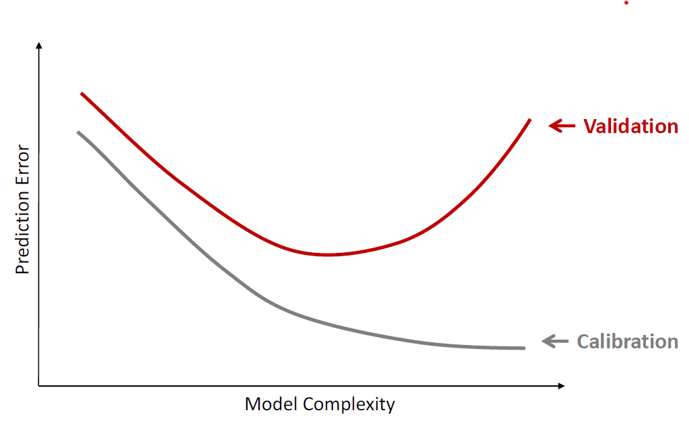
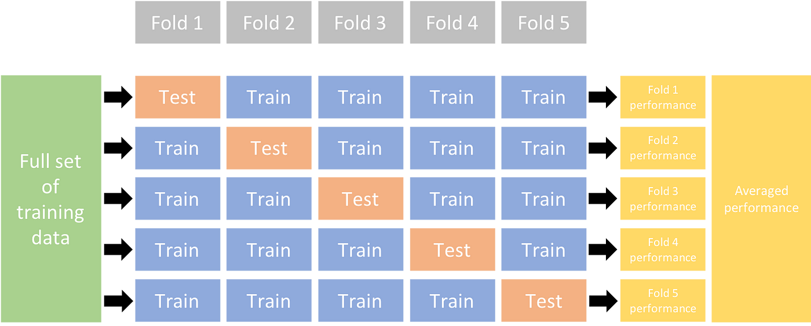
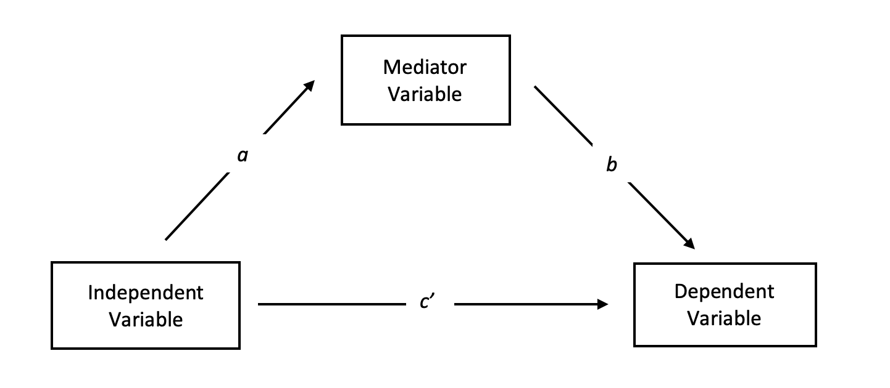
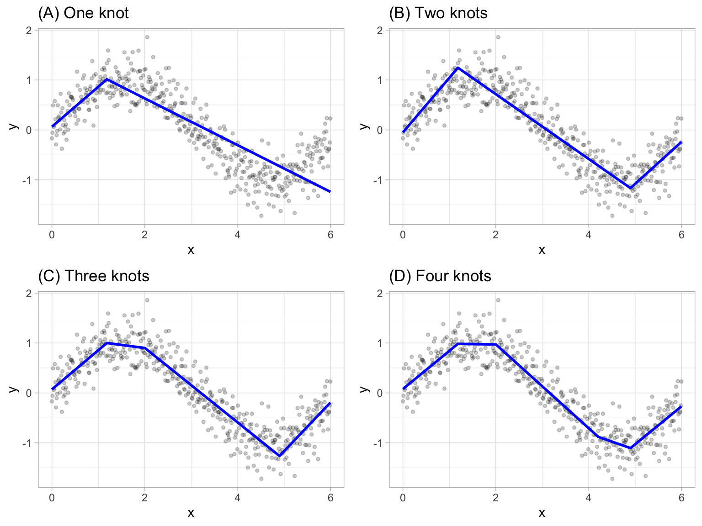
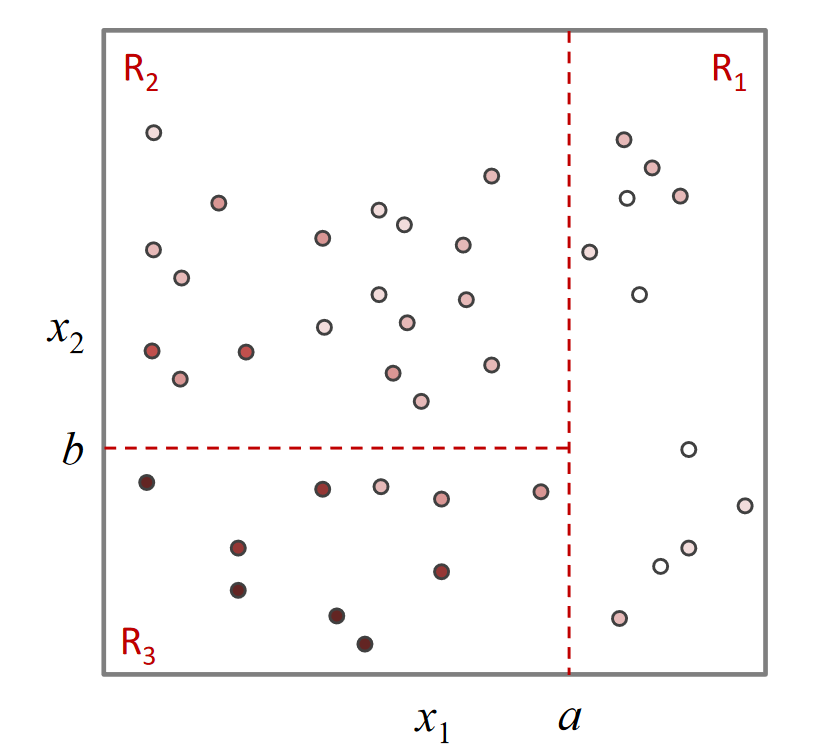
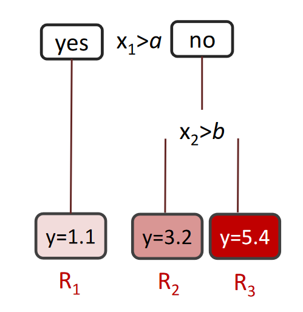

Capítulo 1 Modelos de Regresión
Para qué sirve esta unidad. La regresión es la herramienta cuantitativa más utilizada en marketing para describir relaciones entre variables, evaluar el efecto de acciones comerciales y construir pronósticos de demanda, ventas e ingresos. Comprender cómo especificar, estimar y evaluar un modelo de regresión es un requisito transversal para las unidades posteriores del curso.
Habilidades previas requeridas. Lectura de tablas, noción de variable aleatoria, interpretación de gráficos, álgebra matricial básica y manejo de porcentajes.
Qué debería poder hacer el estudiante al terminar.
- Formular un modelo de regresión lineal con la notación de índices apropiada para un problema de marketing.
- Estimar parámetros por OLS e interpretar coeficientes, signos y significancia.
- Evaluar modelos con métricas de ajuste y predicción (\(R^2\), RMSE, AIC, BIC).
- Elegir entre especificaciones alternativas usando criterios cuantitativos y cualitativos.
- Aplicar modelos de machine learning como alternativa a la regresión clásica.
Conexión con ejercicios. A lo largo del capítulo se incluyen ejercicios guiados que permiten verificar la comprensión de cada concepto a medida que se avanza.
Purpose of this unit. Regression is the most widely used quantitative tool in marketing for describing relationships between variables, evaluating the effect of commercial actions, and building demand, sales, and revenue forecasts. Understanding how to specify, estimate, and evaluate a regression model is a cross-cutting prerequisite for the subsequent units of the course.
Required prior skills. Reading tables, notion of random variable, graph interpretation, basic matrix algebra, and working with percentages.
What the student should be able to do upon completion.
- Formulate a linear regression model with the appropriate index notation for a marketing problem.
- Estimate parameters via OLS and interpret coefficients, signs, and significance.
- Evaluate models using fit and prediction metrics (\(R^2\), RMSE, AIC, BIC).
- Choose among alternative specifications using quantitative and qualitative criteria.
- Apply machine learning models as an alternative to classical regression.
Connection with exercises. Throughout the chapter, guided exercises are included to verify understanding of each concept as the reader progresses.
1.1 Definiciones clave
Antes de introducir la notación formal, conviene estabilizar el vocabulario que se usará a lo largo de la unidad:
Before introducing formal notation, it is useful to establish the vocabulary that will be used throughout this unit:
Definiciones clave
- Regresión: técnica estadística para estimar el valor esperado de una variable (dependiente) condicional en la realización de otras (independientes).
- Variable dependiente (\(y\)): la cantidad que se desea explicar o predecir (ventas, ingresos, demanda).
- Variable explicativa (\(x\)): una característica observable que puede influir en \(y\) (precio, gasto publicitario, estacionalidad).
- Parámetro (\(\beta\)): coeficiente del modelo que cuantifica la relación entre una variable explicativa y la variable dependiente.
- Coeficiente estimado (\(\hat{\beta}\)): valor numérico obtenido al ajustar el modelo a los datos.
- Error (\(\varepsilon\)): diferencia entre el valor observado y el valor predicho por el modelo.
- Pronóstico: valor esperado de \(y\) para un conjunto dado de variables explicativas.
- Causalidad vs. correlación: un modelo de regresión mide correlación entre variables; afirmar causalidad requiere condiciones adicionales (experimentos, variables instrumentales, modelos estructurales).
Key definitions
- Regression: a statistical technique for estimating the expected value of a variable (dependent) conditional on the realization of others (independent).
- Dependent variable (\(y\)): the quantity to be explained or predicted (sales, revenue, demand).
- Explanatory variable (\(x\)): an observable characteristic that may influence \(y\) (price, advertising expenditure, seasonality).
- Parameter (\(\beta\)): a model coefficient that quantifies the relationship between an explanatory variable and the dependent variable.
- Estimated coefficient (\(\hat{\beta}\)): the numerical value obtained by fitting the model to the data.
- Error (\(\varepsilon\)): the difference between the observed value and the value predicted by the model.
- Forecast: the expected value of \(y\) for a given set of explanatory variables.
- Causality vs. correlation: a regression model measures correlation between variables; claiming causality requires additional conditions (experiments, instrumental variables, structural models).
Ejercicio guiado. ¿Cuál(es) es(son) la utilidad de un modelo de regresión?
- Permite medir correlación entre variables.
- Permite medir la magnitud de una relación causal.
- Permite determinar causalidad entre variables.
- Dependiendo de la especificación puede determinar causalidad o correlación, pero no ambas simultáneamente.
Ver solución
Respuestas correctas: i. y ii. Permite medir correlación entre variables y la magnitud de una relación causal.Guided exercise. What is (are) the purpose(s) of a regression model?
- It allows measuring correlation between variables.
- It allows measuring the magnitude of a causal relationship.
- It allows determining causality between variables.
- Depending on the specification, it can determine causality or correlation, but not both simultaneously.
Show solution
Correct answers: i. and ii. It allows measuring correlation between variables and the magnitude of a causal relationship.1.2 Conceptos básicos
Como bien ya se ha estudiado en otros cursos de la carrera de ingeniería industrial, una regresión es una técnica para calcular el valor esperado de una variable condicional en la realización de otras. Por ejemplo:
- ¿Cuál debería ser el precio de venta de una casa en la comuna de Providencia, con 4 dormitorios, 170 \(m^2\) de superficie construida?
- ¿Cuáles deberían ser las ventas de Leche semidescremada Nestlé en la última semana del mes de abril si el precio es $723?
- ¿Cuál debería ser el número de clientes que ve un aviso publicitario si se despliega en 4 programas durante 3 semanas y el rating promedio de los programas es 8.7 puntos?
As studied in other courses in the industrial engineering curriculum, a regression is a technique for computing the expected value of a variable conditional on the realization of others. For example:
- What should the sale price of a house in the Providencia district be, with 4 bedrooms and 170 \(m^2\) of built area?
- What should the weekly sales of Nestlé semi-skimmed milk be in the last week of April if the price is $723?
- How many customers should see an advertisement if it is displayed during 4 shows over 3 weeks and the average rating of the shows is 8.7 points?
1.2.1 Notación
En general se denota con \(y\) al vector que representa todas las variables dependientes en un único vector columna, mientras que \(\mathbf{X}\) representa la matriz que incluye todas las variables independientes (esto incluye una columna de 1s si se desea incluir un intercepto).
Es importante notar que:
- Cada columna corresponde a una variable.
- Cada fila corresponde a un caso.
- Las dimensiones de las filas del vector \(y\) y la matriz \(\mathbf{X}\) deben ser consistentes.
- Todos los elementos de una misma fila deben tener los mismos índices.
Para estimar los parámetros de la recta de regresión se utilizan diferentes métodos, siendo uno de los más populares el método de Mínimos Cuadrados Ordinarios (OLS).
In general, \(y\) denotes the vector that represents all dependent variables in a single column vector, while \(\mathbf{X}\) represents the matrix that includes all independent variables (this includes a column of 1s if an intercept is desired).
It is important to note that:
- Each column corresponds to a variable.
- Each row corresponds to an observation.
- The row dimensions of vector \(y\) and matrix \(\mathbf{X}\) must be consistent.
- All elements in the same row must share the same indices.
To estimate the parameters of the regression line, different methods are used, one of the most popular being Ordinary Least Squares (OLS).
1.3 Mínimos Cuadrados Ordinarios (OLS) y supuestos
OLS proporciona una estimación óptima de los parámetros de la recta de regresión, al encontrar la recta que minimiza la suma de los cuadrados de las diferencias entre los valores reales y los valores estimados de la variable dependiente (Greene, 2018; Wooldridge, 2019). Sin embargo, para que este método sea un estimador adecuado de los parámetros, se deben cumplir ciertos supuestos:
Existe una relación lineal entre la variable dependiente y las variables independientes. Debido a esto, la relación entre las variables se puede modelar mediante una recta. Sin este supuesto, OLS no es apropiado y se debe recurrir a otros métodos.
Los errores tienen una distribución normal y tienen una media igual a cero. Es decir, los errores son insesgados y distribuyen de forma simétrica alrededor del cero. Si los errores no siguen una distribución normal, los resultados de la regresión pueden no ser confiables.
Los errores tienen una varianza constante (homocedasticidad). Esto significa que la varianza de los errores es la misma para todos los valores de las variables independientes. Si no se cumple este supuesto, los errores pueden estar influenciados por alguna variable independiente y los resultados pueden ser incorrectos.
Los errores son independientes entre sí. Es decir, no están correlacionados con los errores de otra observación. Si los errores están correlacionados, la varianza de los coeficientes puede ser demasiado baja, lo que puede llevar a una sobreestimación de la significancia estadística.
No existe multicolinealidad perfecta entre las variables independientes. La multicolinealidad perfecta se refiere a la existencia de una relación lineal exacta entre las variables independientes. Esto puede ocurrir cuando dos o más variables independientes están altamente correlacionadas. Si no se cumple este supuesto, los coeficientes estimados pueden no ser confiables y los resultados pueden ser incorrectos.
OLS provides an optimal estimation of the regression line parameters by finding the line that minimizes the sum of squared differences between the actual and estimated values of the dependent variable (Greene, 2018; Wooldridge, 2019). However, for this method to be an adequate estimator of the parameters, certain assumptions must hold:
There is a linear relationship between the dependent variable and the independent variables. Because of this, the relationship between variables can be modeled by a straight line. Without this assumption, OLS is not appropriate and other methods must be used.
The errors have a normal distribution and have a mean equal to zero. That is, the errors are unbiased and symmetrically distributed around zero. If the errors do not follow a normal distribution, the regression results may not be reliable.
The errors have constant variance (homoscedasticity). This means that the variance of the errors is the same for all values of the independent variables. If this assumption is violated, the errors may be influenced by some independent variable and the results may be incorrect.
The errors are independent of each other. That is, they are not correlated with errors from other observations. If errors are correlated, the variance of the coefficients may be too low, which can lead to an overestimation of statistical significance.
There is no perfect multicollinearity among the independent variables. Perfect multicollinearity refers to the existence of an exact linear relationship among the independent variables. This can occur when two or more independent variables are highly correlated. If this assumption is violated, the estimated coefficients may not be reliable and the results may be incorrect.
Errores comunes cuando no se cumplen los supuestos de OLS.
- Violación de linealidad: el modelo no captura la verdadera relación entre las variables. Las predicciones serán sesgadas sistemáticamente. Se debe considerar transformaciones o modelos no lineales.
- Errores no normales: los intervalos de confianza y los tests de hipótesis dejan de ser válidos. Con muestras grandes, el teorema central del límite puede mitigar el problema.
- Heterocedasticidad: los errores estándar estimados son incorrectos, lo que invalida las pruebas de significancia. Se corrige con errores robustos o mínimos cuadrados generalizados.
- Autocorrelación: los errores estándar subestiman la verdadera variabilidad, generando significancias espurias. Se recurre a modelos de series de tiempo o errores agrupados.
- Multicolinealidad: los coeficientes individuales se vuelven inestables y difíciles de interpretar, aunque las predicciones del modelo pueden seguir siendo razonables.
Common errors when OLS assumptions are violated.
- Linearity violation: the model fails to capture the true relationship between variables. Predictions will be systematically biased. Transformations or nonlinear models should be considered.
- Non-normal errors: confidence intervals and hypothesis tests are no longer valid. With large samples, the central limit theorem may mitigate the problem.
- Heteroscedasticity: estimated standard errors are incorrect, invalidating significance tests. This is corrected with robust standard errors or generalized least squares.
- Autocorrelation: standard errors underestimate the true variability, generating spurious significances. Time series models or clustered standard errors are used.
- Multicollinearity: individual coefficients become unstable and difficult to interpret, although the model’s predictions may remain reasonable.
En general, se utiliza OLS porque proporciona una estimación óptima de los parámetros de la recta de regresión, es decir, los valores que mejor se ajustan a los datos. El método OLS minimiza la suma de los cuadrados de las diferencias entre los valores reales y los valores estimados de la variable dependiente. Esto se logra al encontrar los valores de los parámetros de la recta que minimizan esta suma de cuadrados.
In general, OLS is used because it provides an optimal estimation of the regression line parameters, that is, the values that best fit the data. The OLS method minimizes the sum of squared differences between the actual and estimated values of the dependent variable. This is achieved by finding the values of the line parameters that minimize this sum of squares.
1.3.1 Estimación
Considérese el problema de estimar los parámetros \(\beta_0, \beta_1, \ldots, \beta_n\) de la recta de regresión \(Y = \beta_0 + \beta_1 x_1 + \cdots + \beta_n x_n + \varepsilon\), donde \(\varepsilon\) es el término de error e \(Y\) es la variable dependiente. Queremos encontrar los valores de los parámetros \(\beta_0, \beta_1, \ldots, \beta_n\) que minimizan la suma de los cuadrados de las diferencias entre los valores reales y los valores estimados de \(Y\).
La idea detrás del método de Mínimos Cuadrados Ordinarios (OLS) es minimizar la función de pérdida \(S(\beta_0, \beta_1, \ldots, \beta_n) = \sum_{i=1}^N (Y_i - \beta_0 - \beta_1 x_{i1} - \cdots - \beta_n x_{in})^2\). La solución de este problema de optimización se puede encontrar a través del cálculo de las derivadas parciales de \(S\) con respecto a cada uno de los parámetros \(\beta_j\), e igualar a cero. Esto lleva al siguiente sistema de ecuaciones:
Consider the problem of estimating the parameters \(\beta_0, \beta_1, \ldots, \beta_n\) of the regression line \(Y = \beta_0 + \beta_1 x_1 + \cdots + \beta_n x_n + \varepsilon\), where \(\varepsilon\) is the error term and \(Y\) is the dependent variable. We want to find the values of the parameters \(\beta_0, \beta_1, \ldots, \beta_n\) that minimize the sum of squared differences between the actual and estimated values of \(Y\).
The idea behind the Ordinary Least Squares (OLS) method is to minimize the loss function \(S(\beta_0, \beta_1, \ldots, \beta_n) = \sum_{i=1}^N (Y_i - \beta_0 - \beta_1 x_{i1} - \cdots - \beta_n x_{in})^2\). The solution to this optimization problem can be found by computing the partial derivatives of \(S\) with respect to each parameter \(\beta_j\) and setting them equal to zero. This leads to the following system of equations:
\[\hat{\boldsymbol{\beta}}=(\mathbf{X}^T\mathbf{X})^{-1}\mathbf{X}^T\mathbf{y} \tag{1.1}\]
donde \(\mathbf{X}\) es la matriz de variables independientes, \(\mathbf{y}\) es el vector de la variable dependiente y \(\hat{\boldsymbol{\beta}}\) es el vector de estimadores de mínimos cuadrados.
La solución de este sistema entrega los valores de los parámetros \(\beta_0, \beta_1, \ldots, \beta_n\) que minimizan la función de pérdida \(S(\beta_0, \beta_1, \ldots, \beta_n)\). Estos valores se conocen como los estimadores de mínimos cuadrados de los parámetros de la recta de regresión.
where \(\mathbf{X}\) is the matrix of independent variables, \(\mathbf{y}\) is the dependent variable vector, and \(\hat{\boldsymbol{\beta}}\) is the vector of least squares estimators.
The solution to this system yields the values of the parameters \(\beta_0, \beta_1, \ldots, \beta_n\) that minimize the loss function \(S(\beta_0, \beta_1, \ldots, \beta_n)\). These values are known as the least squares estimators of the regression line parameters.
1.3.2 Propiedades
Si se cumplen los supuestos anteriormente mencionados, mínimos cuadrados ordinarios cumple con las siguientes propiedades:
Insesgadez: Los estimadores de mínimos cuadrados son insesgados, lo que significa que, en promedio, su valor esperado es igual al verdadero valor del parámetro que se está estimando.
Eficiencia: Entre todos los estimadores insesgados y lineales, los estimadores de mínimos cuadrados tienen la menor varianza posible.
Linealidad: Los estimadores de mínimos cuadrados son lineales en la variable de respuesta \(Y\).
Consistencia: Con un tamaño de muestra lo suficientemente grande, los estimadores de mínimos cuadrados se acercan al verdadero valor del parámetro que se está estimando.
El estimador máximo verosímil, para el caso lineal con errores normales, coincide con el estimador de mínimos cuadrados.
Según el teorema de Gauss-Markov, al cumplirse las propiedades de insesgadez, eficiencia y linealidad, los estimadores de OLS son BLUE (Best Linear Unbiased Estimators).
If the previously mentioned assumptions hold, ordinary least squares satisfies the following properties:
Unbiasedness: The least squares estimators are unbiased, meaning that, on average, their expected value equals the true value of the parameter being estimated.
Efficiency: Among all unbiased linear estimators, the least squares estimators have the smallest possible variance.
Linearity: The least squares estimators are linear in the response variable \(Y\).
Consistency: With a sufficiently large sample size, the least squares estimators converge to the true value of the parameter being estimated.
The maximum likelihood estimator, for the linear case with normal errors, coincides with the least squares estimator.
According to the Gauss-Markov theorem, when the properties of unbiasedness, efficiency, and linearity hold, the OLS estimators are BLUE (Best Linear Unbiased Estimators).
Propiedades clave de OLS (resumen).
- BLUE: bajo los supuestos clásicos, OLS es el mejor estimador lineal insesgado (Gauss-Markov).
- Insesgadez: \(\mathbb{E}[\hat{\beta}] = \beta\).
- Eficiencia: menor varianza entre estimadores lineales insesgados.
- Consistencia: \(\hat{\beta} \to \beta\) cuando \(n \to \infty\).
- Equivalencia MV: con errores normales, OLS coincide con máxima verosimilitud.
Key properties of OLS (summary).
- BLUE: under the classical assumptions, OLS is the Best Linear Unbiased Estimator (Gauss-Markov).
- Unbiasedness: \(\mathbb{E}[\hat{\beta}] = \beta\).
- Efficiency: lowest variance among linear unbiased estimators.
- Consistency: \(\hat{\beta} \to \beta\) as \(n \to \infty\).
- ML equivalence: with normal errors, OLS coincides with maximum likelihood.
Ejemplo 1 (Conceptual). Una cadena de supermercados desea entender cómo el precio afecta las ventas semanales de un producto. Se propone el modelo \(\ln(Q_{st}) = \alpha_s + \beta \ln(P_{st}) + \varepsilon_{st}\), donde \(Q_{st}\) son las unidades vendidas en la tienda \(s\) durante la semana \(t\), \(P_{st}\) es el precio y \(\alpha_s\) es un efecto fijo por tienda.
- Especificación: el modelo log-log implica que \(\beta\) se interpreta como la elasticidad precio de la demanda.
- Estimación: OLS entrega \(\hat{\beta} = -1.8\) con error estándar \(0.3\).
- Interpretación: un aumento de 1% en el precio se asocia a una reducción de 1.8% en las ventas, controlando por diferencias entre tiendas.
Example 1 (Conceptual). A supermarket chain wants to understand how price affects a product’s weekly sales. The proposed model is \(\ln(Q_{st}) = \alpha_s + \beta \ln(P_{st}) + \varepsilon_{st}\), where \(Q_{st}\) is the number of units sold in store \(s\) during week \(t\), \(P_{st}\) is the price, and \(\alpha_s\) is a store fixed effect.
- Specification: the log-log model implies that \(\beta\) is interpreted as the price elasticity of demand.
- Estimation: OLS yields \(\hat{\beta} = -1.8\) with standard error \(0.3\).
- Interpretation: a 1% increase in price is associated with a 1.8% decrease in sales, controlling for differences across stores.
1.4 Estrategias de Modelamiento
1.4.1 Arte vs. procedimiento
El debate entre el arte y el procedimiento en el campo de la modelización y análisis de datos se ha intensificado en los últimos años con el auge de la inteligencia artificial y el aprendizaje automático. Los defensores del arte argumentan que la experiencia y la intuición del analista son esenciales para identificar patrones y relaciones complejas en los datos que no son evidentes a simple vista. Por otro lado, los defensores del procedimiento insisten en que la aplicación rigurosa de algoritmos y técnicas estadísticas es la única manera de garantizar la validez y precisión del modelo.
Es importante tener en cuenta que el uso exclusivo de uno u otro enfoque puede llevar a resultados subóptimos. Por ejemplo, un modelo construido únicamente a través del arte puede ser difícil de replicar o explicar a otros, lo que limita su utilidad práctica. Por otro lado, un modelo construido únicamente a través del procedimiento puede pasar por alto aspectos importantes de los datos que son evidentes para un experto en el campo.
En la práctica, los analistas suelen combinar ambos enfoques para construir modelos efectivos y útiles. Un aspecto clave en este proceso es la exploración exhaustiva de los datos y la definición de una lista de modelos candidatos, que pueden incluir diferentes técnicas de modelización y selección de variables. Luego, se pueden utilizar diversas métricas de ajuste y predicción para evaluar la calidad de cada modelo y seleccionar el que mejor se ajuste a los datos y sea capaz de hacer predicciones precisas.
The debate between art and procedure in the field of modeling and data analysis has intensified in recent years with the rise of artificial intelligence and machine learning. Proponents of art argue that the analyst’s experience and intuition are essential for identifying complex patterns and relationships in data that are not evident at first glance. On the other hand, proponents of procedure insist that the rigorous application of algorithms and statistical techniques is the only way to ensure model validity and precision.
It is important to keep in mind that using only one or the other approach may lead to suboptimal results. For example, a model built exclusively through art may be difficult to replicate or explain to others, which limits its practical usefulness. On the other hand, a model built exclusively through procedure may overlook important aspects of the data that are evident to a domain expert.
In practice, analysts typically combine both approaches to build effective and useful models. A key aspect of this process is the exhaustive exploration of data and the definition of a list of candidate models, which may include different modeling techniques and variable selection methods. Then, various fit and prediction metrics can be used to evaluate the quality of each model and select the one that best fits the data and is capable of making accurate predictions.
1.4.2 Aprendizajes Preliminares
En el ámbito del modelado estadístico, existen innumerables modelos de regresión, lo que hace imposible determinar cuál es el mejor en términos absolutos. Una forma de abordar este problema es equilibrar la complejidad del modelo con su capacidad explicativa.
Esto significa que el modelo debe ser lo suficientemente simple como para ser fácilmente interpretable, pero lo suficientemente complejo como para capturar todas las relaciones relevantes entre las variables.
Para seleccionar un modelo de regresión adecuado, es fundamental tener conocimientos previos del negocio y realizar una exploración exhaustiva de los datos antes de aplicar cualquier modelo. Esta exploración ex-ante puede ayudar a identificar las variables más relevantes y las posibles relaciones entre ellas. Es importante evaluar cómo se relacionan las variables, qué variables tienen mayor dispersión y qué variables se mantienen relativamente constantes.
Después de la exploración ex-ante, es necesario aplicar el modelo y evaluar su rendimiento mediante la evaluación ex-post. Esto implica evaluar el modelo en datos nuevos y comprobar si se comporta de manera similar a cómo lo hizo en los datos de entrenamiento.
La siguiente lista organiza las decisiones clave:
In the field of statistical modeling, there are countless regression models, making it impossible to determine which is the best in absolute terms. One way to address this problem is to balance model complexity with its explanatory capacity.
This means that the model must be simple enough to be easily interpretable, yet complex enough to capture all the relevant relationships among the variables.
To select an appropriate regression model, it is essential to have prior business knowledge and to conduct an exhaustive exploration of the data before applying any model. This ex-ante exploration can help identify the most relevant variables and the possible relationships among them. It is important to assess how the variables relate to one another, which variables display greater dispersion, and which variables remain relatively constant.
After the ex-ante exploration, it is necessary to apply the model and evaluate its performance through ex-post evaluation. This involves assessing the model on new data and checking whether it behaves similarly to how it did on the training data.
The following list organizes the key decisions:
1. Elegir nivel de agregación
Uno de los aspectos clave del análisis de datos es determinar el nivel adecuado de agregación para realizar el análisis. Por ejemplo, se puede analizar las ventas de un producto en un supermercado por hora, día, semana, mes o año. También se puede considerar el análisis de ventas por SKU (código de identificación), marca, cadena o sala.
Es importante tener en cuenta que el problema de gestión puede imponer restricciones al nivel de agregación mínimo. Por ejemplo, si un gerente de una cadena de supermercados necesita tomar decisiones en tiempo real sobre la reposición de un producto, es posible que necesite datos a nivel de hora o día. En este caso, analizar las ventas a nivel de semana o mes no sería útil.
En el análisis de ventas, a menudo se enfrenta un trade-off entre la sensibilidad al precio y la programación de reposición. Si el análisis se realiza a nivel de SKU, se puede obtener una comprensión más detallada de cómo el precio afecta a las ventas. Sin embargo, si el análisis se realiza a nivel de cadena o sala, se puede obtener una mejor comprensión de los patrones de reposición.
Agregar los datos a un nivel de agregación más alto puede ser más fácil, ya que se requiere menos detalle y se puede tener una visión más general. Sin embargo, puede llevar a una pérdida de precisión por underfitting. Por ejemplo, si se analiza las ventas a nivel de mes, se puede perder información valiosa sobre patrones diarios o semanales. Por otro lado, si la cantidad de datos es limitada, es posible que se necesite mantener un nivel de agregación más alto para obtener un modelo preciso. En este caso, reducir el nivel de agregación puede significar la pérdida de información importante y la reducción de la precisión del modelo por overfitting.
1. Choose the level of aggregation
One of the key aspects of data analysis is determining the appropriate level of aggregation for the analysis. For example, one can analyze the sales of a product in a supermarket by hour, day, week, month, or year. One can also consider analyzing sales by SKU (identification code), brand, chain, or store.
It is important to note that the management problem may impose constraints on the minimum aggregation level. For example, if a supermarket chain manager needs to make real-time decisions about product replenishment, hourly or daily data may be required. In that case, analyzing sales at the weekly or monthly level would not be useful.
In sales analysis, one often faces a trade-off between price sensitivity and replenishment scheduling. If the analysis is conducted at the SKU level, one can obtain a more detailed understanding of how price affects sales. However, if the analysis is conducted at the chain or store level, one can obtain a better understanding of replenishment patterns.
Aggregating data to a higher level can be easier, since less detail is required and a more general view can be obtained. However, it may lead to a loss of precision due to underfitting. For example, if sales are analyzed at the monthly level, valuable information about daily or weekly patterns may be lost. On the other hand, if the amount of data is limited, it may be necessary to keep a higher aggregation level in order to obtain an accurate model. In that case, reducing the aggregation level may imply the loss of important information and a reduction in model accuracy due to overfitting.
2. Descomposición en múltiples regresiones
La descomposición en múltiples regresiones es una técnica que permite abordar problemas complejos y de alta dimensionalidad mediante la partición del problema en componentes más pequeños y manejables. Este enfoque puede adoptar diversas formas.
Descomposición por índices: Aunque en general es preferible utilizar una única regresión para analizar las relaciones entre las variables, en ciertas situaciones, como en casos de complejidad computacional elevada o cuando se abordan problemas con múltiples niveles de jerarquía, la descomposición por índices puede ser una solución adecuada. Esta técnica implica dividir el conjunto de datos en subconjuntos según algún criterio y ajustar modelos de regresión separados para cada subconjunto.
Regresión lineal y modelos más complejos: La regresión lineal es un enfoque simple y fácil de estimar que puede ser suficiente en muchos casos. Sin embargo, en situaciones donde las relaciones entre las variables no son lineales o donde se requiere una mayor flexibilidad en el modelado, se pueden justificar modelos más complejos, como regresiones polinómicas, regresiones no paramétricas o modelos de regresión con variables categóricas.
Descomposición por componentes latentes: En ciertos casos, la variable dependiente puede descomponerse de manera natural en componentes latentes, lo que facilita la interpretación de los resultados y la identificación de relaciones subyacentes entre las variables. Un ejemplo típico es la descomposición de las ventas en el número de compras y el número de unidades por compra. Al analizar estos componentes por separado, se puede obtener una comprensión más detallada de los factores que influyen en las ventas.
Caso del cero inflado (zero inflated): En algunas situaciones, se pueden observar una gran cantidad de ceros en los datos, lo que indica una distribución inflada en cero. En estos casos, se puede utilizar un modelo de regresión de ceros inflados que distingue entre dos procesos distintos: la incidencia de compra (probabilidad de que ocurra una compra) y el monto de compra (valor de la compra, condicional a que se haya realizado una compra). Este enfoque permite analizar de manera más efectiva los factores que afectan tanto la propensión a comprar como la cantidad gastada en las compras.
2. Decomposition into multiple regressions
Decomposition into multiple regressions is a technique that allows complex and high-dimensional problems to be addressed by partitioning the problem into smaller, more manageable components. This approach can take various forms.
Decomposition by indices: Although in general it is preferable to use a single regression to analyze the relationships among variables, in certain situations, such as cases of high computational complexity or when dealing with problems involving multiple levels of hierarchy, decomposition by indices may be an appropriate solution. This technique involves dividing the dataset into subsets according to some criterion and fitting separate regression models for each subset.
Linear regression and more complex models: Linear regression is a simple and easy-to-estimate approach that may be sufficient in many cases. However, in situations where relationships among variables are nonlinear or where greater modeling flexibility is required, more complex models may be justified, such as polynomial regressions, nonparametric regressions, or regression models with categorical variables.
Decomposition by latent components: In some cases, the dependent variable can be naturally decomposed into latent components, which facilitates interpretation of the results and the identification of underlying relationships among variables. A typical example is the decomposition of sales into the number of purchases and the number of units per purchase. By analyzing these components separately, one can obtain a more detailed understanding of the factors that influence sales.
Zero-inflated case: In some situations, one may observe a large number of zeros in the data, indicating a zero-inflated distribution. In these cases, a zero-inflated regression model can be used to distinguish between two different processes: purchase incidence (the probability that a purchase occurs) and purchase amount (the value of the purchase, conditional on a purchase having occurred). This approach allows a more effective analysis of the factors that affect both the propensity to buy and the amount spent on purchases.
3. Transformación de variables
La transformación de variables es una técnica utilizada para mejorar la interpretación y el ajuste del modelo. Esta técnica consiste en aplicar funciones matemáticas a las variables con el objetivo de modificar su distribución y hacer que el modelo sea más interpretable y significativo.
Un ejemplo común de transformación de variables es el modelo doble log, en el cual se aplican logaritmos a las variables dependientes e independientes para transformar la relación no lineal en una relación lineal. Esta técnica puede ser útil cuando se analizan datos que siguen una distribución log-normal o cuando se busca interpretar los coeficientes de manera logarítmica.
Es importante tener en cuenta que, aunque la transformación de variables puede mejorar la bondad del ajuste y la precisión de las predicciones, no siempre es necesario aplicarla. En algunos casos, las variables ya están en una forma adecuada para el modelo y cualquier transformación adicional podría reducir la interpretabilidad del modelo. Por lo tanto, es importante tener una comprensión sólida de los datos y del problema a resolver antes de aplicar cualquier transformación de variables.
3. Variable transformation
Variable transformation is a technique used to improve model interpretation and fit. This technique consists of applying mathematical functions to variables in order to modify their distribution and make the model more interpretable and meaningful.
A common example of variable transformation is the double-log model, in which logarithms are applied to both dependent and independent variables to transform the nonlinear relationship into a linear one. This technique can be useful when analyzing data that follow a log-normal distribution or when one seeks to interpret the coefficients in logarithmic terms.
It is important to keep in mind that, although variable transformation can improve goodness of fit and predictive accuracy, it is not always necessary. In some cases, the variables are already in a form that is appropriate for the model, and any additional transformation could reduce interpretability. Therefore, it is important to have a solid understanding of both the data and the problem before applying any variable transformation.
| Modelo | Var. dependiente | Var. independiente | Interpretación |
|---|---|---|---|
| Nivel-nivel | \(Y\) | \(X\) | \(\Delta Y = \beta_1 \Delta X\) |
| Nivel-log | \(Y\) | \(\log(X)\) | \(\Delta Y = \frac{\beta_1}{100}\% \Delta X\) |
| Log-nivel | \(\log(Y)\) | \(X\) | \(\%\Delta Y = (100\beta_1)\Delta X\) |
| Log-log | \(\log(Y)\) | \(\log(X)\) | \(\%\Delta Y = \beta_1 \%\Delta X\) |
| Model | Dep. variable | Indep. variable | Interpretation |
|---|---|---|---|
| Level-level | \(Y\) | \(X\) | \(\Delta Y = \beta_1 \Delta X\) |
| Level-log | \(Y\) | \(\log(X)\) | \(\Delta Y = \frac{\beta_1}{100}\% \Delta X\) |
| Log-level | \(\log(Y)\) | \(X\) | \(\%\Delta Y = (100\beta_1)\Delta X\) |
| Log-log | \(\log(Y)\) | \(\log(X)\) | \(\%\Delta Y = \beta_1 \%\Delta X\) |
Ejemplo 2 (Interpretación de coeficientes). Dado el modelo \(\ln(y) = \beta_0 + \beta_1 x_1 + \beta_2 \ln(x_2)\), la interpretación correcta es:
- Un aumento de una unidad en \(x_1\) se asocia a un cambio de \((100 \cdot \beta_1)\%\) en \(y\) (relación log-nivel).
- Un aumento de 1% en \(x_2\) se asocia a un cambio de \(\beta_2\%\) en \(y\) (relación log-log).
Nótese que un aumento de una unidad en \(x_2\) no causa un aumento de \(\beta_2\%\) en \(y\); esa lectura confunde la escala log-log con la log-nivel.
Example 2 (Coefficient interpretation). Given the model \(\ln(y) = \beta_0 + \beta_1 x_1 + \beta_2 \ln(x_2)\), the correct interpretation is:
- A one-unit increase in \(x_1\) is associated with a \((100 \cdot \beta_1)\%\) change in \(y\) (log-level relationship).
- A 1% increase in \(x_2\) is associated with a \(\beta_2\%\) change in \(y\) (log-log relationship).
Note that a one-unit increase in \(x_2\) does not cause a \(\beta_2\%\) increase in \(y\); that reading confuses the log-log scale with the log-level scale.
Ejercicio guiado. Dado el modelo \(\ln(y)=\beta_{0}+\beta_{1}x_{1}+\beta_{2}\ln(x_{2})\), se puede asegurar que:
- Un aumento de una unidad en \(x_{1}\) causa un aumento de \(\beta_{0}\) unidades en \(y\).
- Un aumento de una unidad en \(x_{2}\) causa un aumento de \(\beta_{2}\)% unidades en \(y\).
- Un aumento de un 1% en \(x_{2}\) causa un aumento de \(\beta_{2}\) unidades en \(y\).
- Un aumento de un 1% en \(x_{2}\) causa un aumento de \(\beta_{2}\)% unidades en \(y\).
- Ninguna de las anteriores.
Ver solución
Respuesta correcta: e. Ninguna de las anteriores. Un aumento de 1% en \(x_2\) causa un cambio de \(\beta_2/100\) en \(\ln(y)\).Guided exercise. Given the model \(\ln(y)=\beta_{0}+\beta_{1}x_{1}+\beta_{2}\ln(x_{2})\), one can assert that:
- A one-unit increase in \(x_{1}\) causes an increase of \(\beta_{0}\) units in \(y\).
- A one-unit increase in \(x_{2}\) causes an increase of \(\beta_{2}\)% units in \(y\).
- A 1% increase in \(x_{2}\) causes an increase of \(\beta_{2}\) units in \(y\).
- A 1% increase in \(x_{2}\) causes an increase of \(\beta_{2}\)% units in \(y\).
- None of the above.
Show solution
Correct answer: e. None of the above. A 1% increase in \(x_2\) causes a change of \(\beta_2/100\) in \(\ln(y)\).Ejercicio guiado. ¿Cuál de las siguientes especificaciones NO permite capturar que las diferencias en el comportamiento \(y\) se van incrementando a medida que aumenta la edad de los sujetos?
- \(y=\beta_{0}+\sum_{i}\beta_{i}\text{Dummy}_{i},\quad i=\{\text{niños, jóvenes, adultos, ancianos}\}\)
- \(y=\beta_{0}+\beta_{1}\ln(\text{edad})\)
- \(y=\beta_{0}+\beta_{1}\text{edad}+\beta_{2}\text{edad}^{2}\)
- \(y=\beta_{0}+\beta_{1}\exp(\text{edad})\)
- Ninguna de las anteriores.
Ver solución
Respuesta correcta: b. \(y=\beta_{0}+\beta_{1}\ln(\text{edad})\).Guided exercise. Which of the following specifications does NOT allow capturing that differences in the behavior of \(y\) increase as the subjects’ age increases?
- \(y=\beta_{0}+\sum_{i}\beta_{i}\text{Dummy}_{i},\quad i=\{\text{children, youth, adults, elderly}\}\)
- \(y=\beta_{0}+\beta_{1}\ln(\text{age})\)
- \(y=\beta_{0}+\beta_{1}\text{age}+\beta_{2}\text{age}^{2}\)
- \(y=\beta_{0}+\beta_{1}\exp(\text{age})\)
- None of the above.
Show solution
Correct answer: b. \(y=\beta_{0}+\beta_{1}\ln(\text{age})\).4. Selección de variables
En el campo de la regresión, existen diferentes enfoques para la selección de variables, incluyendo métodos automáticos y manuales. Uno de los métodos automáticos más utilizados es la regresión paso a paso (stepwise regression), que implica la iterativa agregación o eliminación de variables en función de algún criterio de bondad de ajuste.
En el enfoque forward de la regresión paso a paso, las variables se van agregando al modelo una por una, comenzando con la variable que proporciona el mejor ajuste según el criterio establecido. En cada etapa, se evalúa si agregar una nueva variable mejora significativamente el ajuste del modelo.
Por otro lado, en el enfoque backward de la regresión paso a paso, todas las variables se incluyen inicialmente en el modelo y se van eliminando una por una, comenzando con la variable que menos contribuye al ajuste según el criterio establecido. En cada etapa, se evalúa si eliminar una variable mejora significativamente el ajuste del modelo.
Otro enfoque de selección de variables es la penalización de uso de parámetros no nulos al momento de minimizar la función de error. Dentro de este enfoque se encuentra la regresión Ridge y LASSO (Least Absolute Shrinkage and Selection Operator)
4. Variable selection
In the field of regression, there are different approaches for variable selection, including automatic and manual methods. One of the most widely used automatic methods is stepwise regression, which involves iteratively adding or removing variables based on some goodness-of-fit criterion.
In the forward stepwise approach, variables are added to the model one at a time, starting with the variable that provides the best fit according to the selected criterion. At each stage, one evaluates whether adding a new variable significantly improves model fit.
In the backward stepwise approach, all variables are initially included in the model and then removed one by one, starting with the variable that contributes the least to fit according to the selected criterion. At each stage, one evaluates whether removing a variable significantly improves model fit.
Another variable-selection approach is to penalize the use of nonzero parameters when minimizing the loss function. This approach includes Ridge regression and LASSO (Least Absolute Shrinkage and Selection Operator)
\[\text{Ridge: }\min_{\boldsymbol{\beta}} \sum_{i}\left(y_i - \beta_0 - \textstyle\sum_{j}\beta_{j}x_{ij}\right)^2 + \lambda\sum_{j}\beta_{j}^2 \tag{1.2}\] \[\text{LASSO: }\min_{\boldsymbol{\beta}}\sum_{i}\left(y_i - \beta_0 - \textstyle\sum_{j}\beta_{j}x_{ij}\right)^2 + \lambda\sum_{j}|\beta_{j}| \tag{1.3}\]
Aunque estos enfoques automáticos de selección de variables pueden ser convenientes y ahorrar tiempo, es importante tener en cuenta algunas limitaciones. En primer lugar, las implementaciones automáticas de selección de variables no exploran todas las posibles combinaciones de variables, lo que significa que podrían pasar por alto combinaciones óptimas que un enfoque manual más exhaustivo podría descubrir.
Además, los resultados de la selección automática de variables pueden generar conjuntos de variables poco intuitivos y difíciles de interpretar. A veces, el algoritmo puede seleccionar variables que tienen una relación estadística con la variable de respuesta, pero carecen de una interpretación causal o intuitiva en el contexto del problema.
Una alternativa es utilizar una mixtura entre métodos automáticos y manuales, eligiendo aquellas variables que mejoran el modelo en ajuste y que igualmente tienen un sentido interpretativo para la resolución de la pregunta a responder.
Although these automatic variable-selection approaches can be convenient and save time, it is important to keep some limitations in mind. First, automatic variable-selection implementations do not explore all possible combinations of variables, meaning that they may overlook optimal combinations that a more exhaustive manual approach could discover.
In addition, the results of automatic variable selection may generate sets of variables that are unintuitive and difficult to interpret. At times, the algorithm may select variables that have a statistical relationship with the response variable, but lack a causal or intuitive interpretation in the context of the problem.
An alternative is to use a mixture of automatic and manual methods, selecting those variables that improve model fit while also having an interpretive meaning for answering the question of interest.
| Criterio | Ventaja | Riesgo |
|---|---|---|
| Stepwise (AIC/BIC) | Automatizable, rápido | No explora todas las combinaciones |
| LASSO | Selecciona y regulariza simultáneamente | Puede eliminar variables correlacionadas relevantes |
| Ridge | Reduce varianza de estimadores | No realiza selección de variables (mantiene todas) |
| Manual / experto | Interpretabilidad garantizada | Sesgo del analista, lento en alta dimensión |
| Criterion | Advantage | Risk |
|---|---|---|
| Stepwise (AIC/BIC) | Automated, fast | Does not explore all combinations |
| LASSO | Selects and regularizes simultaneously | May drop relevant correlated variables |
| Ridge | Reduces estimator variance | Does not perform variable selection (keeps all) |
| Manual / expert | Guaranteed interpretability | Analyst bias, slow in high dimensions |
Ejercicio guiado. ¿Cuál de las siguientes afirmaciones caracterizan adecuadamente a la selección automática de variables para un modelo de regresión lineal? (Puede seleccionar más de una opción):
- Vienen predefinidas en planillas de cálculo.
- Son siempre peores que selección manual.
- Sólo pueden aplicarse sobre el subconjunto de variables continuas.
- No consideran todos los modelos posibles.
Ver solución
Respuesta correcta: iv. No consideran todos los modelos posibles.Guided exercise. Which of the following statements adequately characterize automatic variable selection for a linear regression model? (You may select more than one option):
- They come predefined in spreadsheet software.
- They are always worse than manual selection.
- They can only be applied to the subset of continuous variables.
- They do not consider all possible models.
Show solution
Correct answer: iv. They do not consider all possible models.5. Selección de índices
La selección de índices en el análisis de regresión es un proceso discrecional que puede influir significativamente en la interpretación y el rendimiento de los modelos. Para abordar este problema de manera efectiva, se pueden seguir algunas pautas generales que ayuden a identificar y justificar la inclusión de índices en el análisis.
Condiciones para Indexar un Parámetro Es recomendable considerar la inclusión de un índice en un modelo de regresión si se cumplen las siguientes tres condiciones:
Relevancia para el problema de gestión: El índice debe ser importante para abordar el problema de gestión en cuestión, proporcionando una distinción significativa entre diferentes aspectos del problema.
Diferencias en el comportamiento de la variable dependiente: La variable dependiente debe mostrar comportamientos distintos para cada índice, lo que sugiere que la desagregación aporta información adicional útil.
Suficiencia de datos: Deben estar disponibles suficientes datos para estimar de manera confiable los parámetros desagregados. La falta de datos puede conducir a estimaciones poco fiables y a un mayor riesgo de sobreajuste.
Índices y Variables Binarias: En el análisis de regresión, los índices pueden representarse mediante variables binarias, también conocidas como variables dummy. Estas variables toman el valor de 1 cuando se cumple una condición específica (por ejemplo, si un producto pertenece a una categoría determinada) y 0 en caso contrario. Aunque la representación de índices mediante variables binarias es matemáticamente equivalente, la notación de índices suele ser más compacta y se prefiere en la mayoría de los casos.
5. Index selection
Index selection in regression analysis is a discretionary process that can significantly influence model interpretation and performance. To address this problem effectively, one can follow some general guidelines that help identify and justify the inclusion of indices in the analysis.
Conditions for Indexing a Parameter It is advisable to consider the inclusion of an index in a regression model if the following three conditions are met:
Relevance to the management problem: The index must be important for addressing the management problem at hand, providing a meaningful distinction among different aspects of the problem.
Differences in the behavior of the dependent variable: The dependent variable should display different behaviors for each index, suggesting that disaggregation provides additional useful information.
Sufficiency of data: Sufficient data must be available to reliably estimate the disaggregated parameters. A lack of data may lead to unreliable estimates and a higher risk of overfitting.
Indices and Binary Variables: In regression analysis, indices can be represented by binary variables, also known as dummy variables. These variables take the value 1 when a specific condition is met (for example, if a product belongs to a certain category) and 0 otherwise. Although representing indices through binary variables is mathematically equivalent, index notation is usually more compact and is preferred in most cases.
Ejercicio guiado. Se tiene el siguiente modelo lineal de venta de productos:
\[Q_{ist}=\theta_{s}+\mu_{is}P_{ist}+\gamma t+\varepsilon_{ist}\]
Donde \(Q_{ist}\) es la cantidad vendida del producto \(i\) en la tienda \(s\) en el año \(t\) y \(P_{ist}\) el precio. El set de datos contiene registros para 5 productos y 5 tiendas entre 1960 y 2015. A partir de esto, se puede afirmar que (puede elegir más de una opción):
- Transformar \(\gamma t\) en \(\gamma_{t}\) no influye en el modelo ya que son equivalentes.
- Transformar los coeficientes \(\mu_{is}\) a \(\mu_{i}+\mu_{s}\) implica calcular menos parámetros.
- El modelo no permite capturar comportamiento cíclico de la demanda.
- Los parámetros \(\theta_{s}\) y \(\mu_{is}\) no pueden estimarse simultáneamente.
Ver solución
Respuestas correctas: ii. y iii. Transformar \(\mu_{is}\) a \(\mu_{i}+\mu_{s}\) reduce parámetros; el modelo no permite capturar comportamiento cíclico de la demanda.Guided exercise. Consider the following linear model for product sales:
\[Q_{ist}=\theta_{s}+\mu_{is}P_{ist}+\gamma t+\varepsilon_{ist}\]
Where \(Q_{ist}\) is the quantity sold of product \(i\) in store \(s\) in year \(t\) and \(P_{ist}\) is the price. The dataset contains records for 5 products and 5 stores between 1960 and 2015. Based on this, which of the following can be asserted (you may select more than one option):
- Transforming \(\gamma t\) into \(\gamma_{t}\) does not affect the model since they are equivalent.
- Transforming the coefficients \(\mu_{is}\) into \(\mu_{i}+\mu_{s}\) implies estimating fewer parameters.
- The model does not allow capturing cyclical demand behavior.
- The parameters \(\theta_{s}\) and \(\mu_{is}\) cannot be estimated simultaneously.
Show solution
Correct answers: ii. and iii. Transforming \(\mu_{is}\) into \(\mu_{i}+\mu_{s}\) reduces the number of parameters; the model does not allow capturing cyclical demand behavior.6. Uso de jerarquías
Una jerarquía aparece cuando un parámetro del modelo aparece como una función de otros parámetros. Esta técnica es útil para detectar posibles efectos de interacción entre las variables predictoras, permitiendo escribir modelos más parsimoniosos. La inclusión de jerarquías debe estar basada en una teoría clara o una justificación empírica.
6. Use of hierarchies
A hierarchy arises when a model parameter appears as a function of other parameters. This technique is useful for detecting possible interaction effects among predictor variables, enabling the specification of more parsimonious models. The inclusion of hierarchies should be based on a clear theory or empirical justification.
Resumen parcial: Estrategias de Modelamiento.
Las decisiones clave al construir un modelo de regresión son:
- Nivel de agregación: balancear granularidad con disponibilidad de datos.
- Descomposición: separar el problema en submodelos cuando la estructura lo permita.
- Transformaciones: elegir la forma funcional que mejor represente la relación (nivel-nivel, log-log, etc.).
- Selección de variables: combinar métodos automáticos y juicio experto.
- Selección de índices: incluir efectos fijos cuando haya heterogeneidad relevante.
- Jerarquías: capturar interacciones entre variables de forma parsimoniosa.
Partial summary: Modeling Strategies.
The key decisions when building a regression model are:
- Level of aggregation: balance granularity with data availability.
- Decomposition: separate the problem into submodels when the structure allows it.
- Transformations: choose the functional form that best represents the relationship (level-level, log-log, etc.).
- Variable selection: combine automatic methods and expert judgment.
- Index selection: include fixed effects when relevant heterogeneity exists.
- Hierarchies: capture interactions between variables in a parsimonious manner.
1.5 Evaluación de modelos
La evaluación de modelos estadísticos es un proceso fundamental para determinar la calidad y utilidad de los modelos, es decir, para determinar si un modelo se ajusta adecuadamente a los datos y si es útil para hacer predicciones o inferencias.
Es importante destacar que la evaluación de modelos estadísticos no es un proceso estático y que puede requerir ajustes y modificaciones a medida que se adquiere más información o se amplía el alcance del modelo. Por lo tanto, es fundamental seguir actualizando y refinando los modelos para asegurar su calidad y utilidad en la toma de decisiones basadas en datos.
The evaluation of statistical models is a fundamental process for determining the quality and usefulness of models, that is, for determining whether a model fits the data adequately and whether it is useful for making predictions or inferences.
It is important to emphasize that statistical model evaluation is not a static process and may require adjustments and modifications as more information is acquired or as the scope of the model expands. Therefore, it is essential to continue updating and refining models to ensure their quality and usefulness in data-driven decision-making.
1.5.1 ¿Qué se busca en un modelo?
Lo deseable en un modelo es que cualitativamente pueda contar una buena historia — proporcionar información útil para tomar decisiones — y que cuantitativamente ajuste bien a los datos, de tal manera que reduzca el error de predicción y pueda generar un pronóstico creíble.
Con esto en mente, se busca un criterio bien definido para comparar modelos y determinar si un modelo dado es suficientemente bueno.
La siguiente tabla resume las métricas más utilizadas:
What is desirable in a model is that it can qualitatively tell a good story — provide useful information for decision-making — and that it quantitatively fits the data well, so that it reduces prediction error and can generate a credible forecast.
With this in mind, we want a well-defined criterion for comparing models and determining whether a given model is sufficiently good.
The following table summarizes the most commonly used metrics:
| Métrica | Qué mide | Cuándo usarla | Riesgo si se usa sola |
|---|---|---|---|
| \(R^2\) | Varianza explicada | Comparar modelos con igual nº de variables | No explica la utilidad de las variables |
| \(R^2_{adj}\) | Varianza explicada penalizada | Comparar modelos con distinto nº de variables | No penaliza fuertemente modelos complejos |
| RMSE | Error promedio en unidades de \(y\) | Medir magnitud del error | Sensible a outliers |
| MAE | Error promedio absoluto | Medir error robusto a outliers | No penaliza errores grandes |
| MAPE | Error porcentual | Comparar entre escalas distintas | Indefinido si \(y_i = 0\) |
| AIC | Ajuste penalizado por complejidad | Selección de modelos | Sólo relativo, no absoluto |
| BIC | Ajuste con penalización más fuerte | Selección con preferencia por parsimonia | Penalización puede ser excesiva con \(n\) grande |
| Metric | What it measures | When to use it | Risk if used alone |
|---|---|---|---|
| \(R^2\) | Explained variance | Compare models with equal number of variables | Increases when adding variables |
| \(R^2_{adj}\) | Penalized explained variance | Compare models with different number of variables | Does not strongly penalize complex models |
| RMSE | Average error in units of \(y\) | Measure error magnitude | Sensitive to outliers |
| MAE | Mean absolute error | Measure error robust to outliers | Does not penalize large errors |
| MAPE | Percentage error | Compare across different scales | Undefined if \(y_i = 0\) |
| AIC | Fit penalized by complexity | Model selection | Only relative, not absolute |
| BIC | Fit with stronger penalization | Selection with preference for parsimony | Penalization may be excessive with large \(n\) |
1.5.2 Ajuste por métricas generales
Las siguientes métricas de ajuste se basan en reducir los errores de predicción de los modelos. La tabla a continuación resume las métricas más utilizadas:
| Métrica | Fórmula | Interpretación | Limitación |
|---|---|---|---|
| \(R^2 \in [0,1]\) | \(\frac{\sum (\hat{y}_i - \bar{y})^2}{\sum (y_i - \bar{y})^2}\) | Varianza de \(y\) explicada | Aumenta al agregar variables |
| \(R^2_{adj} \in (-\infty,1]\) | \(1 - \frac{(1 - R^2)(n-1)}{n-k-1}\) | \(R^2\) corregido por \(k\) predictores | Puede ser negativo |
| MAE \(\geq 0\) | \(\frac{1}{n}\sum \lvert y_i - \hat{y}_i \rvert\) | Error absoluto promedio | No penaliza errores grandes |
| MAPE \(\geq 0\) | \(\frac{1}{n}\sum \left\lvert\frac{y_i - \hat{y}_i}{y_i}\right\rvert\) | Error porcentual | Indefinido si \(y_i = 0\) |
| RMSE \(\geq 0\) | \(\sqrt{\frac{1}{n}\sum (y_i - \hat{y}_i)^2}\) | Error cuadrático medio | Sensible a valores atípicos |
The following fit metrics are based on reducing model prediction errors. The table below summarizes the most commonly used metrics:
| Metric | Formula | Interpretation | Limitation |
|---|---|---|---|
| \(R^2 \in [0,1]\) | \(\frac{\sum (\hat{y}_i - \bar{y})^2}{\sum (y_i - \bar{y})^2}\) | Variance of \(y\) explained | Increases with more variables |
| \(R^2_{adj} \in (-\infty,1]\) | \(1 - \frac{(1-R^2)(n-1)}{n-k-1}\) | \(R^2\) adjusted for \(k\) predictors | Can be negative |
| MAE \(\geq 0\) | \(\frac{1}{n}\sum \lvert y_i - \hat{y}_i \rvert\) | Mean absolute error | No penalty for large errors |
| MAPE \(\geq 0\) | \(\frac{1}{n}\sum \left\lvert\frac{y_i - \hat{y}_i}{y_i}\right\rvert\) | Percentage error | Undefined if \(y_i = 0\) |
| RMSE \(\geq 0\) | \(\sqrt{\frac{1}{n}\sum (y_i - \hat{y}_i)^2}\) | Root mean squared error | Sensitive to outliers |
Métricas de evaluación: cuándo usar cada una.
- Use \(R^2_{adj}\) (no \(R^2\)) cuando compare modelos con distinto número de variables.
- Use RMSE cuando los errores grandes sean especialmente costosos.
- Use MAE cuando quiera una métrica robusta a valores atípicos.
- Use MAPE cuando necesite comparar errores entre variables de distinta escala.
- Use AIC/BIC cuando quiera penalizar explícitamente la complejidad del modelo.
Evaluation metrics: when to use each one.
- Use \(R^2_{adj}\) (not \(R^2\)) when comparing models with different numbers of variables.
- Use RMSE when large errors are especially costly.
- Use MAE when you need a metric robust to outliers.
- Use MAPE when you need to compare errors across variables of different scales.
- Use AIC/BIC when you want to explicitly penalize model complexity.
1.5.3 Ajuste basado en la probabilidad
También es posible darle una interpretación probabilística al ajuste. La idea central es elegir aquellos parámetros \(\theta\) que maximicen la probabilidad de observar los datos que efectivamente se observaron. Esta probabilidad se cuantifica mediante la función de verosimilitud:
It is also possible to give the fit a probabilistic interpretation. The central idea is to choose those parameters \(\theta\) that maximize the probability of observing the data that were actually observed. This probability is quantified through the likelihood function:
\[L(\theta | x_1, x_2, \ldots, x_n) = \prod_{i=1}^{n} f(x_i;\theta) \tag{1.4}\]
donde \(f(x_i;\theta)\) es la densidad (o probabilidad) de la observación \(x_i\) evaluada en el vector de parámetros \(\theta\). Dado que el producto de probabilidades puede resultar numéricamente inestable, se trabaja con el logaritmo de la verosimilitud (log-likelihood):
where \(f(x_i;\theta)\) is the density (or probability) of observation \(x_i\) evaluated at the parameter vector \(\theta\). Since the product of probabilities can be numerically unstable, the logarithm of the likelihood (log-likelihood) is used:
\[\ell(\theta | \mathbf{x}) = \sum_{i=1}^{n} \log(f(x_i|\theta)) \tag{1.5}\]
El estimador de máxima verosimilitud (EMV) es \(\hat{\theta} = \arg\max_\theta \ell(\theta|\mathbf{x})\). A partir de la log-verosimilitud se construyen las siguientes métricas de ajuste:
- Razón de verosimilitud (pseudo \(R^2\) de McFadden): compara la log-verosimilitud del modelo estimado \(\ell(\hat{\boldsymbol{\beta}})\) con la del modelo nulo \(\ell(\mathbf{0})\) (solo intercepto). Valores cercanos a 1 indican un buen ajuste relativo al modelo nulo:
The maximum likelihood estimator (MLE) is \(\hat{\theta} = \arg\max_\theta \ell(\theta|\mathbf{x})\). From the log-likelihood, the following fit metrics are constructed:
- Likelihood ratio (McFadden’s pseudo \(R^2\)): compares the log-likelihood of the estimated model \(\ell(\hat{\boldsymbol{\beta}})\) with that of the null model \(\ell(\mathbf{0})\) (intercept only). Values close to 1 indicate a good fit relative to the null model:
\[\rho = 1 - \frac{\ell(\hat{\boldsymbol{\beta}})}{\ell(\mathbf{0})} \tag{1.6}\]
- Criterio de Información de Akaike (AIC): penaliza la complejidad del modelo sumando \(2k\), donde \(k\) es el número de parámetros estimados. Un menor AIC indica un mejor balance entre ajuste y parsimonia. Su derivación se basa en minimizar la divergencia de Kullback-Leibler entre el modelo verdadero y el estimado (Tobar, 2024):
- Akaike Information Criterion (AIC): penalizes model complexity by adding \(2k\), where \(k\) is the number of estimated parameters. A lower AIC indicates a better balance between fit and parsimony. Its derivation is based on minimizing the Kullback-Leibler divergence between the true model and the estimated one (Tobar, 2024):
\[AIC = -2\ell(\hat{\boldsymbol{\beta}}) + 2k \tag{1.7}\]
- Criterio de Información Bayesiano (BIC o criterio de Schwarz): similar al AIC, pero penaliza más fuertemente los modelos complejos al reemplazar \(2k\) por \(k\log(n)\), donde \(n\) es el número de observaciones. Para muestras grandes (\(n > e^2 \approx 7.4\)), el BIC penaliza más que el AIC y tiende a seleccionar modelos más parsimoniosos (Tobar, 2024):
- Bayesian Information Criterion (BIC or Schwarz criterion): similar to AIC, but penalizes complex models more heavily by replacing \(2k\) with \(k\log(n)\), where \(n\) is the number of observations. For large samples (\(n > e^2 \approx 7.4\)), BIC penalizes more than AIC and tends to select more parsimonious models (Tobar, 2024):
\[BIC = -2\ell(\hat{\boldsymbol{\beta}}) + k\log(n) \tag{1.8}\]
1.5.4 Errores dentro y fuera de la muestra
En general, se busca construir modelos que sean generalizables a datos no observados durante la estimación. Para ello se distingue entre el error dentro de la muestra (in-sample), calculado sobre los datos de entrenamiento, y el error fuera de la muestra (out-of-sample), evaluado sobre datos nuevos. Un modelo puede ajustar perfectamente los datos de entrenamiento (bajo error in-sample) pero fallar en datos nuevos si ha capturado ruido en lugar de la señal subyacente: este fenómeno se denomina sobreajuste (overfitting). Por el contrario, un modelo demasiado simple puede no capturar la estructura de los datos (subajuste o underfitting).
La tensión entre ajuste y generalización se formaliza mediante la descomposición sesgo-varianza (Tobar, 2024). Sea \(\hat{f}(\mathbf{x}|\mathcal{D})\) un estimador de la función verdadera \(f(\mathbf{x})\), construido a partir de un conjunto de entrenamiento \(\mathcal{D}\), y sea \(y = f(\mathbf{x}) + \varepsilon\) con \(\mathbb{E}(\varepsilon) = 0\) y \(\text{Var}(\varepsilon) = \sigma^2\). El error cuadrático esperado de predicción se descompone en:
In general, the goal is to build models that generalize to data not observed during estimation. A distinction is made between the in-sample error, computed on the training data, and the out-of-sample error, evaluated on new data. A model may fit the training data perfectly (low in-sample error) but fail on new data if it has captured noise instead of the underlying signal: this phenomenon is called overfitting. Conversely, a model that is too simple may fail to capture the data structure (underfitting).
The tension between fit and generalization is formalized through the bias-variance decomposition (Tobar, 2024). Let \(\hat{f}(\mathbf{x}|\mathcal{D})\) be an estimator of the true function \(f(\mathbf{x})\), built from a training set \(\mathcal{D}\), and let \(y = f(\mathbf{x}) + \varepsilon\) with \(\mathbb{E}(\varepsilon) = 0\) and \(\text{Var}(\varepsilon) = \sigma^2\). The expected prediction squared error decomposes as:
\[\mathbb{E}_{\mathcal{D}}\!\left[(y - \hat{f})^2\right] = \underbrace{\text{Sesgo}^2(\hat{f})}_{\text{Bias}^2} + \underbrace{\text{Var}(\hat{f})}_{\text{Variance}} + \sigma^2 \tag{1.9}\]
donde:
- Sesgo (\(\text{Bias}(\hat{f}) = \mathbb{E}_{\mathcal{D}}[\hat{f}] - f\)): mide cuán lejos está, en promedio, la predicción del valor verdadero. Un modelo muy simple (pocas variables, sin interacciones) tendrá alto sesgo.
- Varianza (\(\text{Var}(\hat{f}) = \mathbb{E}_{\mathcal{D}}\left[(\hat{f} - \mathbb{E}[\hat{f}])^2\right]\)): mide cuánto cambia el estimador al variar la muestra de entrenamiento. Un modelo muy complejo (muchos parámetros) tendrá alta varianza.
- \(\sigma^2\): varianza irreducible del ruido, que no puede ser controlada por el modelo.
A medida que la complejidad del modelo aumenta, el sesgo disminuye pero la varianza crece, generando una curva convexa para el error total. El modelo óptimo se encuentra en el punto que minimiza esta suma, lo que justifica el uso de técnicas de validación para elegir la complejidad adecuada.
where:
- Bias (\(\text{Bias}(\hat{f}) = \mathbb{E}_{\mathcal{D}}[\hat{f}] - f\)): measures how far, on average, the prediction is from the true value. A very simple model (few variables, no interactions) will have high bias.
- Variance (\(\text{Var}(\hat{f}) = \mathbb{E}_{\mathcal{D}}\left[(\hat{f} - \mathbb{E}[\hat{f}])^2\right]\)): measures how much the estimator changes when the training sample varies. A very complex model (many parameters) will have high variance.
- \(\sigma^2\): irreducible noise variance, which cannot be controlled by the model.
As model complexity increases, bias decreases but variance grows, generating a convex curve for the total error. The optimal model is found at the point that minimizes this sum, which justifies the use of validation techniques to choose the appropriate complexity.

Figure 1.1: Error de calibración vs. predicción
1.5.5 División de datos
Para evaluar la capacidad de generalización, el conjunto de datos \(\mathcal{D}\) se divide en subconjuntos con roles diferenciados:
- Conjunto de entrenamiento (training set): se utiliza para estimar los parámetros del modelo. Típicamente representa entre el 60% y el 80% de los datos.
- Conjunto de validación (validation set): se emplea para calibrar hiperparámetros (por ejemplo, el grado de un polinomio o el parámetro de regularización \(\rho\)) y seleccionar entre modelos candidatos.
- Conjunto de prueba (test set): se reserva para la evaluación final del modelo seleccionado. No debe utilizarse en ninguna decisión de modelamiento.
Una regla usual es destinar el 50% a entrenamiento y 25% a validación y test, respectivamente (Tobar, 2024). La división debe realizarse antes de cualquier transformación que utilice información del conjunto completo (por ejemplo, estandarización), para evitar data leakage. En datos con estructura temporal, la división debe respetar el orden cronológico.
To evaluate generalization capability, the dataset \(\mathcal{D}\) is split into subsets with differentiated roles:
- Training set: used to estimate the model parameters. Typically represents between 60% and 80% of the data.
- Validation set: used to calibrate hyperparameters (e.g., the degree of a polynomial or the regularization parameter \(\rho\)) and select among candidate models.
- Test set: reserved for the final evaluation of the selected model. It must not be used in any modeling decision.
A common rule is to allocate 50% for training and 25% each for validation and test (Tobar, 2024). The split must be performed before any transformation that uses information from the full dataset (e.g., standardization), to avoid data leakage. For data with temporal structure, the split must respect chronological order.
1.5.6 Validación cruzada
La validación cruzada es una técnica que permite estimar el error de generalización de un modelo sin necesidad de reservar un conjunto de validación fijo (Tobar, 2024). Existen dos familias principales:
Validación cruzada exhaustiva:
- Leave-\(p\)-out (LpOCV): se dejan \(p\) observaciones para validación y se entrena con las \(n-p\) restantes. Se repite para todas las \(\binom{n}{p}\) combinaciones posibles.
- Leave-one-out (LOOCV): caso particular con \(p=1\). Cada observación se usa una vez como validación mientras las demás entrenan el modelo. Es computacionalmente costoso (\(n\) modelos), pero tiene bajo sesgo.
Validación cruzada no exhaustiva:
- \(k\)-fold: el conjunto \(\mathcal{D}\) se divide en \(k\) grupos de igual tamaño. En cada iteración, uno de los \(k\) grupos sirve de validación y los restantes \(k-1\) de entrenamiento. Se repite \(k\) veces (una por fold) y se promedian los errores. Valores típicos son \(k=5\) o \(k=10\).
- Monte Carlo CV: se realizan particiones binarias aleatorias de \(\mathcal{D}\) de forma repetida; en cada partición se entrena y evalúa el modelo.
El pipeline de validación cruzada opera así: (1) dividir \(\mathcal{D}\) en \(k\) folds; (2) para cada fold \(j\), entrenar el modelo con los folds \(\{1, \ldots, k\}\setminus\{j\}\); (3) evaluar el error en el fold \(j\); (4) promediar los \(k\) errores obtenidos. El hiperparámetro o modelo que minimice este promedio es el seleccionado.
Cross-validation is a technique that estimates a model’s generalization error without requiring a fixed validation set (Tobar, 2024). There are two main families:
Exhaustive cross-validation:
- Leave-\(p\)-out (LpOCV): \(p\) observations are left for validation and the model is trained on the remaining \(n-p\). This is repeated for all \(\binom{n}{p}\) possible combinations.
- Leave-one-out (LOOCV): special case with \(p=1\). Each observation is used once for validation while the rest train the model. Computationally expensive (\(n\) models), but has low bias.
Non-exhaustive cross-validation:
- \(k\)-fold: dataset \(\mathcal{D}\) is divided into \(k\) equal-sized groups. In each iteration, one of the \(k\) groups serves as validation and the remaining \(k-1\) as training. Repeated \(k\) times (one per fold) and errors are averaged. Typical values are \(k=5\) or \(k=10\).
- Monte Carlo CV: random binary partitions of \(\mathcal{D}\) are performed repeatedly; the model is trained and evaluated on each partition.
The cross-validation pipeline operates as follows: (1) split \(\mathcal{D}\) into \(k\) folds; (2) for each fold \(j\), train the model on folds \(\{1, \ldots, k\}\setminus\{j\}\); (3) evaluate the error on fold \(j\); (4) average the \(k\) errors obtained. The hyperparameter or model that minimizes this average is selected.

Figure 1.2: Ejemplo de validación cruzada
Ejemplo 3 (Evaluación de modelos). Se han estimado dos modelos para predecir las ventas semanales de un producto. El Modelo A tiene \(R^2 = 0.85\), \(RMSE_{train} = 120\) y \(RMSE_{test} = 180\). El Modelo B tiene \(R^2 = 0.78\), \(RMSE_{train} = 150\) y \(RMSE_{test} = 160\).
Aunque el Modelo A tiene mejor ajuste en la muestra de entrenamiento, la brecha entre \(RMSE_{train}\) y \(RMSE_{test}\) sugiere sobreajuste. El Modelo B, con un ajuste más modesto pero mayor capacidad de generalización, es preferible para pronóstico.
Example 3 (Model evaluation). Two models have been estimated to predict a product’s weekly sales. Model A has \(R^2 = 0.85\), \(RMSE_{train} = 120\), and \(RMSE_{test} = 180\). Model B has \(R^2 = 0.78\), \(RMSE_{train} = 150\), and \(RMSE_{test} = 160\).
Although Model A has a better fit on the training sample, the gap between \(RMSE_{train}\) and \(RMSE_{test}\) suggests overfitting. Model B, with a more modest fit but greater generalization ability, is preferable for forecasting.
1.5.7 Test de hipótesis
Además de la evaluación del ajuste mediante métricas, los test de hipótesis permiten realizar inferencias estadísticas formales sobre los parámetros del modelo. La lógica general de un test es: (1) plantear una hipótesis nula \(H_0\) y una alternativa \(H_1\); (2) calcular un estadístico de prueba a partir de los datos; (3) comparar el estadístico con un valor crítico de su distribución bajo \(H_0\) (o equivalentemente, calcular el p-valor); (4) rechazar \(H_0\) si el estadístico supera el valor crítico al nivel de significancia \(\alpha\) elegido.
A continuación se presentan los cuatro test más relevantes en el contexto de regresión:
1. Test \(t\) (significancia individual). Evalúa si un coeficiente individual es significativamente distinto de cero:
Beyond fit metrics, hypothesis tests allow formal statistical inferences about model parameters. The general logic of a test is: (1) state a null hypothesis \(H_0\) and an alternative \(H_1\); (2) compute a test statistic from the data; (3) compare the statistic with a critical value from its distribution under \(H_0\) (or equivalently, compute the p-value); (4) reject \(H_0\) if the statistic exceeds the critical value at the chosen significance level \(\alpha\).
The four most relevant tests in the regression context are presented below:
1. \(t\)-test (individual significance). Evaluates whether an individual coefficient is significantly different from zero:
\[H_0: \beta_j = 0 \quad\text{vs.}\quad H_1: \beta_j \neq 0\]
\[t_j = \frac{\hat{\beta}_j}{\text{se}(\hat{\beta}_j)} \sim t_{n-k-1} \tag{1.10}\]
donde \(\text{se}(\hat{\beta}_j)\) es el error estándar del coeficiente. Se rechaza \(H_0\) si \(|t_j| > t_{\alpha/2, n-k-1}\). Un p-valor bajo (típicamente \(< 0.05\)) indica que la variable \(x_j\) tiene un efecto estadísticamente significativo.
2. Test \(F\) (significancia conjunta). Evalúa si un subconjunto de coeficientes es conjuntamente significativo, es decir, si el modelo completo explica significativamente más que el modelo restringido:
where \(\text{se}(\hat{\beta}_j)\) is the standard error of the coefficient. \(H_0\) is rejected if \(|t_j| > t_{\alpha/2, n-k-1}\). A low p-value (typically \(< 0.05\)) indicates that variable \(x_j\) has a statistically significant effect.
2. \(F\)-test (joint significance). Evaluates whether a subset of coefficients is jointly significant, i.e., whether the full model explains significantly more than the restricted model:
\[H_0: \beta_1 = \beta_2 = \cdots = \beta_k = 0\]
\[F = \frac{(SSR_R - SSR_{NR})/q}{SSR_{NR}/(n-k-1)} \sim F_{q,\, n-k-1} \tag{1.11}\]
donde \(SSR_R\) y \(SSR_{NR}\) son las sumas de residuos cuadrados del modelo restringido y no restringido, respectivamente, y \(q\) es el número de restricciones. El test \(F\) global (todos los coeficientes excepto el intercepto) es reportado por defecto en la mayoría de los software de regresión.
3. Test de razón de verosimilitud (LR). Compara dos modelos anidados mediante sus log-verosimilitudes. Si el modelo B es una versión restringida del modelo A (con \(q\) restricciones):
where \(SSR_R\) and \(SSR_{NR}\) are the residual sum of squares of the restricted and unrestricted models, respectively, and \(q\) is the number of restrictions. The global \(F\)-test (all coefficients except the intercept) is reported by default in most regression software.
3. Likelihood ratio (LR) test. Compares two nested models through their log-likelihoods. If model B is a restricted version of model A (with \(q\) restrictions):
\[LR = 2(\ell_A - \ell_B) \sim \chi^2_q \tag{1.12}\]
Se rechaza \(H_0\) (el modelo restringido es adecuado) si \(LR > \chi^2_{\alpha, q}\). Este test es especialmente útil para modelos estimados por máxima verosimilitud donde el test \(F\) no es directamente aplicable (por ejemplo, logit, probit).
4. Test \(\chi^2\) (bondad de ajuste). Evalúa si las predicciones del modelo se ajustan a los datos observados:
\(H_0\) (the restricted model is adequate) is rejected if \(LR > \chi^2_{\alpha, q}\). This test is especially useful for models estimated by maximum likelihood where the \(F\)-test is not directly applicable (e.g., logit, probit).
4. \(\chi^2\) test (goodness of fit). Evaluates whether the model predictions fit the observed data:
\[\chi^2 = \sum_{i = 1}^{K} \frac{(y_i - \hat{y}_i)^2}{\hat{y}_i} \sim \chi^2_{K-1} \tag{1.13}\]
Se rechaza \(H_0\) (el modelo describe correctamente los datos) si \(\chi^2 > \chi^{2}_{K-1, \alpha}\). Es aplicable cuando la variable dependiente es discreta o cuando se agrupan las observaciones en categorías.
\(H_0\) (the model correctly describes the data) is rejected if \(\chi^2 > \chi^{2}_{K-1, \alpha}\). It is applicable when the dependent variable is discrete or when observations are grouped into categories.
1.6 Usos y limitaciones del análisis de regresión
1.6.1 Aprendizaje de los parámetros
La principal fuente de aprendizaje que provee un modelo de regresión son los coeficientes calculados, los cuales entregan información sobre el efecto de las variables independientes sobre lo que se desea estudiar. Las preguntas clave son:
- ¿Poseen las variables del modelo el signo esperado?
- ¿Son estadísticamente significativos?
- ¿Es relevante la magnitud de su efecto?
Para responder a estas preguntas se hace necesario el uso de herramientas estadísticas tales como t-test para evaluaciones individuales o F-test para la evaluación de un conjunto de regresores.
The main source of learning provided by a regression model is the estimated coefficients, which provide information about the effect of the independent variables on the quantity of interest. The key questions are:
- Do the model variables have the expected sign?
- Are they statistically significant?
- Is the magnitude of their effect relevant?
To answer these questions, it is necessary to use statistical tools such as the t-test for individual evaluations or the F-test for the evaluation of a set of regressors.
1.6.2 Interpretación de los coeficientes
Teniendo en cuenta un modelo lineal simple definido por \(y = 12 + 1.5x\). Es lógico pensar que el efecto de \(x\) sobre \(y\) al incrementar en una unidad es, en promedio, de \(1.5\). Sin embargo, esta afirmación sería correcta sólo en el caso de que se tengan buenas razones para creer que \(x\) tiene un efecto causal en \(y\).
Es importante recordar que los modelos de regresión solo indican la correlación entre las variables dependientes con las independientes, pero no necesariamente una relación causal. Dentro de los fenómenos que pueden explicar la correlación sin causalidad:
- Causalidad inversa: \(y\) causa \(x\).
- Simultaneidad: \(y\) causa \(x\) y \(x\) causa \(y\).
- Tercera variable: \(z\) causa \(x\) e \(y\).
Consider a simple linear model defined by \(y = 12 + 1.5x\). It is logical to think that the effect of \(x\) on \(y\) when increasing by one unit is, on average, \(1.5\). However, this statement would be correct only if there are good reasons to believe that \(x\) has a causal effect on \(y\).
It is important to remember that regression models only indicate correlation between the dependent and independent variables, but not necessarily a causal relationship. Among the phenomena that can explain correlation without causation:
- Reverse causality: \(y\) causes \(x\).
- Simultaneity: \(y\) causes \(x\) and \(x\) causes \(y\).
- Third variable: \(z\) causes both \(x\) and \(y\).
Correlación no es causalidad. Un coeficiente \(\hat{\beta}\) significativo indica que existe una asociación estadística entre \(x\) e \(y\), pero no implica que cambiar \(x\) provoque un cambio en \(y\). Para afirmar causalidad se requiere: (1) un diseño experimental controlado, (2) variables instrumentales, o (3) un modelo estructural con supuestos de identificación explícitos. Interpretar un coeficiente como efecto causal sin estas condiciones es uno de los errores más frecuentes en análisis de marketing.
Correlation is not causation. A significant \(\hat{\beta}\) coefficient indicates that a statistical association exists between \(x\) and \(y\), but it does not imply that changing \(x\) causes a change in \(y\). To claim causality, one requires: (1) a controlled experimental design, (2) instrumental variables, or (3) a structural model with explicit identification assumptions. Interpreting a coefficient as a causal effect without these conditions is one of the most common errors in marketing analysis.
Para investigar el mecanismo causal se puede recurrir al análisis de mediación, que examina la relación entre una variable independiente y una variable dependiente a través de una variable intermedia (mediador).
To investigate the causal mechanism, one can use mediation analysis, which examines the relationship between an independent variable and a dependent variable through an intermediate variable (mediator).

Figure 1.3: Modelo de mediación
Es importante no confundir el análisis de mediación con un efecto de tercera variable. Si \(z\) causa \(x\) y a la vez \(z\) causa \(y\), estamos bajo un escenario de tercera variable. Si \(x\) causa \(z\) y \(z\) causa \(y\), entonces \(z\) es una variable mediadora.
It is important not to confuse mediation analysis with a third-variable effect. If \(z\) causes \(x\) and also \(z\) causes \(y\), we are in a third-variable scenario. If \(x\) causes \(z\) and \(z\) causes \(y\), then \(z\) is a mediating variable.
1.6.3 Pronósticos y errores de pronóstico
La principal razón de realizar buenas predicciones es la toma de decisiones mediante la evaluación de resultados en diversos escenarios posibles. Bajo el enfoque de regresión lineal, el pronóstico puntual está dado por \(\mathbb{E}[Y] = \boldsymbol{\beta}' \mathbf{X}\).
Si se utiliza una transformación funcional, la expresión del pronóstico cambia. Para una regresión log-lineal:
The main reason for making good predictions is decision-making through the evaluation of outcomes under various possible scenarios. Under the linear regression approach, the point forecast is given by \(\mathbb{E}[Y] = \boldsymbol{\beta}' \mathbf{X}\).
If a functional transformation is used, the forecast expression changes. For a log-linear regression:
\[\mathbb{E}[Y] = \exp\left(\boldsymbol{\beta}' \mathbf{X} + \tfrac{1}{2}S_{\varepsilon}^2\right) \tag{1.14}\]
donde \(S_{\varepsilon}^2\) es la varianza muestral de \(\varepsilon\).
El error de pronóstico contiene dos componentes: errores residuales (dispersión de los datos) y errores de muestra. El error estándar del pronóstico para una nueva observación \(\mathbf{x}_0\) se calcula como:
where \(S_{\varepsilon}^2\) is the sample variance of \(\varepsilon\).
The forecast error contains two components: residual errors (data dispersion) and sampling errors. The standard error of the forecast for a new observation \(\mathbf{x}_0\) is computed as:
\[\text{sef}(\mathbf{x}_0) = s\sqrt{\mathbf{x}_0^T(\mathbf{X}^T\mathbf{X})^{-1}\mathbf{x}_0 + 1} \tag{1.15}\]
A partir del error estándar del pronóstico se construyen intervalos de predicción. Un intervalo de predicción al \((1-\alpha)\cdot 100\%\) de confianza para una nueva observación se define como:
From the standard error of the forecast, prediction intervals are constructed. A \((1-\alpha)\cdot 100\%\) prediction interval for a new observation is defined as:
\[\hat{y}_0 \pm t_{\alpha/2,\, n-k-1} \cdot \text{sef}(\mathbf{x}_0) \tag{1.16}\]
donde \(t_{\alpha/2,\, n-k-1}\) es el cuantil de la distribución \(t\)-Student con \(n-k-1\) grados de libertad. Este intervalo es más amplio que el intervalo de confianza de la media, porque incorpora la incertidumbre adicional asociada a la variabilidad de una observación individual. A medida que \(\mathbf{x}_0\) se aleja de la media muestral de los regresores, el intervalo de predicción se ensancha, reflejando mayor incertidumbre en la extrapolación.
where \(t_{\alpha/2,\, n-k-1}\) is the quantile of the \(t\)-distribution with \(n-k-1\) degrees of freedom. This interval is wider than the confidence interval for the mean, because it incorporates the additional uncertainty associated with the variability of an individual observation. As \(\mathbf{x}_0\) moves farther from the sample mean of the regressors, the prediction interval widens, reflecting greater uncertainty in extrapolation.
1.6.4 Principios generales de pronóstico
- Incluir todas las variables que se esperan que contribuyan al pronóstico: A diferencia del enfoque anterior, no se está buscando el entendimiento de los parámetros sino predecir.
- Evaluar si algunas variables pueden ser agregadas para crear índices: Puede suceder que varias variables capturan un mismo fenómeno, y por ende causar ruido en la predicción. Para evitar esto, se puede construir una variable que las agrupe a todas en una sola componente.
- Para variables importantes agregar interacciones: Puede que exista un efecto conjunto no observado.
La evaluación de la inclusión de variables explicativas según su signo esperado y significancia estadística sigue esta regla:
- Include all variables expected to contribute to the forecast: unlike the previous approach, the goal here is not to understand the parameters but to predict.
- Evaluate whether some variables can be aggregated to create indices: several variables may capture the same phenomenon and therefore create noise in prediction. To avoid this, one can build a variable that groups them into a single component.
- For important variables, add interactions: there may be an unobserved joint effect.
The evaluation of whether to include explanatory variables based on their expected sign and statistical significance follows this rule:
| Signo | Significativa | Acción |
|---|---|---|
| Esperado | Sí | Mantener |
| Esperado | No | Mantener |
| Contrario | Sí | Revisar modelo, puede causar ruido |
| Contrario | No | Considerar más datos y/o variables |
| Sign | Significant | Action |
|---|---|---|
| Expected | Yes | Keep |
| Expected | No | Keep |
| Opposite | Yes | Review model, may cause noise |
| Opposite | No | Consider more data and/or variables |
Ejercicio guiado. Al evaluar la inclusión de una variable en base a su signo esperado y significancia estadística, ¿cuál de los siguientes casos NO es una buena recomendación para un modelo de pronóstico?
- Si el parámetro tiene el signo esperado y no es significativo: mantener.
- Si el parámetro no tiene el signo esperado y no es significativo: eliminar.
- Si el parámetro no tiene el signo esperado y es significativo: tratar de hacer ajustes al modelo o juntar más datos y variables.
- El parámetro tiene el signo esperado y es significativo: mantener.
- Ninguna de las anteriores.
Ver solución
Respuesta correcta: e. Ninguna de las anteriores. Por ejemplo: si no tiene signo esperado y no es significativo, la recomendación también puede ser mantener.Guided exercise. When evaluating whether to include a variable based on its expected sign and statistical significance, which of the following cases is NOT a good recommendation for a forecasting model?
- If the parameter has the expected sign and is not significant: keep it.
- If the parameter does not have the expected sign and is not significant: remove it.
- If the parameter does not have the expected sign and is significant: try adjusting the model or gathering more data and variables.
- The parameter has the expected sign and is significant: keep it.
- None of the above.
Show solution
Correct answer: e. None of the above. For example: if the parameter does not have the expected sign and is not significant, the recommendation may also be to keep it.1.6.5 Modelos lineales generalizados
Los modelos lineales generalizados (GLM) extienden la regresión clásica permitiendo que la variable dependiente siga distribuciones distintas de la normal y que la relación con los predictores opere a través de una función de enlace. Los parámetros se estiman típicamente por máxima verosimilitud. Tres casos frecuentes en marketing son:
- Regresión de Poisson: modela conteos no negativos (número de visitas a una tienda, cantidad de reclamos por mes). Asume que la media condicional es igual a la varianza; cuando esta condición no se cumple se recurre a extensiones como el modelo binomial negativo.
- Regresión logística: modela proporciones o probabilidades de éxito (tasa de conversión, respuesta a una campaña). La función de enlace logit garantiza predicciones en el intervalo \([0,1]\).
- Mínimos cuadrados generalizados (GLS): relaja el supuesto de errores i.i.d. del modelo clásico, permitiendo heterocedasticidad o correlación serial en los residuos. Es especialmente útil en datos de panel o series de tiempo.
Generalized linear models (GLMs) extend classical regression by allowing the dependent variable to follow distributions other than the normal and by linking predictors to the response through a link function. Parameters are typically estimated by maximum likelihood. Three cases frequently encountered in marketing are:
- Poisson regression: models non-negative counts (number of store visits, complaints per month). It assumes the conditional mean equals the variance; when this assumption fails, extensions such as the negative binomial model are used.
- Logistic regression: models proportions or success probabilities (conversion rate, campaign response). The logit link function ensures predictions lie in the interval \([0,1]\).
- Generalized least squares (GLS): relaxes the i.i.d. error assumption of the classical model, allowing heteroskedasticity or serial correlation in the residuals. It is especially useful for panel data or time series.
Ejercicio guiado. ¿Qué diferencia un modelo de regresión simple de un modelo de regresión de Poisson? (Puede seleccionar más de una opción).
- La especificación de la distribución del término de error.
- Los métodos disponibles para estimar el modelo.
- La naturaleza de la variable dependiente.
- La posibilidad de realizar t-tests.
Ver solución
Respuestas correctas: i., ii. y iii. La especificación de la distribución del error, los métodos disponibles para estimar el modelo y la naturaleza de la variable dependiente.Guided exercise. What distinguishes a simple regression model from a Poisson regression model? (You may select more than one option).
- The specification of the error term distribution.
- The methods available to estimate the model.
- The nature of the dependent variable.
- The possibility of performing t-tests.
Show solution
Correct answers: i., ii., and iii. The specification of the error distribution, the methods available to estimate the model, and the nature of the dependent variable.1.7 Alternativas de Machine Learning para la regresión
El aprendizaje automático (machine learning, ML) agrupa algoritmos que aprenden patrones directamente de los datos sin requerir una especificación funcional explícita por parte del analista (Hastie et al., 2009; James et al., 2021). Si bien la regresión también aprende de los datos, la necesidad de seleccionar variables, aplicar transformaciones y verificar supuestos estadísticos la hace menos automática. Un acercamiento más próximo a ML se da al utilizar técnicas como Ridge o LASSO. En este curso se entenderá como ML cualquier modelo que pueda aprender automáticamente sobre el conjunto de variables predictivas y sus formas funcionales. A continuación se presentan las alternativas más relevantes.
Machine learning (ML) groups algorithms that learn patterns directly from data without requiring an explicit functional specification from the analyst (Hastie et al., 2009; James et al., 2021). Although regression also learns from data, the need to select variables, apply transformations, and verify statistical assumptions makes it less automatic. A closer approximation to ML arises when using techniques such as Ridge or LASSO. In this course, ML will be understood as any model that can automatically learn about the set of predictive variables and their functional forms. The most relevant alternatives are presented below.
1.7.1 Multivariate Adaptive Regression Splines (MARS)
MARS extiende OLS generando para cada variable independiente \(x\) una función bisagra (hinge) \(h(x, a) = \{ \max\{0, x-a\}, \max\{0, a-x\} \}\). De esta forma, un modelo MARS genera una aproximación lineal por tramos:
MARS extends OLS by generating for each independent variable \(x\) a hinge function \(h(x, a) = \{ \max\{0, x-a\}, \max\{0, a-x\} \}\). In this way, a MARS model produces a piecewise linear approximation:
\[\text{OLS: }y = \beta_0 + \beta_1 x\] \[\text{MARS: }y = \gamma_0 + \gamma_1 \max\{0, x-a\} + \gamma_2 \max\{0, a-x\}\]
Además, MARS puede incluir multiplicaciones entre dos o más funciones bisagras para diferentes predictores, capturando la interacción entre estos. MARS busca secuencialmente el punto en el rango de \(x\) donde dos relaciones lineales diferentes logran un error más pequeño, y elimina términos que provoquen una contribución marginal pequeña para evitar el sobreajuste.
El algoritmo opera en dos fases: una fase de avance (forward pass), donde se agregan términos de forma codiciosa (greedy), y una fase de retroceso (backward pass), donde se podan los términos con menor contribución según un criterio de validación cruzada generalizada (GCV).
Una ventaja importante de MARS es que detecta automáticamente no linealidades sin necesidad de especificar la forma funcional a priori, y cada término bisagra tiene un punto de corte identificable, lo que mantiene la interpretabilidad del modelo. Sin embargo, dado que la búsqueda es codiciosa, no se garantiza encontrar el óptimo global, y el rendimiento puede deteriorarse en espacios de alta dimensionalidad. MARS se aplica preferentemente sobre variables continuas; las categóricas requieren codificación numérica previa.
Additionally, MARS can include products of two or more hinge functions for different predictors, capturing interactions between them. MARS sequentially searches for the point in the range of \(x\) where two different linear relationships achieve a smaller error, and removes terms that contribute marginally to avoid overfitting.
The algorithm operates in two phases: a forward pass, where terms are added greedily, and a backward pass, where terms with the least contribution are pruned according to a generalized cross-validation (GCV) criterion.
An important advantage of MARS is that it automatically detects non-linearities without requiring the functional form to be specified a priori, and each hinge term has an identifiable cutpoint, preserving model interpretability. However, since the search is greedy, it does not guarantee finding the global optimum, and performance may deteriorate in high-dimensional spaces. MARS is best suited for continuous variables; categorical ones require prior numerical encoding.

Figure 1.4: Regresión MARS para distinto número de bisagras
1.7.2 K Nearest Neighbors Regression (KNN)
En la regresión con KNN, el objetivo es predecir un valor numérico basándose en la similitud entre los puntos de datos. A diferencia de la regresión lineal, KNN no realiza una aproximación paramétrica. Dado un nuevo punto \(\mathbf{x}_0\), el algoritmo identifica los \(k\) puntos más cercanos en el conjunto de entrenamiento y predice:
In KNN regression, the goal is to predict a numerical value based on similarity between data points. Unlike linear regression, KNN does not make a parametric approximation. Given a new point \(\mathbf{x}_0\), the algorithm identifies the \(k\) closest points in the training set and predicts:
\[\hat{y}_0 = \frac{1}{k}\sum_{i \in \mathcal{N}_k(\mathbf{x}_0)} y_i \tag{1.17}\]
donde \(\mathcal{N}_k(\mathbf{x}_0)\) es el conjunto de los \(k\) vecinos más cercanos a \(\mathbf{x}_0\). Los hiperparámetros a ajustar son:
Vecinos más cercanos (\(k\)): número de vecinos que se tomarán en cuenta para hacer una predicción. El valor de \(k\) se calibra típicamente mediante validación cruzada.
Pesos: la ponderación que recibe cada vecino (uniforme o proporcional a la cercanía).
Distancia: la métrica utilizada (euclidiana, Manhattan, coseno, Mahalanobis).
Una ventaja del enfoque es que no requiere suponer una forma funcional y resulta conceptualmente simple y flexible. Sin embargo, sufre la maldición de la dimensionalidad: en espacios de alta dimensión, las distancias entre puntos tienden a homogeneizarse y el algoritmo pierde poder predictivo. Además, la predicción es lenta con conjuntos de datos grandes (requiere calcular distancias a todos los puntos de entrenamiento) y es sensible a variables irrelevantes que distorsionan la métrica de distancia. KNN opera con variables numéricas (las categóricas requieren codificación previa, por ejemplo one-hot encoding) y es recomendable estandarizar las variables para que todas contribuyan equitativamente a la métrica de distancia.
where \(\mathcal{N}_k(\mathbf{x}_0)\) is the set of the \(k\) nearest neighbors to \(\mathbf{x}_0\). The hyperparameters to tune are:
Nearest neighbors (\(k\)): the number of neighbors to consider when making a prediction. The value of \(k\) is typically tuned via cross-validation.
Weights: the weighting each neighbor receives (uniform or proportional to proximity).
Distance: the metric used (Euclidean, Manhattan, cosine, Mahalanobis).
An advantage of this approach is that it requires no assumption about functional form and is conceptually simple and flexible. However, it suffers from the curse of dimensionality: in high-dimensional spaces, distances between points tend to become homogeneous and the algorithm loses predictive power. Moreover, prediction is slow with large datasets (it requires computing distances to all training points) and is sensitive to irrelevant variables that distort the distance metric. KNN works with numeric variables (categorical ones require prior encoding, e.g., one-hot encoding) and it is advisable to standardize variables so that all contribute equally to the distance metric.
1.7.3 Árboles de regresión
Los árboles de regresión pertenecen a la familia de modelos de función de base adaptativa (Tobar, 2024), donde la predicción se expresa como \(f(\mathbf{x}) = \sum_{k=1}^K w_k \phi_k(\mathbf{x})\) con funciones base \(\phi_k\) que se adaptan a los datos. En el caso de un árbol, cada \(\phi_k\) es una función indicadora de una región del espacio y \(w_k\) es la media de \(y\) en esa región.
El algoritmo CART (Classification and Regression Trees) construye el árbol de forma recursiva: en cada nodo, busca la variable \(j\) y el punto de corte \(t\) que dividen los datos en dos regiones \(R_1 = \{(\mathbf{x}_i, y_i) : x_{ij} \leq t\}\) y \(R_2 = \{(\mathbf{x}_i, y_i) : x_{ij} > t\}\), minimizando la suma de costos:
Regression trees belong to the family of adaptive basis function models (Tobar, 2024), where the prediction is expressed as \(f(\mathbf{x}) = \sum_{k=1}^K w_k \phi_k(\mathbf{x})\) with basis functions \(\phi_k\) that adapt to the data. In the case of a tree, each \(\phi_k\) is an indicator function for a region of the space and \(w_k\) is the mean of \(y\) in that region.
The CART algorithm (Classification and Regression Trees) builds the tree recursively: at each node, it searches for the variable \(j\) and cutpoint \(t\) that split the data into two regions \(R_1 = \{(\mathbf{x}_i, y_i) : x_{ij} \leq t\}\) and \(R_2 = \{(\mathbf{x}_i, y_i) : x_{ij} > t\}\), minimizing the sum of costs:
\[\min_{j, t} \left\{ \sum_{i \in R_1(j,t)}(y_i - \bar{y}_{R_1(j,t)})^2 + \sum_{i \in R_2(j,t)} (y_i - \bar{y}_{R_2(j,t)})^2 \right\} \tag{1.18}\]
Este procedimiento se aplica recursivamente hasta alcanzar un criterio de parada (profundidad máxima, número mínimo de observaciones en un nodo, o reducción de costo insuficiente).
El resultado es un modelo altamente interpretable, donde cada nodo tiene una regla de decisión explícita, y que detecta automáticamente interacciones y no linealidades. Además, los árboles manejan variables numéricas y categóricas de forma nativa. No obstante, su principal limitación es la alta varianza: pequeños cambios en los datos pueden alterar significativamente la estructura del árbol. La búsqueda voraz tampoco garantiza encontrar el árbol óptimo global (problema NP-completo), y sin restricciones de profundidad tienden al sobreajuste.
This procedure is applied recursively until a stopping criterion is met (maximum depth, minimum number of observations in a node, or insufficient cost reduction).
The result is a highly interpretable model where each node has an explicit decision rule, and which automatically detects interactions and non-linearities. Trees also handle numeric and categorical variables natively. However, their main limitation is high variance: small changes in the data can significantly alter the tree structure. The greedy search does not guarantee finding the globally optimal tree (an NP-complete problem), and without depth constraints, trees tend to overfit.

Figure 1.5: Región de ejemplo

Figure 1.6: Árbol de ejemplo
1.7.4 Bagging y Random Forests
Un problema central de los árboles de regresión es su alta varianza: pequeños cambios en los datos pueden producir árboles muy distintos. La técnica de Bagging (Bootstrap Aggregation) (Tobar, 2024) aborda este problema promediando múltiples modelos entrenados sobre muestras bootstrap:
- Bootstrap: se generan \(B\) conjuntos de datos \(\{\mathcal{D}^{(b)}\}_{b=1}^B\) mediante muestreo con reemplazo del conjunto original.
- Entrenamiento independiente: se ajusta un árbol profundo a cada muestra \(\mathcal{D}^{(b)}\).
- Agregación: la predicción final es el promedio de los \(B\) árboles:
A central problem of regression trees is their high variance: small changes in the data can produce very different trees. The Bagging (Bootstrap Aggregation) technique (Tobar, 2024) addresses this by averaging multiple models trained on bootstrap samples:
- Bootstrap: \(B\) datasets \(\{\mathcal{D}^{(b)}\}_{b=1}^B\) are generated by sampling with replacement from the original dataset.
- Independent training: a deep tree (unpruned) is fitted to each sample \(\mathcal{D}^{(b)}\).
- Aggregation: the final prediction is the average of the \(B\) trees:
\[\hat{f}_{bagging}(\mathbf{x}) = \frac{1}{B}\sum_{b=1}^B \hat{f}^{(b)}(\mathbf{x}) \tag{1.19}\]
En la práctica, los \(B\) árboles pueden estar correlacionados si una variable predictora es dominante (aparece siempre en el nodo raíz). El Random Forest resuelve esto introduciendo aleatoriedad adicional: en cada nodo de cada árbol, solo se consideran \(m\) variables seleccionadas aleatoriamente (de las \(p\) disponibles) para elegir el mejor corte. Esto decorrelaciona los árboles y reduce la varianza del promedio. Se recomienda típicamente \(m \approx p/3\) para regresión y \(m \approx \sqrt{p}\) para clasificación (Tobar, 2024).
Formalmente, si la correlación entre árboles es \(\rho\) y cada uno tiene varianza \(\sigma^2\), la varianza del bagging es \(\rho\sigma^2 + \frac{1-\rho}{B}\sigma^2\). Al reducir \(\rho\) mediante la selección aleatoria de variables, la varianza del ensamble disminuye.
El resultado es una reducción significativa de la varianza respecto a un solo árbol, con robustez a valores atípicos y sin necesidad de supuestos distribucionales. El modelo también permite estimar la importancia relativa de las variables y escala bien con el número de predictores. Al igual que los árboles, opera con variables numéricas y categóricas. Como contrapartida, el ensamble pierde la interpretabilidad del árbol individual (se convierte en un modelo de “caja negra”) y tiene mayor costo computacional.
In practice, the \(B\) trees may be correlated if a dominant predictor always appears at the root node. Random Forest addresses this by introducing additional randomness: at each node of each tree, only \(m\) randomly selected variables (from the \(p\) available) are considered for the best split. This decorrelates the trees and reduces the variance of the average. Typically \(m \approx p/3\) is recommended for regression and \(m \approx \sqrt{p}\) for classification (Tobar, 2024).
Formally, if the correlation between trees is \(\rho\) and each has variance \(\sigma^2\), the bagging variance is \(\rho\sigma^2 + \frac{1-\rho}{B}\sigma^2\). By reducing \(\rho\) through random variable selection, the ensemble variance decreases.
The result is a significant variance reduction compared to a single tree, with robustness to outliers and no distributional assumptions required. The model also allows estimating relative variable importance and scales well with the number of predictors. Like trees, it works with both numeric and categorical variables. The trade-off is that the ensemble loses the interpretability of an individual tree (becoming a “black box” model) and has higher computational cost.
1.8 Resumen
Conceptos clave: regresión, OLS, supuestos del modelo clásico, estimación, propiedades BLUE, transformaciones de variables, selección de variables (stepwise, LASSO, Ridge), selección de índices, jerarquías, descomposición sesgo-varianza, validación cruzada.
Decisiones de modelamiento: nivel de agregación, descomposición en submodelos, transformaciones funcionales, inclusión de efectos fijos, interacciones, elección entre parsimonia e interpretabilidad.
Modelos de ML como alternativa: MARS (aproximación lineal por tramos), KNN (basado en similitud), árboles de regresión (partición del espacio con CART), Random Forest (ensamble de árboles con bagging y selección aleatoria de variables).
Errores comunes:
- Confundir correlación con causalidad al interpretar \(\hat{\beta}\).
- Extrapolar fuera del rango de los datos observados.
- Ignorar multicolinealidad al incluir predictores redundantes.
- Interpretar \(\beta\) en escala log como si fuera escala nivel.
- Usar \(R^2\) para comparar modelos con distinto número de variables sin ajustar por complejidad.
- No separar datos de entrenamiento y validación al evaluar modelos.
Referencias principales: Wooldridge (2019), James et al. (2021), Hastie et al. (2009), Tobar (2024).
Key concepts: regression, OLS, classical model assumptions, estimation, BLUE properties, variable transformations, variable selection (stepwise, LASSO, Ridge), index selection, hierarchies, bias-variance decomposition, cross-validation.
Modeling decisions: level of aggregation, decomposition into submodels, functional transformations, inclusion of fixed effects, interactions, choice between parsimony and interpretability.
ML models as alternatives: MARS (piecewise linear approximation), KNN (similarity-based), regression trees (space partitioning with CART), Random Forest (tree ensemble with bagging and random variable selection).
Common mistakes:
- Confusing correlation with causation when interpreting \(\hat{\beta}\).
- Extrapolating outside the range of observed data.
- Ignoring multicollinearity when including redundant predictors.
- Interpreting \(\beta\) on a log scale as if it were on a level scale.
- Using \(R^2\) to compare models with different numbers of variables without adjusting for complexity.
- Failing to separate training and validation data when evaluating models.
Main references: Wooldridge (2019), James et al. (2021), Hastie et al. (2009), Tobar (2024).
1.9 Problemas
Problema 1: Efecto de la pandemia en ventas
Un reconocido grupo empresarial que manufactura productos de aseo y limpieza le pide evaluar el impacto de la pandemia en sus ventas a partir del registro obtenido por distintas tiendas distribuidas a lo largo del país.
El foco del análisis es la variable \(q_{ist}\), correspondiente al número de unidades vendidas del producto \(i\) en la tienda \(s\) en el día \(t\). Junto a las ventas se cuenta con un vector de características \(z_{t}\) que describe cada día \(t\), entre ellas \(FDS_t\) (fin de semana) y \(FER_t\) (feriado). También se tiene el vector \(x_{ist}\) con características que varían según producto, tienda y día, entre ellas \(PRECIO_{ist}\) y \(QUAR_{st}\) (si la comuna donde se encuentra la tienda estaba en cuarentena).
A well-known business group that manufactures cleaning and hygiene products asks you to evaluate the impact of the pandemic on their sales based on records obtained from various stores distributed throughout the country.
The focus of the analysis is the variable \(q_{ist}\), corresponding to the number of units sold of product \(i\) in store \(s\) on day \(t\). Alongside sales, there is a vector of characteristics \(z_{t}\) that describes each day \(t\), including \(FDS_t\) (weekend) and \(FER_t\) (holiday). There is also the vector \(x_{ist}\) with characteristics that vary by product, store, and day, including \(PRECIO_{ist}\) (price) and \(QUAR_{st}\) (whether the municipality where the store is located was under quarantine).
Formule un modelo de regresión lineal que capture los siguientes factores:
- Existe un efecto fijo por producto y por tienda, es decir, la línea base de las ventas es distinta para cada producto dependiendo de la tienda.
- Si un producto no se vende en un día dado es probable que haya un quiebre de stock, y si hay quiebre, es probable que el día siguiente siga quebrado.
- El conjunto \(\mathcal{PN}\) registra todos los productos de primera necesidad. Las cuarentenas no tienen efecto en los productos de primera necesidad.
- El efecto de las cuarentenas puede ser distinto para las ventas de un día de semana con respecto a un fin de semana.
- El nivel de progresión de las infecciones (\(InfMV_{st}\)) afecta el nivel de ventas.
- El nivel de progresión de las infecciones afecta las ventas a través de cuánto han variado las infecciones con respecto a una semana atrás.
Considere los siguientes dos modelos con los resultados resumidos en la tabla (parámetro y error estándar en paréntesis). ¿Cuál de los dos modelos recomendaría usar?
Formulate a linear regression model that captures the following factors:
- There is a fixed effect by product and by store, i.e., the baseline sales level is different for each product depending on the store.
- If a product is not sold on a given day, there is likely a stockout, and if there is a stockout, the following day is likely to remain out of stock.
- The set \(\mathcal{PN}\) records all essential goods. Quarantines have no effect on essential goods.
- The effect of quarantines may differ for weekday sales compared to weekend sales.
- The infection progression level (\(InfMV_{st}\)) affects the level of sales.
- The infection progression level affects sales through how much infections have changed compared to one week ago.
Consider the following two models with results summarized in the table (parameter and standard error in parentheses). Which of the two models would you recommend using?
| M1 | M2 | |
|---|---|---|
| … | … | … |
| Quar | -0.06 (0.02) | -0.07 (0.01) |
| FER | 0.11 (0.03) | 0.12 (0.02) |
| FDS | 0.14 (0.02) | 0.13 (0.02) |
| Quar x FER | 0.07 (0.02) | 0.06 (0.03) |
| Quar x FDS | 0.06 (0.03) | 0.08 (0.01) |
| Npar | 23 | 27 |
| \(R^2\) | 0.63 | 0.69 |
| \(R_{adj.}^2\) | 0.62 | 0.61 |
| RMSE train | 0.34 | 0.33 |
| RMSE test | 0.34 | 0.38 |
| M1 | M2 | |
|---|---|---|
| … | … | … |
| Quar | -0.06 (0.02) | -0.07 (0.01) |
| FER | 0.11 (0.03) | 0.12 (0.02) |
| FDS | 0.14 (0.02) | 0.13 (0.02) |
| Quar x FER | 0.07 (0.02) | 0.06 (0.03) |
| Quar x FDS | 0.06 (0.03) | 0.08 (0.01) |
| Npar | 23 | 27 |
| \(R^2\) | 0.63 | 0.69 |
| \(R_{adj.}^2\) | 0.62 | 0.61 |
| RMSE train | 0.34 | 0.33 |
| RMSE test | 0.34 | 0.38 |
- Inspeccionando los resultados del modelo de regresión lineal que consideró en la parte anterior, ¿cómo describiría el rol que han jugado las cuarentenas en las ventas de la firma?
- Inspecting the results of the linear regression model considered in the previous part, how would you describe the role quarantines have played in the firm’s sales?
Solución
Se agregan progresivamente un término adicional a la regresión:
\[ \begin{aligned} q_{ist} &= \alpha_{is} + \beta_1 \cdot \mathbf{1}_{[q_{ist-1}= 0]} \\ &\quad + \beta_2 \cdot QUAR_{st} \times \mathbf{1}_{[i \notin \mathcal{PN}]} \\ &\quad + \beta_3 \cdot QUAR_{st} \times FDS_t \\ &\quad + \beta_4 \cdot InfMV_{st} + \beta_5 \cdot (InfMV_{st} - InfMV_{st-7}) \end{aligned} \]
Observación: El modelo anterior puede permitir algunas variantes. Por ejemplo, aunque la condición (a) indique que existe un factor fijo por tienda y producto, una variante (no tan correcta) es considerar por separador los factores. Esto es, en vez de tomar \(\alpha_{is}\) se elige \((\alpha_i + \alpha_s)\).
También, al considerar la condición (c) al momento de abordar el factor en (d), se puede decir que el efecto de las cuarentenas en los fines de semana no afecta a los productos de primera necesidad (como lo dice la condición (c)). De este modo, este factor se puede considerar como \(\beta_3 \cdot QUAR_{st} \times FDS_t \times \mathbf{1}_{[i \notin \mathcal{PN}]}\).
Terms are progressively added to the regression:
\[ \begin{aligned} q_{ist} &= \alpha_{is} + \beta_1 \cdot \mathbf{1}_{[q_{ist-1}= 0]} \\ &\quad + \beta_2 \cdot QUAR_{st} \times \mathbf{1}_{[i \notin \mathcal{PN}]} \\ &\quad + \beta_3 \cdot QUAR_{st} \times FDS_t \\ &\quad + \beta_4 \cdot InfMV_{st} + \beta_5 \cdot (InfMV_{st} - InfMV_{st-7}) \end{aligned} \]
Remark: The previous model admits some variants. For example, although condition (a) indicates that there is a fixed effect by store and product, one variant (not entirely correct) is to consider the factors separately. That is, instead of taking \(\alpha_{is}\) one could use \((\alpha_i + \alpha_s)\).
Also, when taking condition (c) into account while addressing factor (d), one may argue that the effect of quarantines on weekends does not affect essential goods (as stated in condition (c)). In that case, this factor can be written as \(\beta_3 \cdot QUAR_{st} \times FDS_t \times \mathbf{1}_{[i \notin \mathcal{PN}]}\).
El modelo 1 es mejor que el modelo 2 en casi todas las métricas relevantes, excepto en \(R^2\). Esto se explica porque el modelo 2 tiene más parámetros; el \(R^2_{adj.}\) corrige este efecto. Además, el RMSE test del modelo 2 es mayor, sugiriendo sobreajuste.
Las cuarentenas tienen un efecto negativo significativo en las ventas durante los días de semana. Sin embargo, este efecto se va a cero los fines de semana y es marginalmente positivo para feriados.
Model 1 is better than Model 2 on almost all relevant metrics, except for \(R^2\). This is explained by Model 2 having more parameters; \(R^2_{adj.}\) corrects for this effect. Additionally, the test RMSE of Model 2 is higher, suggesting overfitting.
Quarantines have a significant negative effect on sales during weekdays. However, this effect goes to zero on weekends and is marginally positive for holidays.
Problema 2: Ventas de un cine
Un cine pequeño quiere impulsar la venta de entradas para este verano. Para atraer de manera eficiente a los clientes deciden ser selectivos en las películas que tendrán en cartelera. Para ello, desean determinar las características de las películas que provocan un mayor ingreso. El equipo de ventas dispone de un panel de datos con el historial de las 3,800 funciones del año de las 1,250 películas presentadas con los siguientes datos:
A small movie theater wants to boost ticket sales for this summer. To attract customers efficiently, they have decided to be selective about the films they will screen. To do so, they want to determine the characteristics of films that generate higher revenue. The sales team has a panel dataset with the history of the 3,800 screenings held during the year for 1,250 films, with the following variables:
| Variable | Descripción | Media |
|---|---|---|
| IdFunción | Identificador de la función | - |
| Fecha | Fecha de la función | - |
| Hora | Hora de la función | - |
| Película | Nombre de la película | - |
| Duración | Duración [minutos] | 103.32 |
| Tipo | {Base, Acción, Comedia, Romance, Drama, Terror} | - |
| Edad | {Base, TE, TE+7, MA+14, MA+18} | - |
| Estudio | {Base, Dis, WB, Para, Uni} | - |
| Presupuesto | Presupuesto [CLP] | 160,200,000 |
| Ingreso | Ingreso por entradas [CLP] | 714,500 |
| Variable | Description | Mean |
|---|---|---|
| IdFunción (ScreeningID) | Screening identifier | - |
| Fecha (Date) | Screening date | - |
| Hora (Time) | Screening time | - |
| Película (Movie) | Movie title | - |
| Duración (Duration) | Duration [minutes] | 103.32 |
| Tipo (Type) | {Action, Comedy, Romance, Drama, Horror} | - |
| Edad (Age rating) | {TE, TE+7, MA+14, MA+18} | - |
| Estudio (Studio) | {Dis, WB, Para, Uni} | - |
| Presupuesto (Budget) | Budget [CLP] | 160,200,000 |
| Ingreso (Revenue) | Ticket revenue [CLP] | 714,500 |
Para tener una mejor idea de cómo se ven los datos, se pueden observar estos 6 registros:
| Idi | Fechai | Horai | Pelíc. | Dur. | Tipo | Edad | Est. | Presup. | Ingr. |
|---|---|---|---|---|---|---|---|---|---|
| 14156 | 23/07/22 | 19:00 | Odín 4 | 105 | Acción | TE+7 | Dis | 354,97M | 948,64k |
| 14157 | 23/07/22 | 22:00 | Chillido 5 | 132 | Terror | MA+18 | Para | 135,60M | 804,30k |
| 14158 | 24/07/22 | 11:00 | Odín 4 | 105 | Acción | TE+7 | Dis | 354,97M | 893,00k |
| 14159 | 24/07/22 | 15:30 | Desafiar B. | 158 | Romance | MA+14 | WB | 94,50M | 569,20k |
| 14160 | 24/07/22 | 20:15 | Odín 4 | 105 | Acción | TE+7 | Dis | 354,97M | 832,15k |
| 14161 | 25/07/22 | 11:00 | Desafiar B. | 158 | Romance | MA+14 | WB | 94,50M | 452,90k |
Nótese que una película puede tener varias funciones y que, debido a la naturaleza de las variables, el rango de valores y el tipo de variables son distintos. Debido a esto, elija un nivel de agregación y transforme las variables de forma que puedan modelar el éxito total en ventas para cada película.
El equipo escogió como variable dependiente el logaritmo de la suma de los ingresos de las funciones para cada película y generó dos modelos distintos, entregando los siguientes resultados:
To get a better idea of what the data look like, the following 6 records can be observed:
| IDi | Datei | Timei | Movie | Dur. | Type | Age | Studio | Budget | Revenue |
|---|---|---|---|---|---|---|---|---|---|
| 14156 | 23/07/22 | 19:00 | Odín 4 | 105 | Action | TE+7 | Dis | 354.97M | 948.64k |
| 14157 | 23/07/22 | 22:00 | Chillido 5 | 132 | Horror | MA+18 | Para | 135.60M | 804.30k |
| 14158 | 24/07/22 | 11:00 | Odín 4 | 105 | Action | TE+7 | Dis | 354.97M | 893.00k |
| 14159 | 24/07/22 | 15:30 | Desafiar B. | 158 | Romance | MA+14 | WB | 94.50M | 569.20k |
| 14160 | 24/07/22 | 20:15 | Odín 4 | 105 | Action | TE+7 | Dis | 354.97M | 832.15k |
| 14161 | 25/07/22 | 11:00 | Desafiar B. | 158 | Romance | MA+14 | WB | 94.50M | 452.90k |
Note that one movie can have several screenings and, due to the nature of the variables, their value ranges and types differ. Because of this, choose an aggregation level and transform the variables so they can model total sales success for each movie.
The team chose as the dependent variable the logarithm of the sum of screening revenues for each movie and generated two different models, obtaining the following results:
| M1 Coef. | M1 p-valor | M2 Coef. | M2 p-valor | |
|---|---|---|---|---|
| Intercepto | -15.2 | 0.704 | 3.1 | 0.161 |
| Duración | -1.04 | 0.452 | -0.23 | 0.004 |
| log(Presupuesto) | 0.62 | 0.005 | 1.15 | 0.001 |
| Edad.TE | 4.5 | 0.058 | - | - |
| Edad.TE+7 | 6.71 | 0.020 | - | - |
| Edad.MA+14 | 5.16 | 0.017 | - | - |
| Edad.MA+18 | 4.04 | 0.009 | - | - |
| Tipo.Acción | - | - | 4.05 | 0.520 |
| Tipo.Comedia | - | - | 1.63 | 0.017 |
| Tipo.Romance | - | - | 2.11 | 0.110 |
| Tipo.Drama | - | - | -1.52 | 0.025 |
| Tipo.Terror | - | - | 6.72 | 0.001 |
| Estudio.Dis | 5.12 | 0.004 | - | - |
| Estudio.WB | 4.09 | 0.240 | - | - |
| Estudio.Uni | 3.14 | 0.104 | - | - |
| Estudio.Para | -0.63 | 0.186 | - | - |
| LL | -644 | -650 | ||
| AIC | 1,304 | 1,295 | ||
| BIC | 1,366 | 1,350 |
| M1 Coef. | M1 p-value | M2 Coef. | M2 p-value | |
|---|---|---|---|---|
| Intercept | -15.2 | 0.704 | 3.1 | 0.161 |
| Duration | -1.04 | 0.452 | -0.23 | 0.004 |
| log(Budget) | 0.62 | 0.005 | 1.15 | 0.001 |
| Age.TE | 4.5 | 0.058 | - | - |
| Age.TE+7 | 6.71 | 0.020 | - | - |
| Age.MA+14 | 5.16 | 0.017 | - | - |
| Age.MA+18 | 4.04 | 0.009 | - | - |
| Type.Action | - | - | 4.05 | 0.520 |
| Type.Comedy | - | - | 1.63 | 0.017 |
| Type.Romance | - | - | 2.11 | 0.110 |
| Type.Drama | - | - | -1.52 | 0.025 |
| Type.Horror | - | - | 6.72 | 0.001 |
| Studio.Dis | 5.12 | 0.004 | - | - |
| Studio.WB | 4.09 | 0.240 | - | - |
| Studio.Uni | 3.14 | 0.104 | - | - |
| Studio.Para | -0.63 | 0.186 | - | - |
| LL | -644 | -650 | ||
| AIC | 1,304 | 1,295 | ||
| BIC | 1,366 | 1,350 |
A partir de los datos entregados elija cuál modelo es mejor para predecir el número de entradas vendidas para una película y entregue 3 argumentos de porqué lo considera mejor.
Interprete los coeficientes de cada modelo. Según cada modelo, ¿qué tipo de películas debería presentar el cine para tener mayores ingresos?
Suponga que en su base de datos posee también la variable independiente \(NFun\) que representa el número de funciones que recibió la película en el cine. Proponga un modelo de regresión lineal que considere las siguientes condiciones:
Se debe considerar el efecto marginal por parte de las variables Presupuesto, Duración, Edad, Tipo, Estudio y \(NFun\).
Existe un efecto en las ventas que depende simultáneamente del estudio y el Tipo de película (por ejemplo, el estudio WB puede tener más éxito con películas de terror, mientras que Dis lo puede tener con aquellas de acción).
El éxito de las películas apropiadas para niños (Edad \(\in\) {TE, TE+7}) depende de su duración.
Based on the data provided, choose which model is better for predicting the number of tickets sold for a movie and provide 3 arguments for why you consider it better.
Interpret the coefficients of each model. According to each model, what type of movies should the theater screen to achieve higher revenue?
Suppose that your dataset also contains the independent variable \(NFun\), representing the number of screenings the movie received in the theater. Propose a linear regression model that considers the following conditions:
It should consider the marginal effect of Budget, Duration, Age rating, Type, Studio, and \(NFun\).
There is an effect on revenue that depends simultaneously on the studio and the type of movie (for example, studio WB may be more successful with horror movies, while Dis may be more successful with action films).
The success of movies appropriate for children (Age \(\in\) {TE, TE+7}) depends on their duration.
Solución
Nótese que una película puede tener varias funciones y que, debido a la naturaleza de las variables, el rango de valores y el tipo de variables son distintos. Para evaluar el ingreso total en ventas obtenido por una película, se deben considerar los ingresos a nivel película. De modo que se define el ingreso para la película \(j\) como la suma del éxito de todas sus funciones \(i\):
\[ Ingreso_j = \sum_i Ingreso_i \cdot \mathbf{1}_{[Nombre_i = j]} \]
Cabe notar que las características de la película (\(Presupuesto_i\), \(\text{Duración}_i\), \(Tipo_i\), \(Edad_i\), \(Estudio_i\)) se mantienen para cada función \(i\) de la película \(j\), de modo que \(Presupuesto_j = Presupuesto_i\) para toda función de la película \(j\) (lo mismo para las demás características). De este modo, se tiene un vector de características por película (\(Presupuesto_j\), \(\text{Duración}_j\), \(Tipo_j\), \(Edad_j\), \(Estudio_j\)).
Finalmente, nótese que los valores de \(Ingreso_j\) y \(Presupuesto_j\) son muy elevados en comparación con la variable \(\text{Duración}_j\). Similarmente, el rango no se compara con el valor de las variables dummy generadas por las categorías \(Tipo_j\), \(Edad_j\) y \(Estudio_j\). Debido a esto, se decide estudiar el comportamiento del logaritmo de estos montos: \(\log(Ingreso_j)\) y \(\log(Presupuesto_j)\).
Para ser más claros, a partir de los 6 registros mostrados en la Tabla 1.8, la tabla con las transformaciones apropiadas tendría la siguiente forma:
Table 1.10: Transformaciones a nivel de película para los registros de ejemplo. Películaj Duraciónj Tipoj Edadj Estudioj log(Prej) log(Ingj) Odín 4 105 Acción TE+7 Dis 8.55 6.43 Chillido 5 132 Terror MA+18 Para 8.13 5.91 Desafiar Barreras 158 Romance MA+14 WB 7.97 6.01 El modelo que explica de manera más efectiva el comportamiento es el modelo 2. Se pueden considerar varias razones para esto:
- A pesar del modelo 1 tener una mejor log-verosimilitud, el BIC del modelo 2 es mejor que el del modelo 1.
- La cantidad de parámetros del modelo 1 es mayor (11 vs 8), por lo que se podría argumentar que se prefiere el modelo 2 por su parsimonia. Este argumento se refuerza al mirar la métrica BIC.
- Una gran parte de los coeficientes del modelo 1 son no significativos a un 5% de confianza, mientras que los coeficientes del modelo 2 tienden a ser menores a 5%.
- La significancia de las variables que ambos modelos comparten posee un \(p\)-valor menor en el modelo 2, de modo que sus intervalos de confianza deberían ser más acotados. Lo anterior, a pesar de algunas variables no ser significativas al 5%, es un hecho positivo respecto al modelo 2.
- Pensando en la interpretación, el modelo 1 posee algunos comportamientos discutibles: se esperaría, por ejemplo, que la duración tenga un efecto negativo y significativo en los ingresos. Sin embargo, el modelo la considera no significativa.
- Los valores de intercepto en el modelo 1 están demasiado desviados en magnitud respecto al resto de coeficientes. Lo anterior podría dar indicios de algún error en cuanto al escalamiento de las variables al momento de calibrar el modelo.
Primero, se observan aquellos coeficientes con mayor significancia estadística. Para eso se consideran aquellos cuyo \(p\)-valor sea menor a 0.01.
Para el modelo 1 se tienen las variables \(\log(Presupuesto)\), Edad.MA+18 y Estudio.Dis. De acuerdo al signo de los coeficientes, se puede concluir que las películas que generan un mayor ingreso son aquellas con un mayor presupuesto, para mayores de 18 años y producidas por Dis.
En cambio, para el modelo 2, las variables a considerar son Duración, \(\log(Presupuesto)\) y Tipo.Terror. Por el signo de los coeficientes, se deben proyectar películas de terror cortas con un alto presupuesto.
Observación: En el modelo 1 sería deseable considerar la variable Duración. Sin embargo, su \(p\)-valor alto refleja que no es una variable significativa en este modelo.
Las condiciones anteriores implican lo siguiente:
La condición (a) muestra que se deben incluir las variables Presupuesto, Duración, Edad, Género, Estudio y \(NFun\) en el modelo, con sus propios coeficientes.
La condición (b) dice que se debe agregar, además, las variables de estudio condicionadas al género.
Finalmente, la condición (c) dice que se quiere conocer el impacto de la duración en las películas cuya variable Edad es TE y TE+7.
Recuérdese que, para variables categóricas, se deben generar variables dummy para cada categoría. Sea \(E = \{TE, TE+7, MA+14, MA+18\}\), \(T = \{\text{Acción}, \text{Comedia}, \text{Romance}, \text{Drama}, \text{Terror}\}\) y \(S = \{Dis, WB, Uni, Para\}\). A partir de estos conjuntos, se pueden definir las variables dummy:
\(Edad_{j,e} = 1\) si para la película \(j\), \(Edad_j = e\) para \(e \in E\).
\(Tipo_{j,t} = 1\) si para la película \(j\), \(Tipo_j = t\) para \(t \in T\).
\(Estudio_{j,s} = 1\) si para la película \(j\), \(Estudio_j = s\) para \(s \in S\).
De este modo, el modelo que cumple las condiciones mencionadas sería:
Note that one movie can have several screenings and that, due to the nature of the variables, their ranges and types differ. To evaluate the total sales revenue obtained by a movie, revenue must be considered at the movie level. Thus, revenue for movie \(j\) is defined as the sum of the success of all its screenings \(i\):
\[ Ingreso_j = \sum_i Ingreso_i \cdot \mathbf{1}_{[Nombre_i = j]} \]
It should be noted that the movie characteristics (\(Presupuesto_i\), \(\text{Duración}_i\), \(Tipo_i\), \(Edad_i\), \(Estudio_i\)) remain the same for each screening \(i\) of movie \(j\), so that \(Presupuesto_j = Presupuesto_i\) for every screening of movie \(j\) (and likewise for the other characteristics). In this way, there is a characteristic vector for each movie (\(Presupuesto_j\), \(\text{Duración}_j\), \(Tipo_j\), \(Edad_j\), \(Estudio_j\)).
Finally, note that the values of \(Ingreso_j\) and \(Presupuesto_j\) are very large compared with the variable \(\text{Duración}_j\). Similarly, their range is not comparable to the value of the dummy variables generated by the categories \(Tipo_j\), \(Edad_j\), and \(Estudio_j\). Because of this, the logarithm of these amounts is studied: \(\log(Ingreso_j)\) and \(\log(Presupuesto_j)\).
To make this clearer, using the 6 records shown in Table 1.8, the table with the appropriate transformations would take the following form:
Table 1.10: Movie-level transformations for the example records. Moviej Durationj Typej Agej Studioj log(Budj) log(Revj) Odín 4 105 Action TE+7 Dis 8.55 6.43 Chillido 5 132 Horror MA+18 Para 8.13 5.91 Desafiar Barreras 158 Romance MA+14 WB 7.97 6.01 The model that explains behavior most effectively is model 2. Several reasons can be considered for this:
- Although model 1 has a better log-likelihood, the BIC of model 2 is better than that of model 1.
- The number of parameters in model 1 is larger (11 vs 8), so one could argue that model 2 is preferred for its parsimony. This argument is reinforced by looking at the BIC metric.
- A large share of the coefficients in model 1 are not significant at a 5% confidence level, whereas the coefficients in model 2 tend to be below 5%.
- The significance of the variables shared by both models has a lower \(p\)-value in model 2, so their confidence intervals should be narrower. Despite some variables not being significant at 5%, this is a positive feature of model 2.
- From an interpretive perspective, model 1 has some debatable behaviors: for example, duration would be expected to have a negative and significant effect on revenue. However, the model treats it as not significant.
- The intercept values in model 1 are too far in magnitude from the rest of the coefficients. This could indicate some error in the scaling of the variables when calibrating the model.
First, the coefficients with greater statistical significance are examined. To do so, those whose \(p\)-value is below 0.01 are considered.
For model 1, the relevant variables are \(\log(Presupuesto)\), Edad.MA+18, and Estudio.Dis. According to the sign of the coefficients, it can be concluded that the movies generating higher revenue are those with larger budgets, aimed at viewers aged 18+ and produced by Dis.
In contrast, for model 2, the variables to consider are Duración, \(\log(Presupuesto)\), and Tipo.Terror. Based on the sign of the coefficients, the theater should screen short horror films with a high budget.
Remark: In model 1, it would be desirable to consider the variable Duración. However, its high \(p\)-value reflects that it is not a significant variable in this model.
The previous conditions imply the following:
Condition (a) shows that the variables Budget, Duration, Age, Genre, Studio, and \(NFun\) should be included in the model, each with its own coefficient.
Condition (b) says that studio variables conditioned on genre should also be added.
Finally, condition (c) says that the goal is to know the impact of duration on movies whose Age variable is TE and TE+7.
Recall that, for categorical variables, dummy variables must be generated for each category. Let \(E = \{TE, TE+7, MA+14, MA+18\}\), \(T = \{\text{Acción}, \text{Comedia}, \text{Romance}, \text{Drama}, \text{Terror}\}\), and \(S = \{Dis, WB, Uni, Para\}\). From these sets, the following dummy variables can be defined:
\(Edad_{j,e} = 1\) if for movie \(j\), \(Edad_j = e\), for \(e \in E\).
\(Tipo_{j,t} = 1\) if for movie \(j\), \(Tipo_j = t\), for \(t \in T\).
\(Estudio_{j,s} = 1\) if for movie \(j\), \(Estudio_j = s\), for \(s \in S\).
Thus, the model satisfying the stated conditions would be:
\[\begin{aligned} \log(Ingreso_j) \; &= \; \beta_1 \log(Presupuesto_j) + \beta_2 \text{Duración}_j + \sum_{e \in E} \beta_e Edad_{j,e} \\ &\quad + \sum_{t \in T} \beta_t Tipo_{j,t} + \sum_{s \in S} \beta_s Estudio_{j,s} + \beta_3 NFun_j \\ &\quad + \sum_{t \in T} \sum_{s \in S} \gamma_{t,s} \, (Tipo_{j,t} \times Estudio_{j,s}) \\ &\quad + \sum_{e \in \{TE,TE+7\}} \delta_e \, (Edad_{j,e} \times \text{Duración}_j) \end{aligned}\]
Se puede realizar una notación vectorial de los coeficientes para tener una notación más concisa, pero se debe tener en cuenta los índices de estos coeficientes, de modo que el largo del vector sea la cantidad de coeficientes a buscar.
A vector notation for the coefficients can be used to obtain a more concise expression, but the indices of these coefficients must be taken into account so that the length of the vector matches the number of coefficients to be estimated.
Problema 3: Programa de recompensas
Debido a la gran variedad de alternativas que tiene el consumidor para satisfacer sus necesidades, empresas de distintos sectores han buscado formas de fidelizar a sus clientes mediante programas de recompensas. Estos programas proponen premiar al consumidor con relación a su nivel de actividad, con el fin de que estos sean más leales a la firma. A continuación, nos proponemos estudiar el comportamiento de los consumidores que están inmersos en un programa de recompensas en el cual se acumulan puntos al comprar en alguna de las tiendas de la cadena, al comprar en alguna alianza comercial asociada, o utilizando la tarjeta del banco aliado a la cadena. Cuando el consumidor tiene una cantidad suficiente de puntos acumulados puede canjear algún producto que se ofrece en un catálogo, o puede hacer uso de sus puntos como medio de pago al momento de comprar cualquier producto disponible en tienda.
Para modelar los comportamientos anteriores, se cuenta con información demográfica de cada consumidor que es actualmente parte del programa, y cada una de las transacciones que ha realizado desde su inicio, como se observa en las Tablas 1.11 y 1.12:
Given the wide variety of alternatives consumers have to satisfy their needs, firms across different sectors have sought ways to build loyalty through rewards programs. These programs aim to reward consumers based on their level of activity, so that they become more loyal to the firm. We next study the behavior of consumers participating in a rewards program in which points are accumulated by buying in the chain’s stores, through partner commercial alliances, or by using the bank card associated with the chain. When the consumer has accumulated enough points, they may redeem a product offered in a catalog, or use their points as a means of payment when purchasing any product available in store.
To model the previous behaviors, demographic information is available for each consumer currently enrolled in the program, together with each of the transactions carried out since enrollment, as shown in Tables 1.11 and 1.12:
| Variable | Descripción |
|---|---|
| IDCliente | Identificador del cliente |
| Ingreso | Ingreso del cliente |
| AñoInicio | Año en el que el cliente se une al programa |
| TamañoHogar | Número de personas que componen el hogar del cliente |
| Género | 1 si el cliente es hombre |
| Edad | Edad del cliente |
| Categoría | Silver, Gold o Premium |
| Variable | Description |
|---|---|
| IDCliente | Customer identifier |
| Ingreso | Customer income |
| AñoInicio | Year in which the customer joins the program |
| TamañoHogar | Number of people in the customer’s household |
| Género | 1 if the customer is male |
| Edad | Customer age |
| Categoría | Silver, Gold, or Premium |
| Variable | Descripción |
|---|---|
| IDCliente | Identificador del cliente |
| Año | Año de la observación |
| Mes | Mes de la observación |
| Acreditación | Cantidad de puntos acreditados por el cliente en el mes \(t\) |
| Canje | Cantidad de productos canjeados por el cliente en el mes \(t\) |
| TipoAcreditación | Tiendas Propias, Comercios Asociados o Tarjeta Bancaria |
| TipoCanje | Producto o Descuento |
| Promoción | 1 si hubo promo o descuentos adicionales en el mes \(t\) |
| 1 si se avisó estado de cuenta al cliente via mail en el mes \(t\) |
| Variable | Description |
|---|---|
| IDCliente | Customer identifier |
| Año | Year of the observation |
| Mes | Month of the observation |
| Acreditación | Number of points accrued by the customer in month \(t\) |
| Canje | Number of products redeemed by the customer in month \(t\) |
| TipoAcreditación | Own Stores, Partner Retailers, or Bank Card |
| TipoCanje | Product or Discount |
| Promoción | 1 if there were promotions or additional discounts in month \(t\) |
| 1 if the account statement was sent to the customer by email in month \(t\) |
Como primera aproximación, se propone modelar la acreditación (\(A_{it}\)) y canje (\(C_{it}\)) de cada cliente \(i\) en el mes \(t\) como:
\[\begin{align} A_{it}&=\alpha+\alpha_{i}+\alpha_{t}+\beta X_{it}+\dots+\epsilon_{it}\\ C_{it}&=\gamma+\gamma_{i}+\gamma_{t}+\rho Z_{it}+\dots+\xi_{it} \end{align}\]
Donde \(X_{it}\) y \(Z_{it}\) son covariables construidas a partir de la información disponible.
- ¿Cuál es la interpretación de los parámetros \(\alpha_{i}\), \(\alpha_{t}\), \(\gamma_{i}\) y \(\gamma_{t}\)?
- ¿Son los modelos anteriores identificables? En caso de ser su respuesta negativa, ¿cómo se corrige el problema?
Suponga que se han identificado los modelos anteriores (de requerirlo, con las restricciones necesarias para alcanzar identificación). Derive una expresión que permita calcular el número esperado del saldo de punto de un cliente \(i\) en cualquier período de tiempo \(t\).
Proponga especificaciones de los modelos de regresión que permitan capturar que:
- El impacto que tiene informar el estado de cuenta de los puntos depende del género.
- Los niveles de actividad (acreditación y canje) de un cliente varían significativamente de acuerdo a su categoría.
- El nivel de actividad (acreditación y canje) depende de la antiguedad de los clientes en el programa, pero aquellos que llevan más años tienden a tener un comportamiento similar.
Suponga ahora que se han estimado tres especificaciones para entender el comportamiento de acreditación (\(A_{it}\)), donde \(f\) representa alguna transformación o función de la información disponible, y cuyos resultados se encuentra en la tabla siguiente:
As a first approximation, it is proposed to model accrual (\(A_{it}\)) and redemption (\(C_{it}\)) for each customer \(i\) in month \(t\) as:
\[\begin{align} A_{it}&=\alpha+\alpha_{i}+\alpha_{t}+\beta X_{it}+\dots+\epsilon_{it}\\ C_{it}&=\gamma+\gamma_{i}+\gamma_{t}+\rho Z_{it}+\dots+\xi_{it} \end{align}\]
Where \(X_{it}\) and \(Z_{it}\) are covariates constructed from the available information.
- What is the interpretation of parameters \(\alpha_{i}\), \(\alpha_{t}\), \(\gamma_{i}\), and \(\gamma_{t}\)?
- Are the previous models identifiable? If your answer is negative, how is the problem corrected?
Suppose the previous models have been identified (if required, with the restrictions needed to achieve identification). Derive an expression that allows the expected point balance of customer \(i\) to be calculated in any time period \(t\).
Propose specifications of the regression models that allow one to capture that:
- The impact of informing the customer about the point account statement depends on gender.
- The activity levels (accrual and redemption) of a customer vary significantly according to category.
- The activity level (accrual and redemption) depends on customer tenure in the program, but those who have been enrolled for more years tend to show similar behavior.
Suppose now that three specifications have been estimated to understand accrual behavior (\(A_{it}\)), where \(f\) represents some transformation or function of the available information, and whose results are shown in the following table:
| Variable | Modelo 1 | Modelo 2 | Modelo 3 |
|---|---|---|---|
| \(\alpha_{0}\) | \(35.9\) \((12.8)\) | \(37.1\) \((8.6)\) | \(32.7\) \((11.5)\) |
| \(f\)(Ingreso) | \(12.7\) \((5.1)\) | \(-\) | \(10.7\) \((2.9)\) |
| \(f\)(Edad) | \(-1.5\) \((0.6)\) | \(-1.2\) \((2.3)\) | \(-0.6\) \((0.3)\) |
| \(f\)(Mail) | \(-\) | \(-0.3\) \((0.2)\) | \(-1.9\) \((5.1)\) |
| \(f\)(Promoción) | \(-\) | \(15.1\) \((6.7)\) | \(10.9\) \((4.2)\) |
| \(f\)(TiendasPropias) | \(-\) | \(10.1\) \((3.7)\) | \(8.9\) \((2.1)\) |
| \(f\)(ComerciosAsociados) | \(-\) | \(3.6\) \((2.5)\) | \(2.9\) \((2.3)\) |
| \(R^{2}\) Ajustado | \(0.34\) | \(0.53\) | \(0.55\) |
| MAPE | \(45.5\%\) | \(20.9\%\) | \(23.4\%\) |
- ¿Qué variables ayudan a explicar el comportamiento de acreditación de los consumidores?
- ¿Cuál es el medio en que se acreditan o acumulan, en promedio, menos puntos?
- Justifique cuál de los modelos anteriores es mejor.
| Variable | Model 1 | Model 2 | Model 3 |
|---|---|---|---|
| \(\alpha_{0}\) | \(35.9\) \((12.8)\) | \(37.1\) \((8.6)\) | \(32.7\) \((11.5)\) |
| \(f\)(Income) | \(12.7\) \((5.1)\) | \(-\) | \(10.7\) \((2.9)\) |
| \(f\)(Age) | \(-1.5\) \((0.6)\) | \(-1.2\) \((2.3)\) | \(-0.6\) \((0.3)\) |
| \(f\)(Mail) | \(-\) | \(-0.3\) \((0.2)\) | \(-1.9\) \((5.1)\) |
| \(f\)(Promotion) | \(-\) | \(15.1\) \((6.7)\) | \(10.9\) \((4.2)\) |
| \(f\)(OwnStores) | \(-\) | \(10.1\) \((3.7)\) | \(8.9\) \((2.1)\) |
| \(f\)(PartnerRetailers) | \(-\) | \(3.6\) \((2.5)\) | \(2.9\) \((2.3)\) |
| Adjusted \(R^{2}\) | \(0.34\) | \(0.53\) | \(0.55\) |
| MAPE | \(45.5\%\) | \(20.9\%\) | \(23.4\%\) |
- Which variables help explain consumers’ accrual behavior?
- Which is the channel in which, on average, fewer points are accrued?
- Justify which of the previous models is better.
Solución
Incluye:
- Los parámetros \(\alpha_{i}\) y \(\gamma_{i}\) representan el efecto fijo de cada consumidor, o el nivel promedio de actividad en creditación y canje, respectivamente, independiente de las demás covariables. Los parámetros \(\alpha_{t}\) y \(\gamma_{t}\) representan un efecto fijo temporal en los niveles de acreditación y canje, respectivamente, cuya interpretación dependerá de la definición de las variable que acompañe (si las covariables son meses representaría estacionalidad, mientras que si es fecha o año representaría alguna tendencia en los nvieles anteriores).
- Al estar las constantes \(\alpha\) y \(\gamma\), junto con los parámetros anteriores, se produce un problema de colinealidad y por lo tanto los parámetros no son identificables. Para corregirlo, se debe omitir \(\alpha\) y \(\gamma\), u omitir \(\alpha_{i}\) y \(\gamma_{i}\) para un individuo y especificar dummies desde \(i=1\) hasta \(i=I-1\).
Sabemos que \(\mathbb{E}(Y|X)=X'\hat{\beta}_{OLS}\). Luego, el balance promedio se obtiene como:
\[ \mathbb{E}\left(\sum_{\tau=1}^{t}A_{\tau}-\sum_{\tau=1}^{t}C_{\tau}\mid X,Z\right)=\sum_{\tau=1}^{t}(\alpha_{i}+\alpha_{t}+X'\beta)-\sum_{\tau=1}^{t}(\gamma_{i}+\gamma_{t}+Z'\rho) + \epsilon_{i} \]
Incluye:
Se debe incorporar una interacción entre las variables de Mail y Género.
Se debe transformar la variable categórica en dummies y omitir uno de los niveles para no tener variables colineales.
Se debe construir la variable logaritmo de antigüedad como \(\ln(\text{Año}_{t}-\text{AñoIngreso}_{t})\)
\[ \begin{aligned} X'\beta &= \beta_1 Mail_i Genero_i + \beta_2 1_{[categoria_i = Gold]} \\ &\quad + \beta_3 1_{[categoria_i = Premium]} + \beta_4 \ln(\text{Año}_t - \text{AñoIngreso}_t) + \epsilon'_i \end{aligned} \]
Detalle:
- Las variables que son significativas independiente del modelo en el que fueron estimadas, y que permiten explicar el comportamiento de interés, es decir, Ingreso, Promoción, y TiendasPropias.
- El parámetro asociado al medio TarjetaBancaria fue fijado en cero (para evitar problemas de colinealidad), y como el resto de los parámetros son positivos, es aquel en que menos puntos se acreditan.
- La respuesta dependerá del criterio de evaluación. Si se quiere evaluar en cuanto a la capacidad de ajuste, el mejor es aquel con mayor \(R^{2}\) Ajustado (M3), pero si se evalúa en cuanto a la capacidad de pronóstico, se prefiere aquel con menor MAPE (M2).
Includes:
- The parameters \(\alpha_{i}\) and \(\gamma_{i}\) represent the fixed effect of each consumer, or the average level of accrual and redemption activity, respectively, independent of the other covariates. The parameters \(\alpha_{t}\) and \(\gamma_{t}\) represent a temporal fixed effect on accrual and redemption levels, respectively, whose interpretation depends on the definition of the accompanying variable (if the covariates are months, this would represent seasonality, whereas if it is date or year, this would represent some trend in the previous levels).
- Since the constants \(\alpha\) and \(\gamma\) are included together with the previous parameters, a collinearity problem arises and therefore the parameters are not identifiable. To correct it, one must omit \(\alpha\) and \(\gamma\), or omit \(\alpha_{i}\) and \(\gamma_{i}\) for one individual and specify dummies from \(i=1\) to \(i=I-1\).
We know that \(\mathbb{E}(Y|X)=X'\hat{\beta}_{OLS}\). Then, the average balance is obtained as:
\[ \mathbb{E}\left(\sum_{\tau=1}^{t}A_{\tau}-\sum_{\tau=1}^{t}C_{\tau}\mid X,Z\right)=\sum_{\tau=1}^{t}(\alpha_{i}+\alpha_{t}+X'\beta)-\sum_{\tau=1}^{t}(\gamma_{i}+\gamma_{t}+Z'\rho) + \epsilon_{i} \]
Includes:
An interaction between the variables Mail and Gender must be incorporated.
The categorical variable must be transformed into dummies and one of the levels omitted so as not to have collinear variables.
The logarithm of tenure must be constructed as \(\ln(\text{Año}_{t}-\text{AñoIngreso}_{t})\)
\[ \begin{aligned} X'\beta &= \beta_1 Mail_i Genero_i + \beta_2 1_{[categoria_i = Gold]} \\ &\quad + \beta_3 1_{[categoria_i = Premium]} + \beta_4 \ln(\text{Año}_t - \text{AñoIngreso}_t) + \epsilon'_i \end{aligned} \]
Detail:
- The variables that are significant regardless of the model in which they were estimated, and that help explain the behavior of interest, namely, Ingreso, Promoción, and TiendasPropias.
- The parameter associated with the TarjetaBancaria channel was fixed at zero (to avoid collinearity problems), and since the rest of the parameters are positive, this is the channel in which fewer points are accrued.
- The answer depends on the evaluation criterion. If one wants to evaluate fit, the best model is the one with the highest Adjusted \(R^{2}\) (M3), but if one evaluates forecasting ability, the preferred one is that with the lowest MAPE (M2).
Problema 4: Precios internacionales de arriendo
En un contexto de globalización, movilidad laboral y teletrabajo, comparar el costo de vida entre países se ha vuelto una preocupación frecuente para profesionales y estudiantes. Aunque la fracción de ciudadanos chilenos que deciden estudiar en el extranjero son aún limitadas, hoy en día existen amplias posibilidades tanto desarrollo académico como laboral más allá de las fronteras nacionales. Ciertamente, la decisión de emigrar es de alto envolvimiento y requiere evaluar una multitud de factores. A continuación, el análisis se concentra en describir el costo del precio de arriendo de propiedades inmobiliarias en distintas ciudades del mundo.
Para estudiar las diferencias de precio de arriendos, un grupo de investigadores construyó una base de datos internacional de precios de propiedades en más de 50 ciudades de América Latina, Norteamérica y Europa. La información fue recolectada haciendo un barrido histórico en un conjunto amplio de portales especializados de corretaje. La base considera los siguientes campos.
In a context of globalization, labor mobility, and remote work, comparing the cost of living across countries has become a frequent concern for professionals and students. Although the fraction of Chilean citizens who decide to study abroad is still limited, today there are ample opportunities for both academic and professional development beyond national borders. Certainly, the decision to emigrate involves high involvement and requires evaluating a multitude of factors. The analysis below focuses on describing the rental cost of real estate properties in different cities around the world.
To study rental price differences, a group of researchers built an international database of property prices in more than 50 cities in Latin America, North America, and Europe. The information was collected through a historical sweep of a wide set of specialized brokerage portals. The database contains the following fields.
- ID: Identificador de la propiedad.
- Ciudad: ciudad.
- Pais: país.
- Año: Año en la que se registra el precio de la propiedad.
- PrecioUSD: precio publicado de la propiedad en USD.
- \(M^2\): superficie en metros cuadrados.
- Dorms: número de dormitorios.
- Baths: número de baños.
- Centro: distancia (km) al centro de la ciudad.
- Residencial: 1 si la propiedad es residencial (0 si es comercial).
- AñoConstrucción: año de construcción de la propiedad.
- CiudadIPC: ingreso per cápita promedio de la ciudad (USD PPP).
- CiudadPob: Población total de la ciudad.
- CiudadSup: Superficie total de la ciudad.
El objetivo es comparar precios de propiedades entre países y explorar diferencias sistemáticas entre países, mientras controlamos por factores estructurales de las ciudades y características de las propiedades.
- ID: Property identifier.
- Ciudad (City): city.
- Pais (Country): country.
- Año (Year): year in which the property price is recorded.
- PrecioUSD (PriceUSD): listed property price in USD.
- \(M^2\): area in square meters.
- Dorms: number of bedrooms.
- Baths: number of bathrooms.
- Centro (Center): distance (km) to the city center.
- Residencial (Residential): 1 if the property is residential (0 if commercial).
- AñoConstrucción (YearBuilt): year the property was built.
- CiudadIPC (CityGDPpc): average per capita income of the city (USD PPP).
- CiudadPob (CityPop): total population of the city.
- CiudadSup (CityArea): total area of the city.
The objective is to compare property prices across countries and explore systematic differences between countries, while controlling for structural city factors and property characteristics.
Formule un modelo de regresión para describir el log-precio (en USD) de una propiedad en una ciudad dada, en un instante del tiempo y con una lista de características definida.
Para esto considere que:
- Existe un efecto fijo por país-año, que permite establecer si, condicional en las características de la propiedad y la ciudad dónde está emplazada, ciertos países tienen niveles de precios mayores que otros en un año dado.
- La superficie, la antigüedad, el número de dormitorios y el número de baños afectan linealmente en el log-precio, pero la magnitud en que aumenta el precio al variar estas características es distinta dependiendo de si la propiedad es residencial o comercial.
Adicional a lo ya expuesto, se considera que la magnitud en que el precio por metro cuadrado aumenta es mayor para ciudades más densamente pobladas. ¿Cómo modificaría el modelo ya propuesto para considerar esta descripción?
Considere ahora que las expectativas de variación de precio importan. Indique cómo modificaría el modelo anterior para considerar que el log-precio se ve afectado linealmente por la variación del precio en los dos años anteriores en esa ciudad. Si necesita crear variables adicionales, explicite cómo se calcularían a partir de la base de datos.
En todos los modelos anteriores se ha usado como variable dependiente el log-precio en USD. Discuta qué limitaciones tiene esa variable para comparar qué tan abordable es la vivienda entre distintos países y proponga al menos una métrica alternativa que pudiera usarse para la comparación.
Considerando que los precios pueden variar año a año, interesa considerar estimadores agregados de varios años. Sea \(InP_{kt}\) el log-precio esperado para una propiedad en el país k en el año t (que se obtiene a través del producto punto entre estimadores máximo-verosímiles y las características promedio de las propiedades del país k en el año t). Explique cómo testearía que los precios de Chile son distintos a los de Argentina considerando los últimos 3 años.
Disconformes con la capacidad de pronóstico de los modelos lineales, se postula que algunos modelos sencillos de aprendizaje de máquina podrían generar mejores resultados. Para ello se considera usar un modelo de k-vecinos más cercanos. Defina una métrica de distancia y determine si la propiedad B o la propiedad C es más cercana a la propiedad A.
Table 1.14: Muestra de datos de 3 propiedades de arriendo en Chile. Propiedad Tiene Piscina Tiene Calefacción Central Tiene Estacionamiento Ciudad A Sí Sí Sí Santiago B No No Sí Concepción C Sí Sí No Antofagasta
Formulate a regression model to describe the log-price (in USD) of a property in a given city, at a point in time, and with a defined list of characteristics.
Consider that:
- There is a country-year fixed effect, which allows determining whether, conditional on the property’s characteristics and the city where it is located, certain countries have higher price levels than others in a given year.
- Area, age, number of bedrooms, and number of bathrooms affect the log-price linearly, but the magnitude of the price increase when varying these characteristics differs depending on whether the property is residential or commercial.
In addition to the above, consider that the magnitude of the price per square meter increase is greater for more densely populated cities. How would you modify the proposed model to account for this?
Now consider that expectations of price variation matter. Explain how you would modify the previous model to account for the log-price being linearly affected by price variation over the two previous years in that city. If you need to create additional variables, specify how they would be calculated from the database.
In all previous models, the log-price in USD has been used as the dependent variable. Discuss the limitations of this variable for comparing housing affordability across countries and propose at least one alternative metric that could be used for the comparison.
Considering that prices may vary year to year, it is of interest to consider multi-year aggregated estimators. Let \(InP_{kt}\) be the expected log-price for a property in country k in year t (obtained through the dot product between maximum likelihood estimators and the average characteristics of properties in country k in year t). Explain how you would test whether prices in Chile are different from those in Argentina considering the last 3 years.
Dissatisfied with the forecasting ability of linear models, it is proposed that some simple machine learning models could generate better results. To this end, a k-nearest neighbors model is considered. Define a distance metric and determine whether property B or property C is closer to property A.
Table 1.14: Sample data for 3 rental properties in Chile. Property Has Pool Has Central Heating Has Parking City A Yes Yes Yes Santiago B No No Yes Concepción C Yes Yes No Antofagasta
Solución
- Se indexa cada precio como \(P_{ijkt}\) representando la
observación i del país j en la ciudad k en el año t.
Para el efecto fijo basta incluir un coeficiente \(\alpha_{jt}\) asociado a cada combinación país-año. Aunque no es lo que dice el enunciado, se puede dar 0.4 puntos a quienes incluyan un par de coeficientes aditivos \(\alpha_j + \alpha_t\).
Para las otras variables se agregan términos lineales, más la interacción con el tipo de propiedad.
- Each price is indexed as \(P_{ijkt}\) representing observation i
from country j in city k in year t.
For the fixed effect, it suffices to include a coefficient \(\alpha_{jt}\) associated with each country-year combination. Although this is not what the problem states, partial credit can be given for including additive coefficients \(\alpha_j + \alpha_t\).
For the other variables, linear terms plus the interaction with property type are added.
\[\begin{aligned} \ln(P_{ijkt}) \; &= \; \alpha_{jt} + \beta_1 M2_{ijkt} + \beta_2 Dorms_{ijkt} + \beta_3 Bath_{ijkt} \\&\quad + \beta_4 M2_{ijkt} \cdot Residencial_{ijkt} + \beta_5 Dorms_{ijkt} \cdot Residencial_{ijkt} \\&\quad + \beta_6 Bath_{ijkt} \cdot Residencial_{ijkt} + \varepsilon_{ijkt} \end{aligned}\]
- Es necesario redefinir los índices \(\beta_1\) y \(\beta_4\) para que dependan de la densidad poblacional.
- It is necessary to redefine the indices \(\beta_1\) and \(\beta_4\) so that they depend on population density.
\[\beta_1 \;\to\; \gamma_1 + \gamma_2 \cdot \frac{CiudadPob_{ijkt}}{CiudadSup_{ijkt}}\qquad\text{y}\qquad \beta_4 \;\to\; \gamma_3 + \gamma_4 \cdot \frac{CiudadPob_{ijkt}}{CiudadSup_{ijkt}}\]
Para poder ingresar al modelo es necesario calcular el precio de la ciudad de cada año. Se define \[ AVGP_{kt} = \sum_{h=k} P_{ijht}, \] como el precio promedio de la ciudad k en el año t. Con esto, el modelo puede expandirse agregando un término adicional. \[ \beta_7 \cdot (AVGP_{kt-1} - AVGP_{kt-2}) \] También se considera correcto considerar la diferencia de los dos precios en \(t\) y \(t-1\) respectivamente.
Hay al menos dos consideraciones a tener en cuenta, aunque con nombrar cualquiera es suficiente:
- Los precios pueden estar explicados por variaciones en el tipo de cambio y no en cambios del costo en las monedas corrientes. En este caso, se podría normalizar por un promedio de tipo de cambio en un horizonte más largo.
- Los precios pueden ser altos en valores absolutos, pero no serlo relativos a los ingresos. En este caso se podría normalizar por los ingresos, i.e. usar: \[ \frac{P_{ijkt}}{CiudadIPC_{ijkt}}. \]
Por definición \(\ln P_{kt} = \theta' \bar{x}_{kt}\), en que \(\bar{x}_{kt}\) son las características promedio de las propiedades del país k en el año t. Por lo tanto, la diferencia promedio entre Chile y Argentina en el año \(t\) puede escribirse como \(\theta' \bar{x}_{k=Chile,t} - \theta' \bar{x}_{k=Argentina,t}\). Si se quiere evaluar si esta diferencia es estadísticamente distinta de cero, se puede plantear el contraste de hipótesis \(H_0: \theta' \bar{x}_{k=Chile,t} - \theta' \bar{x}_{k=Argentina,t} = 0\) contra \(H_1: \theta' \bar{x}_{k=Chile,t} - \theta' \bar{x}_{k=Argentina,t} \neq 0\).
Para esto, se estima el modelo sin restricciones y luego el modelo restringido por la hipótesis nula. Con ambos modelos se construye el estadístico F de restricciones lineales conjuntas, el cual compara la pérdida de ajuste que se produce al imponer \(H_0\). Finalmente, se revisa el \(p\)-valor asociado al estadístico: si este es suficientemente pequeño, se rechaza \(H_0\) y se concluye que la diferencia \(\theta' \bar{x}_{k=Chile,t} - \theta' \bar{x}_{k=Argentina,t}\) es estadísticamente distinta de cero.
La clave de la pregunta es notar que las variables categóricas siempre pueden transformarse a numéricas a través de la generación de variables dummies (e.g. \(Piscina_{ijkt} = 1\), si la propiedad tiene piscina, 0 en caso contrario). Con esto se puede utilizar cualquier medida de distancia (incluyendo euclidiana), aunque la más simple es una distancia de Manhattan o de Hamming que simplemente cuenta en cuántas dimensiones los puntos tienen distinto valor.
En este caso:
- \(d(A,B) = 3\) (A y B difieren en tres atributos)
- \(d(A,C) = 1\) (A y C difieren en un atributo)
por lo que C sería el vecino más cercano a A.
To include this in the model, it is necessary to compute the city price for each year. Define \[ AVGP_{kt} = \sum_{h=k} P_{ijht}, \] as the average price in city k in year t. With this, the model can be expanded by adding an additional term. \[ \beta_7 \cdot (AVGP_{kt-1} - AVGP_{kt-2}) \] It is also acceptable to consider the difference of the two prices at \(t\) and \(t-1\) respectively.
There are at least two considerations to keep in mind, though naming either one is sufficient:
- Prices may be driven by exchange rate variations rather than changes in costs in local currencies. In this case, one could normalize by an average exchange rate over a longer horizon.
- Prices may be high in absolute terms but not relative to income. In this case, one could normalize by income, i.e., use: \[ \frac{P_{ijkt}}{CiudadIPC_{ijkt}}. \]
By definition \(\ln P_{kt} = \theta' \bar{x}_{kt}\), where \(\bar{x}_{kt}\) are the average characteristics of the properties in country k in year t. Therefore, the average difference between Chile and Argentina in year \(t\) can be written as \(\theta' \bar{x}_{k=Chile,t} - \theta' \bar{x}_{k=Argentina,t}\). If the goal is to assess whether this difference is statistically different from zero, one can state the hypothesis test \(H_0: \theta' \bar{x}_{k=Chile,t} - \theta' \bar{x}_{k=Argentina,t} = 0\) against \(H_1: \theta' \bar{x}_{k=Chile,t} - \theta' \bar{x}_{k=Argentina,t} \neq 0\).
To do so, one estimates the unrestricted model and then the model restricted by the null hypothesis. Using both models, one constructs the F-statistic for joint linear restrictions, which compares the loss of fit generated by imposing \(H_0\). Finally, the associated \(p\)-value is examined: if it is sufficiently small, \(H_0\) is rejected and one concludes that the difference \(\theta' \bar{x}_{k=Chile,t} - \theta' \bar{x}_{k=Argentina,t}\) is statistically different from zero.
The key insight is that categorical variables can always be transformed into numerical ones by generating dummy variables (e.g., \(Piscina_{ijkt} = 1\) if the property has a pool, 0 otherwise). With this, any distance measure can be used (including Euclidean), although the simplest is a Manhattan or Hamming distance that simply counts in how many dimensions the points differ.
In this case:
- \(d(A,B) = 3\) (A and B differ in three attributes)
- \(d(A,C) = 1\) (A and C differ in one attribute)
therefore C would be the nearest neighbor to A.
Problema 5: Búsqueda visual vs. texto en e-commerce
Las tecnologías tradicionales de búsqueda basadas en texto han sido durante mucho tiempo uno de los pilares del comercio electrónico, permitiendo a los usuarios ingresar palabras clave para encontrar productos. Sin embargo, en un entorno de comercio digital en rápida evolución, donde el comportamiento del consumidor se orienta hacia experiencias más interactivas y multimedia, están ganando terreno tecnologías de búsqueda más avanzadas. En particular, la búsqueda visual representa un avance innovador, que permite a los consumidores iniciar búsquedas utilizando imágenes en lugar de texto. Al cargar una imagen en la herramienta de búsqueda, los algoritmos más avanzados de aprendizaje profundo analizan sus características visuales para identificar y recuperar productos relevantes. Estos mecanismos sofisticados generan sugerencias amplias, que incluyen productos similares y ofertas relacionadas de otras marcas.
Las plataformas líderes han sido fundamentales en el desarrollo y perfeccionamiento de la búsqueda visual. Pinterest fue pionera en esta tecnología en 2014, permitiendo a los usuarios seleccionar segmentos de una imagen para encontrar contenido visualmente similar. Otros actores relevantes, como Google (con Google Lens) y Bing (con Bing Visual Search), han desarrollado tecnologías similares. Grandes minoristas como Amazon y Aliexpress también han adoptado esta funcionalidad para mejorar la precisión del emparejamiento. La reducción en los costos tecnológicos han facilitado su acceso, permitiendo que proveedores emergentes como Impresee y Visidea ofrezcan soluciones de búsqueda visual fácilmente integrables en sitios de comercio electrónico.
En este problema buscaremos comparar la búsqueda visual con la búsqueda tradicional basada en texto, en términos de comportamiento de clics y conversiones. El análisis empírico se basa en un conjunto de datos que abarca más de 2 millones de búsquedas realizadas por cerca de 50.000 usuarios. Complementamos esta base con etiquetas y métricas de similitud derivadas de avances recientes en visión computacional, lo que nos permite controlar por la complejidad de las imágenes y la similitud entre la imagen de entradas y los productos resultantes. Estadísticas preliminares indican que, en comparación con las búsquedas por texto, las búsquedas por imagen presentan una mayor tasa de clics (CTR), y que los clics se concentran más en los resultados mejor posicionados. Este patrón podría sugerir que quienes buscan por imagen estarían en etapas más avanzadas del proceso de compra, con menor necesidad de explorar alternativas. Sin embargo, al analizar las conversiones, el mayor CTR no parece traducirse en un aumento de ventas, de modo que las búsquedas por texto están asociadas con tasas de conversión más altas.
Traditional text-based search technologies have long been one of the pillars of e-commerce, allowing users to enter keywords to find products. However, in a rapidly evolving digital commerce environment, where consumer behavior is shifting toward more interactive and multimedia experiences, more advanced search technologies are gaining ground. In particular, visual search represents an innovative advance, enabling consumers to initiate searches using images instead of text. By uploading an image to the search tool, state-of-the-art deep learning algorithms analyze its visual features to identify and retrieve relevant products. These sophisticated mechanisms generate broad suggestions, including similar products and related offers from other brands.
Leading platforms have been instrumental in the development and refinement of visual search. Pinterest pioneered this technology in 2014, allowing users to select segments of an image to find visually similar content. Other relevant players, such as Google (with Google Lens) and Bing (with Bing Visual Search), have developed similar technologies. Major retailers like Amazon and AliExpress have also adopted this functionality to improve matching accuracy. Reduced technology costs have facilitated access, allowing emerging providers such as Impresee and Visidea to offer visual search solutions easily integrable into e-commerce sites.
In this problem, we will compare visual search with traditional text-based search in terms of click behavior and conversions. The empirical analysis is based on a dataset covering more than 2 million searches by approximately 50,000 users. We complement this dataset with labels and similarity metrics derived from recent advances in computer vision, which allow us to control for image complexity and the similarity between the input image and resulting products. Preliminary statistics indicate that, compared to text searches, image searches have a higher click-through rate (CTR), and that clicks are more concentrated on top-ranked results. This pattern might suggest that image searchers are at more advanced stages of the purchase process, with less need to explore alternatives. However, when analyzing conversions, the higher CTR does not appear to translate into increased sales, so text searches are associated with higher conversion rates.
Plantee un modelo de regresión para describir el número de clics del usuario i en el producto j en la instancia de búsqueda k, que permita entender las diferencias dependiendo de si la búsqueda se realiza usando imágenes o texto. Para eso considere que:
El ranking o posición en el listado de búsqueda afecta en los clics de modo que los productos listados primero tienen muchos más clics que aquellos listados después. Notar que la tasa a la que se degradan los clics con el ranking es distinta dependiendo de que la búsqueda sea por imágenes o texto.
La complejidad de la búsqueda importa en los clics generados. Para las búsquedas por texto, la complejidad se puede capturar a partir del largo del texto. Para las imágenes se puede medir por el tamaño de la imagen.
Cada producto tiene una propensión a clics base distinta. Hay algunos productos populares que tienen a recibir más clics que otros menos populares, independientemente de los inputs de la búsqueda.
A partir de sus resultados de regresión, ¿cómo determinaría (explique con sus palabras) si el número total de clics generado por un producto en la quinta posición en una búsqueda por imágenes es mayor que los generados por el producto en la quinta posición de una búsqueda por texto?
Considere que los modelos de regresión confirman que, aunque haya un efecto en clics, este no se traduce en más conversiones. A la luz de este resultado, parece interesante estudiar si las búsquedas de imágenes quizás generan búsquedas adicionales que generen más conversiones. Esto es, que las imágenes sean usadas en una etapa temprana del embudo de compras, ayudando a encontrar la categoría de productos, las que después se refinarían haciendo búsquedas tradicionales de texto. Formule un modelo de regresión que permita identificar si una búsqueda de imagen aumenta o no el número de búsquedas siguientes. Para esto, suponga que para cada instancia de búsqueda k del usuario i, se puede calcular \(NNextSearch_{ik}\), que cuenta el número total de búsquedas hechas por el mismo usuario, dentro de la misma categoría, durante el mismo día de la búsqueda k. Para su modelo de regresión considere que, junto con el tipo de búsqueda, debe controlar por:
La categoría de productos, considerando que cada búsqueda se asocia principalmente a una única categoría, y cada categoría de productos tiene una mayor o menor propensión a ser buscadas. Por ejemplo, la categoría juguetes en general tiene más búsquedas que la categoría colchones.
El número de resultados reportados en la búsqueda NumResult y el número de categorías distintas reportadas en la búsqueda NumProdCat. Considere que tanto NumResult como NumProdCat ya están calculados en la base de trabajo.
El número de búsquedas diarias que en promedio hace el cliente AvgNumSearch (que puede suponer conocido).
Suponga que, después de un par de iteraciones, se ha determinado que existen dos especificaciones de modelos lineales que funcionan relativamente bien, como indican los resultados de la tabla.
¿Cómo interpreta los resultados de la variable NumResult en el contexto de esta aplicación?
¿Cómo interpreta el dramático aumento en el valor de \(R^2_{adj}\) entre las especificaciones (1) y (2)?
Variable dependiente: \(\ln(\text{NumSubsequentSearch}+1)\)
Table 1.15: Resultados de modelos de regresión de búsquedas posteriores. Coeficiente (1) (2) IMAGE -4.595*** (0.012) -0.375*** (0.007) NumResult -0.081*** (0.000) -0.003*** (0.000) NumProdCategory 0.031*** (0.001) 0.00138** (0.000588) LogImageSize -0.075*** (0.018) 0.001 (0.010) NumImageObject 0.023* (0.011) -0.003 (0.007) NumImageLabel 0.055*** (0.017) 0.003 (0.010) KeywordLength -0.018*** (0.000) -0.001*** (0.000) AvgNumSearch 1.85E-6*** (6.86E-8) -1.03E-7** (3.28E-8) Efecto fijo: User No Yes Efecto fijo: Product Category No Yes Observations 1,715,495 1,715,495 \(R_{adj.}^2\) 0.19 0.825
Propose a regression model to describe the number of clicks by user i on product j in search instance k, that allows understanding differences depending on whether the search is performed using images or text. Consider that:
The ranking or position in the search listing affects clicks so that products listed first receive many more clicks than those listed later. Note that the rate at which clicks decay with ranking differs depending on whether the search is by image or text.
Search complexity matters for the clicks generated. For text searches, complexity can be captured by text length. For images, it can be measured by image size.
Each product has a different baseline click propensity. Some popular products tend to receive more clicks than less popular ones, regardless of the search inputs.
Based on your regression results, how would you determine (explain in your own words) whether the total number of clicks generated by a product in the fifth position in an image search is greater than those generated by the product in the fifth position of a text search?
Assume that the regression models confirm that, although there is an effect on clicks, this does not translate into more conversions. In light of this result, it seems interesting to study whether image searches perhaps generate additional searches that lead to more conversions. That is, images are used at an early stage of the purchase funnel, helping to find the product category, which is then refined through traditional text searches. Formulate a regression model to identify whether an image search increases the number of subsequent searches. Assume that for each search instance k of user i, \(NNextSearch_{ik}\) can be computed, counting the total number of searches made by the same user, within the same category, on the same day as search k. For your regression model, consider that, along with the search type, you must control for:
Product category, considering that each search is mainly associated with a single category, and each product category has a greater or lesser propensity to be searched. For example, the toys category generally has more searches than the mattresses category.
The number of results reported in the search NumResult and the number of distinct categories reported in the search NumProdCat. Assume that both NumResult and NumProdCat are already computed in the working dataset.
The average number of daily searches made by the customer AvgNumSearch (which can be assumed known).
Suppose that, after a couple of iterations, two linear model specifications have been found to work relatively well, as indicated by the results in the table.
How do you interpret the results of the NumResult variable in the context of this application?
How do you interpret the dramatic increase in the value of \(R^2_{adj}\) between specifications (1) and (2)?
Dependent variable: \(\ln(\text{NumSubsequentSearch}+1)\)
Table 1.15: Regression results for subsequent searches. Coefficient (1) (2) IMAGE -4.595*** (0.012) -0.375*** (0.007) NumResult -0.081*** (0.000) -0.003*** (0.000) NumProdCategory 0.031*** (0.001) 0.00138** (0.000588) LogImageSize -0.075*** (0.018) 0.001 (0.010) NumImageObject 0.023* (0.011) -0.003 (0.007) NumImageLabel 0.055*** (0.017) 0.003 (0.010) KeywordLength -0.018*** (0.000) -0.001*** (0.000) AvgNumSearch 1.85E-6*** (6.86E-8) -1.03E-7** (3.28E-8) Fixed effect: User No Yes Fixed effect: Product Category No Yes Observations 1,715,495 1,715,495 \(R_{adj.}^2\) 0.19 0.825
Solución
Detalles de variables:
- Se incluye una variable con \(Ranking_{ijk}\) y su interacción con el tipo de búsqueda. Notar que hay dos tipos de búsqueda de carácter dummy. Para modelarlo, se debe incorporar un coeficiente para cada tipo (Imagen y texto).
- Hay que incluir el tamaño de la imagen \(ImageSize_{ik}\) y el largo del texto \(TextLength_{ijk}\).
- Hay que incluir un efecto fijo por producto \(\alpha_k\).
Así, si \(C_{ijk}\) es el número de clics que recibe el producto j en la búsqueda k del cliente i, el modelo queda descrito como: \[ \begin{aligned} C_{ijk} \; &= \; \alpha_k + \beta_1\, \mathrm{Image}_{ik} + \beta_2\, \mathrm{Rank}_{ijk} + \beta_3\, \mathrm{Image}_{ik}\!\cdot\!\mathrm{Rank}_{ijk} \\ &\quad + \beta_4\, \mathrm{Image}_{ik}\!\cdot\!\mathrm{ImageSize}_{ik} + \beta_5\, (1-\mathrm{Image}_{ik})\!\cdot\!\mathrm{TextLength}_{ik} + \varepsilon_{ijk} \end{aligned} \]
Se puede utilizar un test F para evaluar que el grupo de variables de \(Image\), \(Ranking\) y \((1-Image)\) sean distintos en su conjunto.
Si se define \(CAT_{ihk}\) como las dummy que toman el valor 1 si la búsqueda k del usuario i está asociada a la categoría h, entonces el modelo de regresión puede escribirse como:
Variable details:
- A variable with \(Ranking_{ijk}\) and its interaction with the search type is included. Note that there are two dummy search types. To model this, a coefficient for each type (Image and text) must be incorporated.
- The image size \(ImageSize_{ik}\) and the text length \(TextLength_{ijk}\) must be included.
- A product fixed effect \(\alpha_k\) must be included.
Thus, if \(C_{ijk}\) is the number of clicks received by product j in search k of customer i, the model is described as: \[ \begin{aligned} C_{ijk} \; &= \; \alpha_k + \beta_1\, \mathrm{Image}_{ik} + \beta_2\, \mathrm{Rank}_{ijk} + \beta_3\, \mathrm{Image}_{ik}\!\cdot\!\mathrm{Rank}_{ijk} \\ &\quad + \beta_4\, \mathrm{Image}_{ik}\!\cdot\!\mathrm{ImageSize}_{ik} + \beta_5\, (1-\mathrm{Image}_{ik})\!\cdot\!\mathrm{TextLength}_{ik} + \varepsilon_{ijk} \end{aligned} \]
An F-test can be used to evaluate whether the group of variables \(Image\), \(Ranking\), and \((1-Image)\) are jointly different.
If \(CAT_{ihk}\) is defined as dummies that take value 1 if search k of user i is associated with category h, then the regression model can be written as:
\[\begin{aligned}NNextSearch_{ik} &= \left(\sum_h \alpha_h CAT_{ihk}\right) + \beta_1 Image_{ik} + \beta_2 NumResult_{ik} \\ &\quad + \beta_3 NumProdCat_{ik} + \beta_4 AvgNumSearch_i + \epsilon_{ik} \end{aligned}\]
Detalle:
- Los coeficientes son significativamente negativos en ambas especificaciones. En el contexto de la aplicación, esto sugiere que aquellas búsquedas que generan más resultados, están relacionadas a un menor número de búsquedas posteriores.
- La diferencia entre las especificaciones (1) y (2) es que la segunda tiene efectos fijos, tanto por usuario como por categoría de producto. Como esta segunda especificación tiene un \(R^2_{adj}\) mucho mayor, concluimos que la categoría y el usuario explican gran parte de la variabilidad en el número de búsquedas posteriores.
Details:
- The coefficients are significantly negative in both specifications. In the context of the application, this suggests that searches generating more results are associated with fewer subsequent searches.
- The difference between specifications (1) and (2) is that the second includes fixed effects for both user and product category. Since this second specification has a much higher \(R^2_{adj}\), we conclude that category and user explain a large part of the variability in the number of subsequent searches.
Problema 6: Retail y telecomunicaciones
Una de las características más relevantes de los ambientes de negocio contemporáneos, es la disponibilidad de grandes cantidades de información respecto al comportamiento de clientes. Es así como día a día aparecen nuevas fuentes de información que las compañías están constantemente incorporando a sus plataformas de analítica avanzada. Whileus es un conglomerado que tiene la representación de varias marcas internacionales con un centenar de tiendas en el país y está interesado en investigar si los datos derivados del uso de dispositivos móviles pueden ayudar a entender el volumen de ventas de las distintas tiendas. Para eso ha firmado un acuerdo de colaboración con una importante compañía de telecomunicaciones que posee datos de tráfico, posición y uso de aplicaciones de varios de millones de clientes en todo el territorio nacional, que podría ser informativa respecto la demanda de las marcas de Whileus. El propósito del acuerdo es evaluar, en el plazo de un mes y a través de un prototipo a cargo de la empresa de telecomunicaciones, si la incorporación de estas nuevas variables permite generar aprendizajes valiosos para el estudio de la demanda de las tiendas de Whileus.
En la primera semana del piloto y después de una reunión técnica entre los equipos de Whileus con la empresa de telecomunicaciones se acuerda extraer los datos de los data lakes de las respectivas compañías a nivel de zona censal. Esto se fundamenta porque la provisión de datos de movilidad de individuos específicos podría poner en entredicho el uso de información privada de los usuarios. Así, luego de consolidar las bases de datos, se han propuesto los siguientes modelos de regresión para describir el número de visitas a la tienda k desde la zona censal i en la semana t \(q_{ikt}\).
One of the most relevant characteristics of contemporary business environments is the availability of large amounts of information regarding customer behavior. New data sources emerge daily that companies are constantly incorporating into their advanced analytics platforms. Whileus is a conglomerate that represents several international brands with about a hundred stores in the country and is interested in investigating whether data derived from mobile device usage can help understand the sales volume of its various stores. To this end, it has signed a collaboration agreement with a major telecommunications company that holds traffic, location, and app usage data for several million customers across the national territory, which could be informative regarding the demand for Whileus brands. The purpose of the agreement is to evaluate, within one month and through a prototype led by the telecommunications company, whether incorporating these new variables generates valuable insights for studying demand at Whileus stores.
In the first week of the pilot, and after a technical meeting between the Whileus and telecommunications company teams, it was agreed to extract data from the respective companies’ data lakes at the census tract level. This is because providing individual mobility data could call into question the use of users’ private information. Thus, after consolidating the databases, the following regression models have been proposed to describe the number of visits to store k from census tract i in week t, \(q_{ikt}\).
\[ q_{ikt} = \alpha_i^1 + \beta_t^1 + \gamma^1 d_{ik} + \theta^1 z_k + \varepsilon_{ikt}^1 \tag{1} \]
\[ q_{ikt} = \alpha_k^2 + \beta_t^2 + \gamma^2 d_{ik} + \theta^2 w_i + \varepsilon_{ikt}^2 \tag{2} \]
En estas especificaciones, \(d_{ik}\) corresponde al logaritmo de la distancia entre la tienda k y el centroide de la zona censal i, mientras que \(z_k\) y \(w_i\) son un conjunto de características de la tienda k y la zona censal i respectivamente. Para esta primera iteración se ha considerado que \(z_k\) incluye la superficie de la tienda, un conjunto de variables binarias para denotar la marca y una última variable binaria para indicar si la tienda se encuentra dentro de un centro comercial o no. Para las variables de la zona censal, se ha considerado que \(w_i\) incluye el número de habitantes, la comuna en la que habita la zona censal, la fracción de usuarios que tienen instalada una app de las marcas y una variable binaria para indicar si la zona censal está a menos de 250 metros de alguna estación de metro.
In these specifications, \(d_{ik}\) corresponds to the logarithm of the distance between store k and the centroid of census tract i, while \(z_k\) and \(w_i\) are sets of characteristics of store k and census tract i, respectively. For this first iteration, \(z_k\) includes the store area, a set of binary variables denoting the brand, and a binary variable indicating whether the store is inside a shopping mall or not. For the census tract variables, \(w_i\) includes the number of inhabitants, the municipality in which the census tract is located, the fraction of users who have installed an app from the brands, and a binary variable indicating whether the census tract is within 250 meters of a metro station.
Comente las ventajas teóricas de cada una de las formulaciones. Si prefiere, puede responder la pregunta argumentando en qué escenarios prefería una formulación y en cuales preferiría la otra.
En la Tabla 1 se despliegan los resultados de un primer ejercicio de regresión para los dos modelos anteriormente planteados. Por simplicidad, se ha considerado solo una muestra de tiendas y zonas censales. Como el modelo se ha estimado usando una técnica de descentrado, los efectos fijos no se reportan en la Tabla 1.
¿Cómo es posible que, usando los mismos datos, las ecuaciones 1 y 2 nos reporten distintos estimadores del efecto de la distancia en la demanda de cada zona censal por cada marca?
¿Qué información necesita para construir un intervalo de confianza para el efecto que tiene la superficie de la tienda en su demanda? Si fuera posible, reporte el valor numérico de este intervalo de confianza usando los datos de la tabla.
Si el objetivo del análisis sería tener el pronóstico más preciso de la demanda en cada tienda, ¿cómo elegiría entre estos dos modelos?
¿Cómo testearía si hay diferencias significativas en la demanda por marca?
Table 1.16: Resultados de modelos alternativos de regresión. Variable Ecuación 1 Ecuación 2 Log-Distancia -2.123 *** -2.817 *** Superficie 0.234 * Marca A 0.245 . Marca B 1.567 ** Marca C 0.453 . Mall 2.145 *** Nhabitantes 3.234 *** Fracusuarios 0.881 ** Providencia 1.233 ** Santiago 0.029 Macul -0.913 * La Florida -0.372 . Estación Central -1.409 * Metro 1.199 *** Efectos fijos: Zona censal Yes No Efectos fijos: Tienda No Yes N. Obs 34,207 34,207 \(R^2\) 0.234 0.489 \(R_{adj.}^2\) 0.233 0.482
Discuss the theoretical advantages of each formulation. If you prefer, you may answer by arguing in which scenarios you would prefer one formulation and in which you would prefer the other.
Table 1 displays the results of a first regression exercise for the two previously proposed models. For simplicity, only a sample of stores and census tracts has been considered. Since the model was estimated using a demeaning technique, the fixed effects are not reported in Table 1.
How is it possible that, using the same data, equations 1 and 2 report different estimators of the distance effect on demand from each census tract for each brand?
What information do you need to construct a confidence interval for the effect that store area has on its demand? If possible, report the numerical value of this confidence interval using the data in the table.
If the objective of the analysis were to have the most accurate demand forecast for each store, how would you choose between these two models?
How would you test whether there are significant differences in demand by brand?
Table 1.16: Alternative regression model results. Variable Equation 1 Equation 2 Log-Distance -2.123 *** -2.817 *** Area 0.234 * Brand A 0.245 . Brand B 1.567 ** Brand C 0.453 . Mall 2.145 *** NInhabitants 3.234 *** FracUsers 0.881 ** Providencia 1.233 ** Santiago 0.029 Macul -0.913 * La Florida -0.372 . Estación Central -1.409 * Metro 1.199 *** Fixed effects: Census tract Yes No Fixed effects: Store No Yes N. Obs 34,207 34,207 \(R^2\) 0.234 0.489 \(R_{adj.}^2\) 0.233 0.482
Para evaluar la capacidad de los modelos para apoyar la gestión del negocio, el equipo de desarrollo quiere generar algunos pronósticos con la demanda para la próxima semana para cuatro tiendas seleccionadas. Para esto, necesita ajustar la propuesta inicial de modo que los efectos temporales sean controlados por una lista de variables temporales \(z_t\) que incluyen un pronóstico del clima, tendencia, estacionalidad mensual, la intensidad de la actividad promocional de la marca, así como la intensidad de la actividad promocional de otras marcas competidoras. Considerando que variables como el clima y la actividad promocional son inciertas, se ha generado un reporte con tres escenarios: uno pesimista, uno neutro y otro optimista. Mientras en el escenario neutro se considera que las variables independientes toman valores típicamente observados, los escenarios pesimistas y optimistas se evalúan en combinaciones más extremas que favorecen y desfavorecen la demanda respectivamente. Los pronósticos generados se despliegan en la siguiente tabla.
Table 1.17: Pronóstico de demanda para cuatro tiendas seleccionadas. Ec. 1 Ec. 2 Tienda Pesim. Neutro Optim. Pesim. Neutro Optim. A01 316,6 (11,8) 345,1 (7,2) 392,1 (12,1) 318,5 (12,2) 352,1 (6,7) 387,7 (10,9) A12 555,8 (12,2) 578,8 (8,1) 602,2 (11,8) 547,6 (11,0) 566,3 (9,1) 607,7 (11,6) B09 834,4 (14,3) 888,9 (9,2) 965,4 (13,3) 811,4 (15,9) 874,9 (8,9) 954,7 (13,8) B14 733,9 (13,6) 786,6 (8,4) 822,3 (12,8) 728,6 (11,5) 791,9 (8,7) 817,8 (12,6) En la tabla anterior, junto con los pronósticos se despliegan los errores estándar de pronóstico (sef). Explique por qué los sef son en general menores en los escenarios neutros.
To evaluate the models’ ability to support business management, the development team wants to generate demand forecasts for the next week for four selected stores. To do this, it needs to adjust the initial proposal so that temporal effects are controlled by a list of temporal variables \(z_t\) that include a weather forecast, trend, monthly seasonality, the intensity of brand promotional activity, as well as the intensity of competing brands’ promotional activity. Considering that variables such as weather and promotional activity are uncertain, a report with three scenarios has been generated: pessimistic, neutral, and optimistic. In the neutral scenario, the independent variables take typically observed values, while the pessimistic and optimistic scenarios are evaluated at more extreme combinations that disfavor and favor demand, respectively. The generated forecasts are displayed in the following table.
Table 1.17: Demand forecast for four selected stores. Eq. 1 Eq. 2 Store Pessim. Neutral Optim. Pessim. Neutral Optim. A01 316.6 (11.8) 345.1 (7.2) 392.1 (12.1) 318.5 (12.2) 352.1 (6.7) 387.7 (10.9) A12 555.8 (12.2) 578.8 (8.1) 602.2 (11.8) 547.6 (11.0) 566.3 (9.1) 607.7 (11.6) B09 834.4 (14.3) 888.9 (9.2) 965.4 (13.3) 811.4 (15.9) 874.9 (8.9) 954.7 (13.8) B14 733.9 (13.6) 786.6 (8.4) 822.3 (12.8) 728.6 (11.5) 791.9 (8.7) 817.8 (12.6) In the table above, along with the forecasts, the standard errors of forecast (sef) are displayed. Explain why the sef values are generally lower in the neutral scenarios.
Habiendo revisado la primera ronda de resultados, el equipo de desarrollo se inclina por concentrarse en el modelo dado por la ecuación 1. Sin embargo, a partir de la retroalimentación de los gerentes de tienda, se reconoce que hay varios elementos adicionales que deben incorporarse. Formule un modelo de regresión lineal que expanda la ecuación (1) pero que considere los siguientes factores:
- Las tiendas en los centros comerciales suelen ser más grandes, por lo que es esperable que la superficie de la tienda tenga una influencia distinta dependiendo si la tienda está o no en un mall.
- Para zonas censales relativamente cercanas, la distancia es un buen indicador del costo de acceder. Sin embargo, si la distancia es mayor que \(d^*\), entonces es mejor considerar el tiempo de viaje \(v_{ik}\).
- El efecto de la cercanía al metro es distinto si la tienda está en un mall o no.
- En la muestra hay marcas que son de destino u otras de conveniencia. Una marca de destino se caracteriza por clientes muy leales dispuestos a viajar con el propósito principal de visitar la tienda de esa marca. Por su parte, las marcas de conveniencia son visitadas principalmente por clientes que se encuentran con la tienda al paso. Considere que, en el modelo, el efecto del tiempo de viaje depende de si la marca es de destino o conveniencia.
- La variable \(Fracusuarios_i\) se define como la fracción de habitantes de la zona censal i que tiene instalada alguna app de cualquiera de las marcas de Whileus al momento de hacer el pronóstico. Los resultados de la Tabla 2 indican que, entre mayor es el número de usuarios de las aplicaciones móviles, mayor es la demanda de esa zona censal. Sin embargo, es esperable que esta variable sea endógena. Es decir, que no sea el uso de las aplicaciones las que empujan la demanda, sino que es la demanda la que impulsa el uso de las aplicaciones. Sugiera alguna modificación al modelo para aminorar la endogeneidad del uso de las aplicaciones.
Having reviewed the first round of results, the development team is inclined to focus on the model given by equation 1. However, based on store managers’ feedback, it is acknowledged that several additional elements must be incorporated. Formulate a linear regression model that expands equation (1) but considers the following factors:
- Stores in shopping malls tend to be larger, so it is expected that store area has a different influence depending on whether the store is in a mall or not.
- For relatively nearby census tracts, distance is a good indicator of access cost. However, if the distance is greater than \(d^*\), it is better to consider travel time \(v_{ik}\).
- The effect of proximity to a metro station differs depending on whether the store is in a mall or not.
- The sample includes destination brands and convenience brands. A destination brand is characterized by highly loyal customers willing to travel with the main purpose of visiting that brand’s store. Convenience brands are visited mainly by customers who encounter the store in passing. Consider that, in the model, the effect of travel time depends on whether the brand is a destination or convenience brand.
- The variable \(Fracusuarios_i\) is defined as the fraction of inhabitants in census tract i who have installed an app from any of the Whileus brands at the time of forecasting. The results in Table 2 indicate that the higher the number of mobile app users, the higher the demand from that census tract. However, this variable is expected to be endogenous. That is, it is not app usage that drives demand, but rather demand that drives app usage. Suggest a modification to the model to mitigate the endogeneity of app usage.
Solución
La diferencia principal es que uno describe el efecto de características de las tiendas (Ecuación 1), mientras que la otra describe el efecto de las características de la zona censal (Ecuación 2). Es preferible (1) si el foco está en entender qué características de la tienda inciden en el tráfico, y (2) si el foco está en entender qué características de las zonas censales son las que generan más tráfico.
Cada pregunta tiene respuestas bastante directas:
- Los estimadores dan cuenta del valor esperado de la variable dependiente condicional en la realización de las otras variables. Cada vez que cambiamos el conjunto de las variables sobre las que se condiciona, es esperable que cambien los estimadores.
- Se requiere (una estimación de) los errores estándares. Como no están reportados en la tabla, no es posible calcular su valor numérico.
- Si el objetivo es pronóstico, habría que calibrar el modelo en una muestra de calibración y evaluarlo en una muestra retenida de validación. La evaluación típicamente consideraría métricas como MAE o MAPE.
- Por medio de una prueba F. Por ejemplo, si se desea evaluar si hay diferencia entre las marcas A y C, es posible testear la hipótesis lineal \(\beta_A - \beta_C = 0\).
Los errores estándares de pronóstico dependen de las variables explicativas. Técnicamente el error de pronóstico considera tanto un error residual como uno de muestreo. Este último crece al alejarse de los valores típicos de muestreo.
La ecuación 1, por extensión puede escribirse como:
\[\begin{aligned} q_{ikt} &= \alpha_k^1 + \beta_t^1 + \gamma^1 d_{ik} \\ &\quad + \theta^{1'}(\text{Superficie}_k, B_k, C_k, Mall_k) + \varepsilon_{ikt}^1 \end{aligned}\]
Donde el 1 es un superíndice para indicar que provienen del primer modelo, \(B_k\) y \(C_k\) son variables binarias que indican la marca de cada tienda (para que sea identificable, se debe eliminar una marca). Sobre este modelo debemos:
- Agregar \(\text{Superficie}_k \cdot Mall_k\) en la función que integra \(\theta^{1'}\).
- Reemplazar el término de la distancia por \(\gamma_1^1 d_{ik} 1_{[d_{ik}<d^*]} + \gamma_2^1 v_{ik} 1_{[d_{ik}>d^*]}\).
- Agregar \(Metro_i \cdot Mall_k\).
- Agregar \(v_{ik} \cdot Conveniencia_k \cdot 1_{[d_{ik}>d^*]}\) (donde \(Conveniencia_k = 1\) si marca es de conveniencia) y \(v_{ik} \cdot (1-Conveniencia_k) \cdot 1_{[d_{ik} \leq d^*]}\).
Aunque hay otras ideas admisibles, el fraseo de la pregunta parece sugerir la solución más directa que es agregar la dinámica de adopción. Esto es, agregar un índice temporal a la variable \(Fracusuarios_{it}\) de modo de representar cómo varía en el tiempo. Así, es posible observar cómo cambia la demanda en periodos de mayor o menor uso de las aplicaciones. Observaciones:
- Un nivel mayor de sofisticación podría sugerir usar \(Fracusuarios_{it-1}\) y/o \(Fracusuarios_{it-2}\). La inclusión de rezagos presupone que la adopción antecede las compras.
- Esta especificación puede ayudar a aminorar los problemas de endogeneidad, pero no los soluciona del todo. Si hay un momento específico en que se lanza la app, o si hay algunas campañas específicas que solo se promocionan a través de las apps, podrían dar elementos adicionales para reducir la endogeneidad del constructo.
The main difference is that one describes the effect of store characteristics (Equation 1), while the other describes the effect of census tract characteristics (Equation 2). (1) is preferable if the focus is on understanding which store characteristics affect traffic, and (2) if the focus is on understanding which census tract characteristics generate more traffic.
Each question has fairly straightforward answers:
- Estimators capture the expected value of the dependent variable conditional on the realization of the other variables. Each time we change the set of conditioning variables, the estimators are expected to change.
- (An estimate of) the standard errors is required. Since they are not reported in the table, it is not possible to calculate its numerical value.
- If the objective is forecasting, the model should be calibrated on a calibration sample and evaluated on a held-out validation sample. The evaluation would typically consider metrics such as MAE or MAPE.
- Through an F-test. For example, to evaluate whether there is a difference between brands A and C, one can test the linear hypothesis \(\beta_A - \beta_C = 0\).
Forecast standard errors depend on the explanatory variables. Technically, the forecast error includes both a residual error and a sampling error. The latter grows as one moves away from typical sampling values.
Equation 1, by extension, can be written as:
\[\begin{aligned} q_{ikt} &= \alpha_k^1 + \beta_t^1 + \gamma^1 d_{ik} \\ &\quad + \theta^{1'}(\text{Area}_k, B_k, C_k, Mall_k) + \varepsilon_{ikt}^1 \end{aligned}\]
Where 1 is a superscript indicating the first model, \(B_k\) and \(C_k\) are binary variables indicating each store’s brand (for identifiability, one brand must be omitted). On this model we must:
- Add \(\text{Area}_k \cdot Mall_k\) to the function integrated by \(\theta^{1'}\).
- Replace the distance term with \(\gamma_1^1 d_{ik} 1_{[d_{ik}<d^*]} + \gamma_2^1 v_{ik} 1_{[d_{ik}>d^*]}\).
- Add \(Metro_i \cdot Mall_k\).
- Add \(v_{ik} \cdot Convenience_k \cdot 1_{[d_{ik}>d^*]}\) (where \(Convenience_k = 1\) if the brand is a convenience brand) and \(v_{ik} \cdot (1-Convenience_k) \cdot 1_{[d_{ik} \leq d^*]}\).
Although other ideas are admissible, the phrasing of the question seems to suggest the most direct solution, which is to add adoption dynamics. That is, adding a temporal index to the variable \(Fracusuarios_{it}\) to represent how it varies over time. Thus, it is possible to observe how demand changes during periods of higher or lower app usage. Observations:
- A higher level of sophistication could suggest using \(Fracusuarios_{it-1}\) and/or \(Fracusuarios_{it-2}\). The inclusion of lags assumes that adoption precedes purchases.
- This specification can help mitigate endogeneity problems but does not fully resolve them. If there is a specific moment when the app is launched, or if there are specific campaigns promoted only through the apps, these could provide additional elements to reduce the endogeneity of the construct.
Problema 7: Agentes de IA para servicio al cliente bancario
Uno de los cambios más relevantes de los últimos años, en ambientes de negocio y en la sociedad en su conjunto, ha sido la irrupción de las inteligencias artificiales (IA) generativas. En simple, las inteligencias artificiales generativas son un tipo de inteligencia artificial que puede crear contenidos nuevos, incluyendo conversaciones, historias, imágenes, videos e incluso música. Entre las ventajas de estas tecnologías es su capacidad de comprender matices del lenguaje no estructurado que les permite dar respuestas a entornos complejos. A continuación, exploraremos el potencial uso de estas tecnologías para generar sistemas automatizados de atención de clientes en la industria bancaria.
Muchas de las aplicaciones de estas tecnologías de IA generativas se basan en modelos fundacionales que son modelos de machine learning entrenados en un amplio espectro de datos generalizados y por tanto son capaces de realizar una amplia variedad de tareas generales. Los modelos de generative pre-trained transformer (GPT) de OpenAI son precisamente un ejemplo de un modelo fundacional. Aunque los modelos fundacionales tienen capacidades generales de lenguaje, en general no logran el nivel de especificidad requeridos para dar servicio a los clientes. Por ejemplo, un modelo de GPT no sabrá cuáles son las políticas internas de cada banco para resolver cada tipo de requerimiento de sus clientes. Para dotar a las IA generativas de este conocimiento contextual, se puede hacer una etapa liviana de entrenamiento o de fine tuning.
En este proyecto, investigamos el rendimiento de diferentes estrategias de entrenamiento sobre el desempeño de un asistente virtual basado en IA generativas en el contexto de la industria bancaria, donde tener el control de las respuestas es especialmente sensible para las empresas. En específico se consideraron tres estrategias de entrenamiento:
- Prompt 1: Se instruye al agente con una lista breve y resumida de cómo debe reaccionar a los requerimientos de los usuarios.
- Prompt 2: Se instruye al agente con una lista detallada de cómo debe reaccionar a los requerimientos de los usuarios.
- Prompt 3: Se instruye al agente con una lista detallada de cómo debe reaccionar a los requerimientos de los usuarios y se le indica que solo puede responder desde un conjunto acotado de respuestas.
Para entender el desempeño de distintas estrategias de entrenamiento se diseñó un experimento en que se le pidió a un grupo de usuarios de tarjetas de crédito que, en una serie de escenarios, interactuara libremente con un agente basado en IA generativas para resolver preguntas asociada a un desconocimiento de transacción. Un desconocimiento de transacción ocurre cuando un cliente revisa su cartola de cuentas e identifica una transacción que no reconoce como propia. Al terminar cada interacción se les preguntó a los participantes una serie de preguntas para entender cómo evaluaban la interacción con el agente digital.
Como resultado de estas interacciones se generó una base de datos con las siguientes columnas:
- customer_id: Identificador del participante dentro del experimento.
- task_id: Identificador del escenario.
- age: Edad del participante.
- sex: Sexo del participante.
- NSE: Nivel socioeconómico del participante.
- prompt_type: Tipo de prompt asignado en el experimento.
- resolutivity: Resolutividad percibida por el participante.
- confidence: Confianza percibida por el participante en la correctitud de la información.
- experience: Satisfacción percibida por el participante.
- efficacy_input: Eficacia de comprensión de mensajes percibida por el participante.
- efficacy_output: Eficacia de generación de respuestas percibida por el participante.
- interaction_time: Duración total de la interacción del participante con el agente.
- cus_res_time: Tiempo promedio que tarda en responder el participante en la interacción.
- agt_res_time: Tiempo promedio que tarda en responder el agente en la interacción.
- n_messages: Número de mensajes en la interacción.
- n_words: Número de palabras promedio por mensaje.
Adicionalmente, considerando las normativas del banco, cada interacción fue examinada para determinar el porcentaje de errores cometido por el agente. El experimento consideró la participación de 643 clientes a cada uno de los cuales se les pidió interactuar con el agente digital en tres escenarios distintos con lo que se tiene un total de 1,929 filas en la base de datos.
La compañía está considerando usar un(os) modelo(s) de regresión para medir el impacto de distintas estrategias de entrenamiento. Considerando que el sistema está diseñado para dar servicio de atención a los clientes del banco, ¿cuál cree usted que debieran ser las variables dependientes para analizar en un modelo de regresión?
Sea \(y_{ik}\) la variable de desempeño que usted considera relevante para el participante i (\(i \in \{1,\ldots,643\}\)) en el escenario k (\(k \in \{1,2,3\}\)). Formule un modelo de regresión que permita evaluar el desempeño de las distintas estrategias y que considere las siguientes componentes:
- Algunos escenarios podrían ser más fáciles o más difíciles por lo que el agente podría tener desempeños sistemáticamente diferentes por tareas.
- Los usuarios de mayor edad tienden a tener una peor actitud hacia este tipo de tecnología y por tanto hacer peores evaluaciones de desempeño.
- Si la interacción con el agente virtual es muy corta, probablemente los usuarios evalúen el desempeño como insuficiente. Del mismo modo, si la interacción es muy larga los usuarios en general tenderán a tener malas evaluaciones de desempeño.
- Aunque no hay diferencias en los niveles generales de la evaluación de desempeño entre género, en general los hombres tienden a preferir interacciones más cortas que el resto de los géneros.
¿Qué limitaciones tiene el modelo anteriormente planteado para el entendimiento de la pregunta de investigación? ¿Cómo recomendaría corregir estas limitaciones?
Para una parte del análisis, se consideraron tres modelos de regresión que se reportan en la Tabla 1.
De acuerdo a los resultados de estos modelos de regresión, ¿qué rol juega las distintas estrategias de entrenamiento en el desempeño del agente virtual?
¿Cómo podríamos determinar el impacto de la introducción de restricciones en la estrategia de entrenamiento?
Table 1.18: Resultados de modelos de regresión de agentes de IA. Variable Experiencia (Coeficiente) Resolutividad (Coeficiente) Porcentaje Errores (Coeficiente) Intercepto 0.025 0.146 4.675 Prompt 2 -0.079 ** -0.157 *** -4.965 ** Prompt 3 -0.005 0.109 ** -0.262 Eficacia entrada 0.174 *** 0.155 *** 0.541 Eficacia salida 0.100 *** -0.030 1.400 Confianza 0.720 *** 0.786 *** 0.508 Tiempo Interacción -0.006 -0.024 *** 0.094 Num Mensajes 0.007 ** 0.020 *** 0.224 Edad -0.002 -0.003 ** 0.044 Mujer 0.027 -0.038 0.030 N. obs 1,929 1,929 126 \(R^2\) 0.798 0.709 0.220 \(R_{adj.}^2\) 0.796 0.707 0.105
One of the most significant changes in recent years, in business environments and in society as a whole, has been the emergence of generative artificial intelligence (AI). In simple terms, generative AIs are a type of artificial intelligence that can create new content, including conversations, stories, images, videos, and even music. Among the advantages of these technologies is their ability to understand nuances of unstructured language, enabling them to respond in complex settings. Below, we explore the potential use of these technologies for generating automated customer service systems in the banking industry.
Many applications of generative AI technologies are based on foundation models, which are machine learning models trained on a broad spectrum of generalized data and therefore capable of performing a wide variety of general tasks. OpenAI’s generative pre-trained transformer (GPT) models are precisely an example of a foundation model. Although foundation models have general language capabilities, they generally do not achieve the level of specificity required to serve customers. For example, a GPT model will not know the internal policies of each bank for resolving each type of customer request. To endow generative AIs with this contextual knowledge, a lightweight training or fine tuning stage can be performed.
In this project, we investigate the performance of different training strategies on the performance of a virtual assistant based on generative AI in the context of the banking industry, where controlling responses is especially sensitive for companies. Specifically, three training strategies were considered:
- Prompt 1: The agent is instructed with a brief and summarized list of how to react to user requests.
- Prompt 2: The agent is instructed with a detailed list of how to react to user requests.
- Prompt 3: The agent is instructed with a detailed list of how to react to user requests and is told it can only respond from a limited set of answers.
To understand the performance of different training strategies, an experiment was designed in which a group of credit card users were asked, in a series of scenarios, to freely interact with a generative AI-based agent to resolve questions related to a transaction dispute. A transaction dispute occurs when a customer reviews their account statement and identifies a transaction they do not recognize as their own. At the end of each interaction, participants were asked a series of questions to understand how they evaluated the interaction with the digital agent.
As a result of these interactions, a database was generated with the following columns:
- customer_id: Participant identifier within the experiment.
- task_id: Scenario identifier.
- age: Participant’s age.
- sex: Participant’s sex.
- NSE: Participant’s socioeconomic level.
- prompt_type: Prompt type assigned in the experiment.
- resolutivity: Resolutivity perceived by the participant.
- confidence: Confidence perceived by the participant in the correctness of the information.
- experience: Satisfaction perceived by the participant.
- efficacy_input: Input comprehension efficacy perceived by the participant.
- efficacy_output: Response generation efficacy perceived by the participant.
- interaction_time: Total duration of the participant’s interaction with the agent.
- cus_res_time: Average time the participant takes to respond in the interaction.
- agt_res_time: Average time the agent takes to respond in the interaction.
- n_messages: Number of messages in the interaction.
- n_words: Average number of words per message.
Additionally, in accordance with bank regulations, each interaction was examined to determine the percentage of errors committed by the agent. The experiment involved the participation of 643 customers, each of whom was asked to interact with the digital agent in three different scenarios, resulting in a total of 1,929 rows in the database.
The company is considering using regression model(s) to measure the impact of different training strategies. Considering that the system is designed to provide customer service for the bank, what do you think should be the dependent variables for analysis in a regression model?
Let \(y_{ik}\) be the performance variable you consider relevant for participant i (\(i \in \{1,\ldots,643\}\)) in scenario k (\(k \in \{1,2,3\}\)). Formulate a regression model that allows evaluating the performance of the different strategies and considers the following components:
- Some scenarios could be easier or more difficult, so the agent could have systematically different performances across tasks.
- Older users tend to have a worse attitude toward this type of technology and therefore give worse performance evaluations.
- If the interaction with the virtual agent is very short, users will likely evaluate performance as insufficient. Similarly, if the interaction is very long, users will generally tend to give poor performance evaluations.
- Although there are no differences in the general levels of performance evaluation between genders, men generally tend to prefer shorter interactions than other genders.
What limitations does the previously proposed model have for understanding the research question? How would you recommend correcting these limitations?
For part of the analysis, three regression models were considered, reported in Table 1.
According to the results of these regression models, what role do the different training strategies play in the performance of the virtual agent?
How could we determine the impact of introducing restrictions in the training strategy?
Table 1.18: AI agent regression model results. Variable Experience (Coefficient) Resolutivity (Coefficient) Error Percentage (Coefficient) Intercept 0.025 0.146 4.675 Prompt 2 -0.079 ** -0.157 *** -4.965 ** Prompt 3 -0.005 0.109 ** -0.262 Input efficacy 0.174 *** 0.155 *** 0.541 Output efficacy 0.100 *** -0.030 1.400 Confidence 0.720 *** 0.786 *** 0.508 Interaction time -0.006 -0.024 *** 0.094 Num Messages 0.007 ** 0.020 *** 0.224 Age -0.002 -0.003 ** 0.044 Female 0.027 -0.038 0.030 N. obs 1,929 1,929 126 \(R^2\) 0.798 0.709 0.220 \(R_{adj.}^2\) 0.796 0.707 0.105
Solución
La respuesta más clara es la satisfacción de los usuarios (Experience). Sin embargo, resulta a todas luces insuficiente. Es necesario tener un acercamiento hacia la reflexión de los siguientes puntos:
- El agente debe seguir un conjunto de procedimientos definidos institucionalmente y por tanto es necesario mirar los errores cometidos. Los agentes de IA son conocidos por alucinar y podrían dejar satisfecho al usuario entregándole respuestas que son inconvenientes por la firma.
- Uno de los motivos de la automatización es que el agente pueda resolver sin la necesidad de derivar los casos a un agente humano. Desde el punto de vista de la costo-efectividad, también es importante mirar su resolutividad.
The clearest answer is user satisfaction (Experience). However, this is clearly insufficient. It is necessary to reflect on the following points:
- The agent must follow a set of institutionally defined procedures, and therefore it is necessary to examine the errors committed. AI agents are known to hallucinate and could leave users satisfied by providing responses that are inconvenient for the firm.
- One of the reasons for automation is that the agent can resolve issues without the need to escalate cases to a human agent. From a cost-effectiveness standpoint, it is also important to examine its resolutivity.
El modelo de regresión puede expresarse como:
\[ \begin{aligned} y_{ik} &= \sum_{e \in \{2,3\}} \theta_e 1_{ei} + \alpha_k + \beta_{1} Age_i \\ &\quad + \beta_{2} NW_{ik} + \beta_{3} NW_{ik}^2 + \beta_{4} Sex_i \\ &\quad + \beta_{5} NW_{ik} Sex_i + \varepsilon_{ik} \end{aligned} \]
Donde:
- La variable \(1_{ei}\) toma el valor 1 si el usuario i es asignado a la estrategia de entrenamiento e y por tanto \(\theta_e\) captura el efecto que tiene la estrategia de entrenamiento e. Notar que, para que el modelo sea identificable se requiere excluir una estrategia.
- El efecto fijo \(\alpha_k\) controla por diferencias entre tipos de escenarios.
- El término \(\beta_{1}\) permite controlar que la evaluación dependa de la edad.
- Los términos \(\beta_{2}\) y \(\beta_{3}\) permiten capturar el efecto no lineal del largo de la interacción. En esta especificación se utiliza el número de palabras (\(NW_{ik}\)), pero el número de mensajes es una alternativa posible.
- El término \(\beta_4\) captura el efecto de ser hombre, sumando al efecto de \(\beta_5\) que captura la interacción entre el largo de la interacción y el sexo hombre.
The regression model can be expressed as:
\[ \begin{aligned} y_{ik} &= \sum_{e \in \{2,3\}} \theta_e 1_{ei} + \alpha_k + \beta_{1} Age_i \\ &\quad + \beta_{2} NW_{ik} + \beta_{3} NW_{ik}^2 + \beta_{4} Sex_i \\ &\quad + \beta_{5} NW_{ik} Sex_i + \varepsilon_{ik} \end{aligned} \]
Where:
- The variable \(1_{ei}\) takes the value 1 if user i is assigned to training strategy e, and therefore \(\theta_e\) captures the effect of training strategy e. Note that, for the model to be identifiable, one strategy must be excluded.
- The fixed effect \(\alpha_k\) controls for differences across scenario types.
- The term \(\beta_{1}\) allows controlling for the evaluation’s dependence on age.
- The terms \(\beta_{2}\) and \(\beta_{3}\) capture the nonlinear effect of interaction length. In this specification, the number of words (\(NW_{ik}\)) is used, but the number of messages is a possible alternative.
- The term \(\beta_4\) captures the effect of being male, adding to the effect of \(\beta_5\), which captures the interaction between interaction length and male sex.
Hay varias limitaciones, pero probablemente se puedan agrupar en las dos siguientes líneas:
- Respecto al diseño de investigación. Por ejemplo, el diseño solo compara tres estrategias específicas, pero no se sabe cuál sería el desempeño de una nueva estrategia de entrenamiento.
- Respecto al modelo de regresión. Por ejemplo, hay factores que no se controlan como el NSE o, si se considera más de una variable de desempeño, cuál es la relación entre estos factores.
There are several limitations, but they can probably be grouped into the following two lines:
- Regarding the research design. For example, the design only compares three specific strategies, but it is unknown what the performance of a new training strategy would be.
- Regarding the regression model. For example, there are uncontrolled factors such as socioeconomic level (NSE), or if more than one performance variable is considered, what the relationship between these factors is.
Las respuestas se derivan directo de las tablas.
- Los coeficientes del Prompt 2 es significativo en las tres variables de desempeño consideradas y por tanto esa estrategia de entrenamiento tiene peor resolutividad y satisfacción, pero también un menor número de errores procedurales. Similarmente, el Prompt 3 tiene una mayor resolutividad que la estrategia de entrenamiento base, pero las diferencias no son significativas en la satisfacción ni en los errores procedurales.
- Habría que testear si \(\theta_2 = \theta_3\) (por ejemplo, si \(\theta_2 > \theta_3\) en la ecuación de satisfacción usuaria, implicaría que incluir restricciones en la estrategia de entrenamiento empeora la evaluación. Como el objeto a testear son restricciones lineales, entonces puede hacerse con una prueba F.
The answers are derived directly from the tables.
- The Prompt 2 coefficients are significant across all three performance variables considered, and therefore that training strategy yields worse resolutivity and satisfaction, but also fewer procedural errors. Similarly, Prompt 3 has higher resolutivity than the baseline training strategy, but the differences are not significant for satisfaction or procedural errors.
- One would need to test whether \(\theta_2 = \theta_3\) (for example, if \(\theta_2 > \theta_3\) in the user satisfaction equation, it would imply that including restrictions in the training strategy worsens the evaluation). Since the object to test consists of linear restrictions, this can be done with an F-test.
Nota: Para los curiosos, los p-valores de los test para las tres ecuaciones son (0.066, 0.000 y 0.016) por lo que si se considera un 95% las restricciones solo tendrían un impacto en la resolutividad.
Note: For the curious, the p-values of the tests for the three equations are (0.066, 0.000, and 0.016), so at a 95% confidence level, the restrictions would only have an impact on resolutivity.
Problema 8: Plataforma de streaming musical
Con el desarrollo de los canales digitales, muchas industrias han desintermediarizado la distribución de productos y servicios. Este es precisamente el caso de la industria musical en que tanto artistas consagrados como independientes pueden subir directamente su música a plataformas como Spotify, Deezer o Youtube Music. Junto con el cambio en la estructura de distribución, las plataformas digitales proveen información detallada para entender los factores que afectan la popularidad de cada canción y artista. En esta pregunta usaremos un enfoque de regresión para cuantificar la relación entre distintos factores en la audiencia de cada pieza. Para ello, se cuenta con los registros históricos de una muestra de 123.456 canciones en una plataforma de distribución musical, en la que se observan las siguientes variables:
With the development of digital channels, many industries have disintermediated the distribution of products and services. This is precisely the case of the music industry, where both established and independent artists can directly upload their music to platforms such as Spotify, Deezer, or YouTube Music. Along with the change in the distribution structure, digital platforms provide detailed information to understand the factors that affect the popularity of each song and artist. In this problem, we will use a regression approach to quantify the relationship between different factors and the audience of each piece. To this end, historical records from a sample of 123,456 songs on a music distribution platform are available, in which the following variables are observed:
- IdSong: Identificador único para cada canción.
- Date: Fecha del registro.
- Title: Título de la canción.
- Artist: Intérprete de la canción.
- Genre: Género musical al que pertenece la canción (e.g. Rock, Pop, Indie, etc.)
- Length: Duración de la canción (medido en segundos).
- LaunchDate: Fecha en la que fue lanzada la canción.
- Nplay: Número de veces que ha sido escuchada la canción.
- Tprom: Tiempo de escucha promedio cada vez que es escuchada una canción.
- Danceability: Puntaje [0-1] de qué tan bailable es una canción (basada en tiempo y regularidad).
- Energy: Puntaje [0-1] de qué tan energética es una canción (basada en timbre y volumen).
- PromoExpend: Monto del gasto en promoción dentro de la plataforma para esa fecha.
- Nfollow: Seguidores en redes sociales de artista.
- Top50: 1 si el artista ha tenido alguna vez una canción en el Top 50 del Billboard.
- IdSong: Unique identifier for each song.
- Date: Record date.
- Title: Song title.
- Artist: Song performer.
- Genre: Musical genre to which the song belongs (e.g., Rock, Pop, Indie, etc.)
- Length: Song duration (measured in seconds).
- LaunchDate: Date on which the song was released.
- Nplay: Number of times the song has been played.
- Tprom: Average listening time each time the song is played.
- Danceability: Score [0-1] of how danceable a song is (based on tempo and regularity).
- Energy: Score [0-1] of how energetic a song is (based on timbre and loudness).
- PromoExpend: Amount of promotional expenditure on the platform for that date.
- Nfollow: Artist’s social media followers.
- Top50: 1 if the artist has ever had a song in the Billboard Top 50.
Considere un modelo de regresión lineal genérico
\[ y_i = \beta' x_i + \varepsilon_i \]
que cuantifica la relación de una medida de la popularidad de una canción \(i\) (\(y_i\)), con un conjunto de variables observables de esa canción (\(x_i\)). Proponga dos métricas de popularidad. Para cada una de ellas indique una limitación de usar esa variable como indicador del éxito de audiencia de una canción.
Observación: Notar que la base está indexada por la canción y el tiempo, mientras la métrica pedida depende solo de la canción.
Consider a generic linear regression model
\[ y_i = \beta' x_i + \varepsilon_i \]
that quantifies the relationship between a measure of the popularity of song \(i\) (\(y_i\)) and a set of observable variables of that song (\(x_i\)). Propose two popularity metrics. For each one, indicate a limitation of using that variable as an indicator of a song’s audience success.
Note: Observe that the database is indexed by song and time, while the requested metric depends only on the song.
- Describa un modelo de regresión lineal para estimar la popularidad
de una canción. Para la construcción de este modelo de regresión
considere que:
- Es importante controlar por la popularidad que típicamente tiene cada artista y que las canciones lanzadas más recientemente tienen acceso a un mayor número de usuarios activos en la plataforma.
- Las promociones aumentan la popularidad de las canciones, pero este efecto es acumulativo en el tiempo.
- El efecto de la danceability de una canción puede ser positivo para unos géneros, pero negativo para otros.
- El efecto del largo de una canción es no lineal en la popularidad: mientras temas muy cortos raramente son muy populares, los temas demasiado largos también tienen dificultades en generar audiencias.
- Describe a linear regression model to estimate the popularity of a
song. For the construction of this regression model, consider that:
- It is important to control for the typical popularity of each artist and for the fact that more recently released songs have access to a larger number of active users on the platform.
- Promotions increase song popularity, but this effect is cumulative over time.
- The effect of a song’s danceability may be positive for some genres but negative for others.
- The effect of song length is nonlinear on popularity: while very short tracks are rarely very popular, excessively long tracks also have difficulty generating audiences.
Suponga que se estiman tres modelos simples de regresión lineal para describir la popularidad de las canciones dentro de la plataforma. Los resultados de estos modelos se reportan en la siguiente tabla.
Table 1.19: Resultados de modelos alternativos de regresión. Modelo 1 Modelo 2 Modelo 3 Variable Coef. SE Coef. SE Coef. SE \(\ln(\text{Length})\) -0.453 0.001 -0.462 0.023 -0.398 0.024 Promo 5.341 0.562 4.341 0.011 5.101 0.012 Energy 0.138 0.453 3.453 0.003 3.238 0.001 Danceability 2.345 0.002 0.091 0.645 0.192 0.345 NFollow 2.323 0.011 2.421 0.016 1.933 0.008 Top50 1.498 0.011 Fixed Effects
Table 1.20: Efectos fijos incluidos en cada modelo. Modelo 1 Modelo 2 Modelo 3 Artist Yes Yes Yes Year Yes Yes Yes Genre No Yes Yes Métricas
Table 1.21: Métricas de ajuste de los modelos. Modelo 1 Modelo 2 Modelo 3 Std. Error 5.355 4.307 4.278 \(R^2\) 0.296 0.445 0.455 \(R^2_{adj}\) 0.286 0.398 0.401 A partir de los resultados anteriores:
- ¿Qué aprendizaje puede derivar a partir de observar los \(R^2\)?
- ¿Cuál es el intervalo de confianza del 95% para el coeficiente \(NFollow\) en el modelo 2?
- ¿Qué puede explicar el cambio de significancia de \(Energy\) y \(Danceability\) en Modelos 1 y 2?
- ¿Cómo se puede testear que \(Danceability\) y \(Energy\), de manera conjunta tienen un efecto nulo?
Suppose that three simple linear regression models are estimated to describe the popularity of songs on the platform. The results of these models are reported in the following table.
Table 1.19: Alternative regression model results. Model 1 Model 2 Model 3 Variable Coef. SE Coef. SE Coef. SE \(\ln(\text{Length})\) -0.453 0.001 -0.462 0.023 -0.398 0.024 Promo 5.341 0.562 4.341 0.011 5.101 0.012 Energy 0.138 0.453 3.453 0.003 3.238 0.001 Danceability 2.345 0.002 0.091 0.645 0.192 0.345 NFollow 2.323 0.011 2.421 0.016 1.933 0.008 Top50 1.498 0.011 Fixed Effects
Table 1.20: Fixed effects included in each model. Model 1 Model 2 Model 3 Artist Yes Yes Yes Year Yes Yes Yes Genre No Yes Yes Metrics
Table 1.21: Model goodness-of-fit metrics. Model 1 Model 2 Model 3 Std. Error 5.355 4.307 4.278 \(R^2\) 0.296 0.445 0.455 \(R^2_{adj}\) 0.286 0.398 0.401 Based on the results above:
- What insight can be derived from observing the \(R^2\) values?
- What is the 95% confidence interval for the \(NFollow\) coefficient in Model 2?
- What can explain the change in significance of \(Energy\) and \(Danceability\) between Models 1 and 2?
- How can one test whether \(Danceability\) and \(Energy\) jointly have a null effect?
Solución
Algunas posibilidades:
- \(y_i^0 = \max\{NPlay_{it}\}_t\), que corresponde al máximo de veces que ha sido escuchada una canción. Una limitación de esta métrica es que las canciones se lanzan en instantes distintos del tiempo y las canciones más antiguas tendrán más escuchas, aunque no sean tan populares.
- \(y_i^1 = \max\{NPlay_{it}\}_t/(LaunchDate_i)\). Acá, el denominador corresponde al tiempo transcurrido desde el lanzamiento y, por lo tanto, la métrica mide el número de reproducciones por unidad de tiempo. Una limitación de esta métrica es que no considera el ciclo de vida del producto (ciclo de reproducción de las canciones). Las canciones recién lanzadas suelen ser muy escuchadas, pero algunas pasan rápidamente de moda.
- \(y_i^2 = NPlay_{i, LaunchDate_i + 365}\), que corresponde al número de reproducciones un año después de haber sido lanzada la canción. Una limitación de esta métrica es que las plataformas aumentan sus audiencias y, por tanto, favorece a canciones que han sido lanzadas más recientemente.
Hay varias otras posibilidades. Por ejemplo, usar el share de reproducciones dentro de la categoría, la desviación de reproducciones con respecto a la canción anterior del artista, etc. Notar que hay algunas métricas que no capturan precisamente popularidad. Por ejemplo:
- \(y_i^3 = \max\{NPlay_{it}\}/\sum_t Promo_{it}\), que mide eficiencia promocional y se indefine para canciones que no han sido promocionadas.
- \(y_i^4 = \sum\{TProm_{it}\}/\text{mean}\{Length_i\}\), que mide el envolvimiento o lealtad con la canción. Una canción podría ser escuchada una vez completa y aunque no diríamos que es popular, tendría el máximo en esta métrica.
Some possibilities:
- \(y_i^0 = \max\{NPlay_{it}\}_t\), which corresponds to the maximum number of times a song has been played. A limitation of this metric is that songs are released at different points in time, and older songs will have more plays even if they are not as popular.
- \(y_i^1 = \max\{NPlay_{it}\}_t/(LaunchDate_i)\). Here, the denominator corresponds to the time elapsed since release, and therefore the metric measures the number of plays per unit of time. A limitation of this metric is that it does not account for the product life cycle (song play cycle). Newly released songs tend to be heavily played, but some quickly fall out of fashion.
- \(y_i^2 = NPlay_{i, LaunchDate_i + 365}\), which corresponds to the number of plays one year after the song was released. A limitation of this metric is that platforms grow their audiences over time, and therefore it favors songs that have been released more recently.
There are several other possibilities. For example, using the play share within the category, the deviation of plays relative to the artist’s previous song, etc. Note that some metrics do not precisely capture popularity. For example:
- \(y_i^3 = \max\{NPlay_{it}\}/\sum_t Promo_{it}\), which measures promotional efficiency and is undefined for songs that have not been promoted.
- \(y_i^4 = \sum\{TProm_{it}\}/\text{mean}\{Length_i\}\), which measures engagement or loyalty with the song. A song could be listened to once in its entirety, and although we would not say it is popular, it would score the maximum on this metric.
Todas las componentes se agregan más o menos directo en la ecuación:
- Hay que agregar controles de artista (\(Artist_i\)) y tiempo de lanzamiento (\(LaunchDate_i\)).
- Hay que agregar el gasto acumulado en promoción (\(\sum_t Promo_{it}\)).
- Hay que agregar las interacciones entre danzabilidad y género (\(Danceability_i \cdot Genre_i\)).
- Hay que agregar tanto efectos lineales como cuadráticos (\(Length_i + Length_i^2\)).
Con esto el modelo puede expresarse como:
\[ \begin{aligned} y_i \;=\;& \alpha_{Artist_i}^1 + \alpha_{LaunchDate_i}^2 + \beta_1 \left( \sum_t PromoExpend_{it} \right) \\ &+ \beta_2\, Danceability_i + \beta_3\, Genre_i\\ &+ \sum_{g \in genero} \alpha_{g}\, Danceability_i\, Genre_{i} + \beta_4\, Length_i + \beta_5\, Length_i^2 \end{aligned} \]
All components are added more or less directly to the equation:
- Artist controls (\(Artist_i\)) and launch date (\(LaunchDate_i\)) must be added.
- Cumulative promotional expenditure (\(\sum_t Promo_{it}\)) must be added.
- Interactions between danceability and genre (\(Danceability_i \cdot Genre_i\)) must be added.
- Both linear and quadratic effects must be added (\(Length_i + Length_i^2\)).
With this, the model can be expressed as:
\[ \begin{aligned} y_i \;=\;& \alpha_{Artist_i}^1 + \alpha_{LaunchDate_i}^2 + \beta_1 \left( \sum_t PromoExpend_{it} \right) \\ &+ \beta_2\, Danceability_i + \beta_3\, Genre_i\\ &+ \sum_{g \in genero} \alpha_{g}\, Danceability_i\, Genre_{i} + \beta_4\, Length_i + \beta_5\, Length_i^2 \end{aligned} \]
- Cada una de las partes tiene respuestas bastante directas:
Al comparar el Modelo 1 con el Modelo 2, se observa que el género explica bastante variabilidad en la popularidad. Al comparar el Modelo 2 con el Modelo 3, se observa que la distinción de \(Top50\) ayuda a explicar una fracción muy menor de la varianza en popularidad.
El intervalo de confianza viene dado por:
\[ (2.421 - 1.96 \cdot 0.016,\; 2.421 + 1.96 \cdot 0.016) \]
En ambos casos una de las variables es significativa, pero la otra no. Aunque hay otras explicaciones posibles, la más directa es que estas dos variables estén altamente correlacionadas y, por tanto, el efecto conjunto es identificable. Es difícil separar el efecto de una con respecto a la otra.
Se desea testear que \(\beta_{dance} = 0\) y \(\beta_{Energy} = 0\). Este es un sistema de restricciones lineales que puede testearse directamente a través de una prueba F.
- Each part has fairly straightforward answers:
Comparing Model 1 with Model 2, it is observed that genre explains a substantial amount of variability in popularity. Comparing Model 2 with Model 3, it is observed that the \(Top50\) distinction helps explain only a very small fraction of the variance in popularity.
The confidence interval is given by:
\[ (2.421 - 1.96 \cdot 0.016,\; 2.421 + 1.96 \cdot 0.016) \]
In both cases, one of the variables is significant while the other is not. Although other explanations are possible, the most direct one is that these two variables are highly correlated, and therefore the joint effect is identifiable. It is difficult to separate the effect of one from the other.
The goal is to test that \(\beta_{dance} = 0\) and \(\beta_{Energy} = 0\). This is a system of linear restrictions that can be tested directly through an F-test.
Problema 9: KornerK delivery de supermercado
KornerK introdujo hace un par de años un modelo de negocio innovador en que, a través de una aplicación móvil, los clientes de la industria supermercadista podían hacer sus compras remotamente. Para llevar a cabo sus compras, los clientes listan el conjunto de productos que desean adquirir y ponen una orden a la plataforma, la que contacta a alguno de los numerosos shoppers que tiene afiliados, los que se encargan de recoger los productos desde la sala de supermercado y transportarlo hasta el domicilio del cliente. La asignación de shoppers se hace considerando la cercanía al domicilio del usuario, por lo que la compañía se ha preocupado de tener suficientes afiliados disponibles para cubrir la demanda en cada geografía y bloque horario.
A couple of years ago, KornerK introduced an innovative business model in which, through a mobile application, supermarket industry customers could make their purchases remotely. To carry out their purchases, customers list the set of products they wish to acquire and place an order on the platform, which contacts one of the numerous affiliated shoppers, who are responsible for picking up the products from the supermarket and delivering them to the customer’s home. Shopper assignment is based on proximity to the user’s address, so the company has ensured that enough affiliated shoppers are available to cover demand in each geographic area and time block.
Después de un par de años de un crecimiento constante, lo que incluye un período de crecimiento explosivo durante los confinamientos de la pandemia, en los últimos meses se ha visto afectado por importantes cambios tanto regulatorios como de los patrones de la demanda. A partir de esta coyuntura, KornerK se ha visto obligado a rediseñar su dotación y ha considerado hacer una reducción de hasta un 20% de los shoppers en aquellas zonas con mayor caída en la demanda. Con este propósito, se han propuesto analizar los patrones de demanda históricos para hacer un pronóstico de la demanda.
After a couple of years of steady growth, which includes a period of explosive growth during pandemic lockdowns, in recent months it has been affected by significant changes in both regulations and demand patterns. Given this situation, KornerK has been forced to redesign its workforce and has considered reducing shoppers by up to 20% in those areas with the largest demand decline. To this end, the company has proposed analyzing historical demand patterns to generate a demand forecast.
Para sostener el análisis, se ha preparado un set de datos con las ventas agregadas por bloque horario en cada una de las zonas en que opera KornerK. En esta base, cada fila se compone de las siguientes variables:
To support the analysis, a dataset has been prepared with sales aggregated by time block in each of the zones where KornerK operates. In this dataset, each row consists of the following variables:
- IdZip: Identificador de la zona geográfica.
- Date: Fecha en formato dd/mm/yyyy.
- Hour: Un entero que representa la hora que define el bloque horario (8, 9, 10, …, 22).
- NOrdersC: Número de órdenes por servicio que fueron exitosamente completadas.
- NOrdersN: Número de órdenes por servicio que no pudieron ser completadas por falta de shoppers.
- Day: Día de la semana que se registra la discrepancia (con lunes=1, hasta domingo=7).
- Mes: Correlativo del número de meses desde inicio de operación (1, 2, 3, …).
- Rain: 1 si llovió en el bloque horario.
- IMACEC: Variación del índice mensual de actividad económica.
- IdZip: Geographic zone identifier.
- Date: Date in dd/mm/yyyy format.
- Hour: An integer representing the hour that defines the time block (8, 9, 10, …, 22).
- NOrdersC: Number of service orders that were successfully completed.
- NOrdersN: Number of service orders that could not be completed due to lack of shoppers.
- Day: Day of the week the record corresponds to (Monday=1 through Sunday=7).
- Mes (Month): Consecutive number of months since the start of operations (1, 2, 3, …).
- Rain: 1 if it rained during the time block.
- IMACEC: Variation of the monthly economic activity index.
Como ilustración, se muestran las primeras seis entradas en la siguiente tabla.
As an illustration, the first six entries are shown in the following table.
| Zip | Fecha | Hr | Compl. | Perd. | Día | Mes | Lluvia | IMACEC |
|---|---|---|---|---|---|---|---|---|
| 15217 | 02/01/18 | 8 | 248 | 0 | 2 | 1 | 0 | 0.02 |
| 15217 | 02/01/18 | 9 | 325 | 0 | 2 | 1 | 0 | 0.02 |
| 15217 | 02/01/18 | 10 | 331 | 13 | 2 | 1 | 0 | 0.02 |
| 23156 | 03/01/18 | 8 | 1345 | 1 | 3 | 1 | 0 | 0.02 |
| 23156 | 03/01/18 | 9 | 1221 | 0 | 3 | 1 | 0 | 0.02 |
| 23156 | 03/01/18 | 10 | 1436 | 54 | 3 | 1 | 0 | 0.02 |
| Zip | Date | Hr | Compl. | Lost | Day | Month | Rain | IMACEC |
|---|---|---|---|---|---|---|---|---|
| 15217 | 02/01/18 | 8 | 248 | 0 | 2 | 1 | 0 | 0.02 |
| 15217 | 02/01/18 | 9 | 325 | 0 | 2 | 1 | 0 | 0.02 |
| 15217 | 02/01/18 | 10 | 331 | 13 | 2 | 1 | 0 | 0.02 |
| 23156 | 03/01/18 | 8 | 1345 | 1 | 3 | 1 | 0 | 0.02 |
| 23156 | 03/01/18 | 9 | 1221 | 0 | 3 | 1 | 0 | 0.02 |
| 23156 | 03/01/18 | 10 | 1436 | 54 | 3 | 1 | 0 | 0.02 |
- Describa un modelo de regresión lineal para estimar la demanda
total por servicios en cada zona y bloque horario que considere
al menos cuatro de los siguientes elementos:
- Efectos fijos geográficos para capturar que gran parte de la variabilidad de la demanda se explica por diferencias en los patrones de consumo de las distintas zonas.
- El patrón de demanda a lo largo del día es altamente estacional, por lo que es esperable que la inclusión de efectos fijos por hora sea relevante.
- Aunque hay alguna variación de la demanda dependiendo del día de semana, es despreciable en relación con la diferencia que hay entre días de semana y fin de semana, la que es muy relevante.
- El nivel de actividad económica parece estar positivamente correlacionado con la demanda. Sin embargo, este efecto parece estar rezagado, por lo que parece razonable considerar los valores de actividad económica de los últimos 3 meses.
- La demanda ha ido creciendo sostenidamente a lo largo del tiempo, por lo que se necesita incluir un factor que capture una tendencia de crecimiento lineal de la demanda como función del tiempo.
- La demanda tiende a crecer en los bloques en que llueve. Sin embargo, la magnitud del crecimiento es distinta dependiendo de si es un día de semana o un fin de semana.
- Describe a linear regression model to estimate the total demand
for services in each zone and time block that considers at least
four of the following elements:
- Geographic fixed effects to capture the fact that a large part of demand variability is explained by differences in consumption patterns across zones.
- The demand pattern throughout the day is highly seasonal, so the inclusion of hourly fixed effects is expected to be relevant.
- Although there is some demand variation depending on the day of the week, it is negligible compared to the difference between weekdays and weekends, which is very significant.
- The level of economic activity appears to be positively correlated with demand. However, this effect appears to be lagged, so it seems reasonable to consider economic activity values from the last 3 months.
- Demand has been growing steadily over time, so a factor that captures a linear growth trend in demand as a function of time needs to be included.
- Demand tends to increase during time blocks when it rains. However, the magnitude of the increase differs depending on whether it is a weekday or a weekend.
Suponga que se estiman dos modelos simples de regresión lineal para describir la demanda por servicios de KornerK. Los resultados de estos dos modelos se reportan en la siguiente tabla:
Table 1.23: Resultados de modelos alternativos de regresión. Modelo 1 Modelo 2 Modelo 3 Variable Coef. p-val Coef. p-val Coef. p-val Intercepto 589.415 0.000 - - - - FinDeSemana 120.732 0.001 89.462 0.023 88.559 0.024 Rain 20.341 0.562 14.341 0.011 11.101 0.012 IMACEC 65.323 0.011 59.021 0.016 62.774 0.019 Fixed Effects
Table 1.24: Efectos fijos incluidos en cada modelo. Modelo 1 Modelo 2 Modelo 3 Zip No No Yes Hour No Yes Yes Resumen
Table 1.25: Métricas de ajuste de los modelos. Métrica Modelo 1 Modelo 2 Modelo 3 Std. Error 5.355 4.307 4.278 \(R^2\) 0.196 0.445 0.544 \(R^2_{adj}\) 0.186 0.392 0.417 A partir de los resultados anteriores:
- ¿Por qué no se reporta un intercepto para los modelos 2 y 3?
- ¿Qué modelo explica la mayor varianza de la demanda observada?
- ¿Qué se puede afirmar con respecto al rol de los efectos fijos regionales para describir la variabilidad en la demanda?
- ¿Qué rol juega la actividad económica en la demanda por servicios de KornerK?
Suppose that two simple linear regression models are estimated to describe the demand for KornerK services. The results of these two models are reported in the following table:
Table 1.23: Alternative regression model results. Model 1 Model 2 Model 3 Variable Coef. p-val Coef. p-val Coef. p-val Intercept 589.415 0.000 - - - - Weekend 120.732 0.001 89.462 0.023 88.559 0.024 Rain 20.341 0.562 14.341 0.011 11.101 0.012 IMACEC 65.323 0.011 59.021 0.016 62.774 0.019 Fixed Effects
Table 1.24: Fixed effects included in each model. Model 1 Model 2 Model 3 Zip No No Yes Hour No Yes Yes Summary
Table 1.25: Model goodness-of-fit metrics. Metric Model 1 Model 2 Model 3 Std. Error 5.355 4.307 4.278 \(R^2\) 0.196 0.445 0.544 \(R^2_{adj}\) 0.186 0.392 0.417 Based on the results above:
- Why is no intercept reported for Models 2 and 3?
- Which model explains the largest variance of observed demand?
- What can be stated regarding the role of regional fixed effects in describing demand variability?
- What role does economic activity play in the demand for KornerK services?
- Volviendo al problema de gestión al que se enfrenta la compañía,
KornerK está interesado en evaluar cómo podría impactar la
reducción de shoppers en la capacidad de responder a la demanda.
Para esto, ha elaborado un plan preliminar en que quedarían
\(N_{ith}\) shoppers disponibles para trabajar en el bloque horario
\(h\) del día \(t\) en la zona \(i\).
- Usando el modelo 1, calcule el valor esperado de la demanda para un bloque en un día de semana, en que no llueve y en que hay una variabilidad en la actividad económica del 10% (\(IMACEC = 0.1\)).
- Para el mismo bloque horario de la parte anterior, escriba una expresión para calcular la probabilidad de que la demanda total exceda la capacidad disponible expresada para ese bloque \(N_{ith} = 600\).
- Returning to the management problem the company faces, KornerK is
interested in evaluating how the reduction of shoppers could
impact the ability to meet demand. To this end, it has developed a
preliminary plan in which \(N_{ith}\) shoppers would be available to
work in time block \(h\) on day \(t\) in zone \(i\).
- Using Model 1, compute the expected value of demand for a block on a weekday, when it does not rain, and when there is a 10% variation in economic activity (\(IMACEC = 0.1\)).
- For the same time block as in the previous part, write an expression to calculate the probability that total demand exceeds the available capacity for that block, \(N_{ith} = 600\).
Solución
Primero que todo, cabe clarificar que la variable dependiente es la demanda total en una zona i, fecha t y hora h, que corresponde tanto a las órdenes completadas como aquellas que excedieron la capacidad:
\[ DT_{iht}=NOrdersC_{iht}+NOrdersN_{iht} \]
En el lado derecho de la regresión se pueden considerar cualquiera de los siguientes puntos:
- Efectos fijos geográficos: \(\alpha_i^1\)
- Efectos fijos por hora: \(\alpha_h^2\)
- Diferencia entre día de semana y fin de semana: \(\beta_1 FDS_t\) donde \(FDS_t = 1_{\{Day \in \{\text{Sábado},\text{Domingo}\}\}}\)
- El nivel de actividad económica de los últimos 3 meses \(\beta_2 IMACEC_t + \beta_3 IMACEC_{t-1} + \beta_4 IMACEC_{t-2}\). Un modelo admisible es suponer que \(\beta_2 = \beta_3 = \beta_4\). En vez de tener un parámetro por cada mes, se tiene un único para el promedio de los tres.
- La demanda ha ido creciendo sostenidamente: \(\beta_5 MES_t\)
- Lluvia y fin de semana: \(\beta_6 RAIN_{th} + \beta_7 RAIN_{th}\,FDS_t\)
Así, la ecuación de regresión que considera todos los factores viene dada por:
\[ \begin{aligned} DT_{iht} &= \alpha_i^1 + \alpha_h^2 + \beta_1 FDS_t + \beta_2 IMACEC_t + \beta_3 IMACEC_{t-1} \\ &\quad + \beta_4 IMACEC_{t-2} + \beta_5 MES_t + \beta_6 RAIN_{th} + \beta_7 \big(RAIN_{th}\cdot FDS_t\big) \end{aligned} \]
First of all, it should be clarified that the dependent variable is total demand in zone i, date t, and hour h, which corresponds to both completed orders and those that exceeded capacity:
\[ DT_{iht}=NOrdersC_{iht}+NOrdersN_{iht} \]
On the right-hand side of the regression, any of the following can be considered:
- Geographic fixed effects: \(\alpha_i^1\)
- Hourly fixed effects: \(\alpha_h^2\)
- Weekday vs. weekend difference: \(\beta_1 FDS_t\) where \(FDS_t = 1_{\{Day \in \{\text{Saturday}, \text{Sunday}\}\}}\)
- Economic activity level over the last 3 months: \(\beta_2 IMACEC_t + \beta_3 IMACEC_{t-1} + \beta_4 IMACEC_{t-2}\). An admissible model is to assume that \(\beta_2 = \beta_3 = \beta_4\). Instead of one parameter per month, a single parameter for the average of the three is used.
- Demand has been growing steadily: \(\beta_5 MES_t\)
- Rain and weekend: \(\beta_6 RAIN_{th} + \beta_7 RAIN_{th}\,FDS_t\)
Thus, the regression equation that considers all factors is given by:
\[ \begin{aligned} DT_{iht} &= \alpha_i^1 + \alpha_h^2 + \beta_1 FDS_t + \beta_2 IMACEC_t + \beta_3 IMACEC_{t-1} \\ &\quad + \beta_4 IMACEC_{t-2} + \beta_5 MES_t + \beta_6 RAIN_{th} + \beta_7 \big(RAIN_{th}\cdot FDS_t\big) \end{aligned} \]
- Incluye:
- Los modelos 2 y 3 tienen efectos fijos y, por tanto, hay un intercepto distinto para cada hora (Modelo 2) o para cada (geografía-hora). En general, los efectos fijos no se reportan porque suelen ser una secuencia larga de dummies por las que solo se desea controlar.
- El \(R^2\) captura la varianza explicada. En este caso el modelo con mayor \(R^2\) es el modelo 3.
- Al agregar efectos fijos por región, el \(R^2\) (varianza explicada) aumenta bastante, por lo que concluimos que una parte relevante de la variación en la demanda se explica porque hay regiones que tienen más demanda que en otras.
- En los tres modelos es positiva y significativa (p-valor < 0.05), por lo que se puede afirmar que mayor actividad económica correlaciona positivamente con mayor demanda para KornerK.
- Includes:
- Models 2 and 3 have fixed effects, and therefore there is a different intercept for each hour (Model 2) or for each (geography-hour) combination. In general, fixed effects are not reported because they are typically a long sequence of dummies that one only wishes to control for.
- \(R^2\) captures the explained variance. In this case, the model with the highest \(R^2\) is Model 3.
- When adding regional fixed effects, \(R^2\) (explained variance) increases substantially, so we conclude that a significant part of demand variation is explained by the fact that some regions have higher demand than others.
- In all three models, it is positive and significant (p-value < 0.05), so it can be stated that higher economic activity is positively correlated with higher demand for KornerK.
- Detalle:
El valor esperado viene dado por:
\[ \mu = 589.4 + 65.3 \cdot 0.1 = 595.9 \]
La probabilidad viene dada por:
\[ Pr(DT_{iht} \geq 600) \]
Donde \(DT_{iht}\) se distribuye normal con media \(\mu = 595.9\) y varianza \(\sigma^2 = (5.355)^2\). Este cálculo se puede hacer directamente en cualquier paquete estadístico. En R:
\[ 1 - pnorm(600, mean = 595.9, sd = 5.355) \]
- Details:
The expected value is given by:
\[ \mu = 589.4 + 65.3 \cdot 0.1 = 595.9 \]
The probability is given by:
\[ Pr(DT_{iht} \geq 600) \]
Where \(DT_{iht}\) is normally distributed with mean \(\mu = 595.9\) and variance \(\sigma^2 = (5.355)^2\). This calculation can be done directly in any statistical package. In R:
\[ 1 - pnorm(600, mean = 595.9, sd = 5.355) \]
Problema 10: Demanda global de cacao
En un contexto de comercio global, el precio de los insumos tiende a moverse de forma coordinada en gran parte de los mercados, lo que motiva un análisis de la demanda global para la planificación de la demanda a nivel planetario. A continuación, revisaremos enfoques de regresión para describir la demanda del cacao en distintos mercados. Este análisis resulta particularmente pertinente en el contexto de las restricciones de producción a nivel global, que han provocado aumentos importantes del precio del cacao, con un máximo histórico en 2025 y un declive sostenido en lo que va de 2026.
Para el análisis se considera usar la base de datos histórica de ventas por mercado que recopila los niveles de precio y ventas para los 256 mercados más relevantes a nivel global. La base registra transacciones agregadas a nivel semanal desde 1984 hasta la fecha y considera algunas covariables adicionales que pueden resultar funcionales al estudio de la demanda. Así, la lista de columnas de la base está compuesta por:
- nweek: número de semana correlativo.
- idmarket: identificador del mercado.
- idcountry: identificador del país.
- idregion: identificador de la región.
- idcontinent: identificador del continente.
- PIBmarket: producto interno bruto per cápita del mercado.
- PRICEmarket: precio promedio, convertido a USD, en el mercado.
- SALESmarket: cantidad de cacao vendido, en kilogramos, en el mercado.
- Valentine: 1 si la semana incluye el 14 de febrero.
- Eastern: 1 si la semana incluye Pascua de Resurrección.
- Mother: 1 si la semana incluye el día de la madre.
Como primera aproximación, se ha propuesto describir \(q_{rt}\), la demanda por cacao en la región \(r\) en la semana \(t\), a través del siguiente modelo de regresión lineal:
\[ \ln(q_{rt}) = \alpha + \beta_1 \ln(p_{rt}) + \beta_2 \ln(p_{rt}) PIBpc_r + \varepsilon_{rt} \]
donde \(q_{rt} = \sum_{i \in r} q_{it}\) es la demanda agregada de la región \(r\), \(p_{rt} = \left(\sum_{i \in r} p_{it} q_{it}\right)/ \left(\sum_{i \in r} q_{it}\right)\) es el precio promedio ponderado de la región, y \(PIBpc_r\) es el producto interno bruto per cápita de la región. Usando estos datos agregados se han estimado dos variantes del modelo de regresión, como indica la Tabla 1.26.
Table 1.26: Resultados de los modelos de regresión. Variable Modelo 1 Modelo 2 Intercepto 6.114 *** 5.943 *** (0.287) (0.301) \(\ln(\text{precio})\) 0.634 *** 0.138 * (0.071) (0.107) \(\ln(\text{precio}) \times PIBpc\) 0.00921 *** (0.00148) N. Obs 65,760 65,760 \(R^2\) 0.3214 0.5034 Adj. \(R^2\) 0.3213 0.5033 - ¿Cuál de los dos modelos prefiere? ¿Cómo se interpretan los parámetros del modelo preferido?
- Sea \(\overline{PIBpc}\) el producto interno bruto promedio en los mercados considerados. Explique cómo testearía si, en el modelo preferido, el precio tiene un efecto positivo en la demanda para una región promedio, es decir, si a mayor precio se observa mayor demanda.
- Describa cómo podría aliviar, con los datos disponibles, el potencial sesgo que explica los coeficientes de precio positivos a nivel de región.
Suponga ahora que quiere hacer uso de todo el potencial del conjunto de datos, estimando modelos a nivel de cada mercado. Para eso, proponga un modelo de regresión que, además de los elementos ya propuestos en el modelo agregado, considere los siguientes factores:
- Los mercados más ricos tienden a presentar un mayor consumo de cacao. Los mercados orientales suelen tener un menor consumo de cacao.
- La demanda por cacao es estacional, con mayores ventas en Semana Santa, la semana del 14 de febrero y el día de la madre.
- La magnitud de los factores estacionales varía según la región. Por ejemplo, el aumento del consumo en Semana Santa es relevante solo para los países de tradición cristiana.
- El precio ciertamente importa, pero también importa cómo varía el precio. En particular, se ha detectado una caída más marcada cuando el precio excede el precio promedio del último año.
Suponga que se estimó un modelo de random forest para predecir la demanda de cacao en cada uno de los mercados, usando un conjunto amplio de variables explicativas. Suponga, además, que este modelo exhibe menores errores en el conjunto de calibración. Sin embargo, el modelo no se comporta mejor al evaluar los errores en el conjunto de validación. ¿Deberíamos descartar el modelo de machine learning? ¿Hay algo que se pueda hacer en términos del conjunto de variables explicativas y de los hiperparámetros del problema?
In a global trade context, input prices tend to move in a coordinated way across many markets, which motivates an analysis of global demand for demand planning at a worldwide scale. Below, regression approaches are reviewed to describe cocoa demand across different markets. This analysis is particularly relevant in the context of global production constraints, which have generated substantial increases in cocoa prices, with a historical peak in 2025 and a sustained decline so far in 2026.
The analysis considers a historical market-level sales database that records price and sales levels for the 256 most relevant markets worldwide. The database contains weekly aggregate transactions from 1984 to date and includes additional covariates that may be useful for studying demand. Thus, the database columns are:
- nweek: consecutive week number.
- idmarket: market identifier.
- idcountry: country identifier.
- idregion: region identifier.
- idcontinent: continent identifier.
- PIBmarket: market per-capita gross domestic product.
- PRICEmarket: average market price, converted to USD.
- SALESmarket: quantity of cocoa sold, in kilograms, in the market.
- Valentine: 1 if the week includes February 14.
- Eastern: 1 if the week includes Easter.
- Mother: 1 if the week includes Mother’s Day.
As a first approximation, it has been proposed to describe \(q_{rt}\), cocoa demand in region \(r\) during week \(t\), through the following linear regression model:
\[ \ln(q_{rt}) = \alpha + \beta_1 \ln(p_{rt}) + \beta_2 \ln(p_{rt}) PIBpc_r + \varepsilon_{rt} \]
where \(q_{rt} = \sum_{i \in r} q_{it}\) is aggregate demand in region \(r\), \(p_{rt} = \left(\sum_{i \in r} p_{it} q_{it}\right)/ \left(\sum_{i \in r} q_{it}\right)\) is the weighted average price in the region, and \(PIBpc_r\) is the region’s per-capita gross domestic product. Using these aggregate data, two variants of the regression model have been estimated, as shown in Table 1.26.
Table 1.26: Regression model results. Variable Model 1 Model 2 Intercept 6.114 *** 5.943 *** (0.287) (0.301) \(\ln(\text{price})\) 0.634 *** 0.138 * (0.071) (0.107) \(\ln(\text{price}) \times PIBpc\) 0.00921 *** (0.00148) N. Obs 65,760 65,760 \(R^2\) 0.3214 0.5034 Adj. \(R^2\) 0.3213 0.5033 - Which of the two models do you prefer? How are the parameters of the preferred model interpreted?
- Let \(\overline{PIBpc}\) be the average gross domestic product in the markets considered. Explain how you would test whether, in the preferred model, price has a positive effect on demand for an average region, that is, whether higher prices are associated with higher demand.
- Describe how, with the available data, one could alleviate the potential bias that explains the positive price coefficients at the regional level.
Suppose now that you want to use the full potential of the dataset by estimating models at the level of each market. Propose a regression model that, in addition to the elements already proposed in the aggregate model, considers the following factors:
- Richer markets tend to exhibit higher cocoa consumption. Eastern markets usually exhibit lower cocoa consumption.
- Cocoa demand is seasonal, with higher sales during Easter, the week of February 14, and Mother’s Day.
- The magnitude of seasonal factors varies by region. For example, the increase in consumption during Easter is relevant only for countries with a Christian tradition.
- Price certainly matters, but how price varies also matters. In particular, a sharper decline has been detected when price exceeds the average price over the last year.
Suppose that a random forest model was estimated to predict cocoa demand in each market, using a broad set of explanatory variables. Suppose also that this model exhibits lower errors in the calibration set. However, the model does not perform better when errors are evaluated in the validation set. Should the machine learning model be discarded? Is there anything that can be done in terms of the set of explanatory variables and the hyperparameters of the problem?
Solución
Respondemos cada parte independientemente:
Respecto del modelo agregado:
Según lo que observamos, deberíamos preferir el Modelo 2. En efecto, el Modelo 2 explica más varianza y la única variable en la que difieren los modelos parece ser significativa, por lo que valdría la pena mantenerla. En términos de los parámetros, encontramos que el coeficiente de precio es positivo, lo cual no es consistente con la teoría económica; esto puede explicarse porque los precios son endógenos. El coeficiente de la interacción indica que los mercados de mayores ingresos son menos sensibles al precio.
Una justificación basada solamente en el valor de los coeficientes responde parcialmente la pregunta, ya que omite el significado económico del modelo. En este caso, un aumento de 1% en el precio se asocia con un aumento de 0.138% en la demanda. Por cada unidad adicional de \(PIBpc\), el efecto de un aumento de 1% en el precio sobre la demanda cambia en 0.00921 puntos porcentuales.
Observación: Al controlar por riqueza, el coeficiente se hace menos positivo, sugiriendo que el signo del coeficiente del precio puede explicarse al menos parcialmente por diferencias de base entre los mercados.
Se tendría que testear la hipótesis nula \(\beta_1 + \beta_2\overline{PIBpc} = 0\). Como \(\overline{PIBpc}\) es una constante, la ecuación es lineal en los parámetros y, por tanto, podemos usar un test F. Un test t no es viable a simple vista, ya que el precio interactúa individualmente y con la constante \(\overline{PIBpc}\), lo que no permite crear una restricción solo con un parámetro.
Para proponer soluciones es útil tener una idea de por qué el coeficiente de precio podría ser positivo. Basta mencionar y justificar un mecanismo plausible.
Un motivo es que mercados más ricos consumen más cacao. Esto se puede aliviar controlando por \(PIBpc_g\), no solo en la interacción, o, mejor aún, agregando un efecto fijo de región.
Otro motivo es que los precios suban cuando hay más demanda, aunque esto es menos plausible en mercados globales. En este caso, agregar efectos fijos de semana ayuda a controlar variaciones de demanda a nivel global. También podemos controlar por eventos de mayor demanda como Pascua de Resurrección, día de la madre y otras festividades, o controlar por la demanda de la semana pasada \(\ln(q_{g,t-1})\), suponiendo que los ajustes de precios demoran una semana en hacer efecto.
Observación 1: Alguien podría proponer hacer un experimento, pero es difícil de implementar en este contexto global. Eventualmente podrían usarse variables instrumentales, aunque es difícil encontrar buenos instrumentos en este conjunto acotado de datos.
Observación 2: Puede que existan otros mecanismos, pero deben explicar por qué afectarían el signo del coeficiente de precio.
Partimos del modelo base y vamos agregando progresivamente todos los elementos descritos:
- Agregamos un control para el nivel de ingreso (\(PIBpc_i\)) y otro para los mercados asiáticos (\(ASIA_i\), que toma el valor 1 si el continente del mercado \(i\) es Asia).
- Agregamos tres dummies de tiempo, \(EASTERN_t\), \(VALENTINE_t\) y \(MOTHER_t\), que toman el valor 1 si la semana contiene Pascua de Resurrección, día de los enamorados o día de la madre, respectivamente.
- Los coeficientes de las dummies de tiempo deben depender del mercado, representados por \(\beta_{5i}\), \(\beta_{6i}\) y \(\beta_{7i}\).
- Agregamos una dummy de mercado y tiempo \(EXCEDE_{it}\), que toma el valor 1 si \(p_{it} > \frac{1}{52}\sum_{\tau = 1}^{52}p_{i,t-\tau}\).
Con esto, el modelo de regresión puede escribirse como:
\[ \begin{aligned} \ln(q_{it}) =\;& \alpha + \beta_1 \ln(p_{it}) + \beta_2 \ln(p_{it}) PIBpc_i + \beta_3 PIBpc_i \\ &+ \beta_4 ASIA_i + \beta_{5i} EASTERN_t + \beta_{6i} VALENTINE_t + \beta_{7i} MOTHER_t \\ &+ \beta_8 EXCEDE_{it} + \varepsilon_{it}. \end{aligned} \]
En general, los errores de calibración no son tan informativos en un esquema de aprendizaje de máquina porque podrían estar sobreajustados. Si el modelo de random forest no es capaz de mejorar los errores de pronóstico en validación, efectivamente no debiera ser considerado por sobre lo ya existente. Sin embargo, hay al menos dos cosas que podemos hacer para reducir los grados de libertad del modelo e intentar evitar el sobreajuste:
- Desde el punto de vista de las variables explicativas, podemos restringir el número de columnas que ingresan al modelo.
- Desde el punto de vista de los hiperparámetros, podemos limitar la complejidad de cada árbol, por ejemplo reduciendo la profundidad máxima, o aumentar la diversidad de árboles, por ejemplo aumentando el número de árboles.
Each part is answered independently:
Regarding the aggregate model:
Based on the results, Model 2 should be preferred. Model 2 explains more variance and the only variable in which the models differ appears to be significant, so it is worth keeping it. In terms of the parameters, the price coefficient is positive, which is not consistent with economic theory; this may be explained by price endogeneity. The interaction coefficient indicates that higher-income markets are less sensitive to price.
A justification based only on the value of the coefficients answers the question only partially, because it omits the economic meaning of the model. In this case, a 1% increase in price is associated with a 0.138% increase in demand. For each additional unit of \(PIBpc\), the effect of a 1% increase in price on demand changes by 0.00921 percentage points.
Remark: After controlling for wealth, the coefficient becomes less positive, suggesting that the sign of the price coefficient may be explained at least partially by baseline differences across markets.
The null hypothesis to be tested is \(\beta_1 + \beta_2\overline{PIBpc} = 0\). Since \(\overline{PIBpc}\) is a constant, the equation is linear in the parameters and, therefore, an F-test can be used. A t-test is not directly viable at first glance, because price enters both by itself and interacted with the constant \(\overline{PIBpc}\), which does not allow the restriction to be expressed in terms of a single parameter.
To propose solutions, it is useful to have an idea of why the price coefficient could be positive. It is enough to mention and justify one plausible mechanism.
One reason is that richer markets consume more cocoa. This can be alleviated by controlling for \(PIBpc_g\), not only through the interaction, or, better yet, by adding a regional fixed effect.
Another reason is that prices may rise when demand is higher, although this is less plausible in global markets. In this case, adding week fixed effects helps control for global demand variation. One could also control for high-demand events such as Easter, Mother’s Day, and other holidays, or control for last week’s demand \(\ln(q_{g,t-1})\), assuming that price adjustments take one week to have an effect.
Remark 1: One could propose running an experiment, but this is difficult to implement in a global context. Instrumental variables could eventually be used, although it is difficult to find good instruments in this limited dataset.
Remark 2: Other mechanisms may exist, but they must explain why they would affect the sign of the price coefficient.
Starting from the base model, all the described elements are added progressively:
- A control for income level (\(PIBpc_i\)) is added, along with a control for Asian markets (\(ASIA_i\), equal to 1 if the continent of market \(i\) is Asia).
- Three time dummies are added: \(EASTERN_t\), \(VALENTINE_t\), and \(MOTHER_t\), which take value 1 if the week contains Easter, Valentine’s Day, or Mother’s Day, respectively.
- The coefficients of the time dummies should depend on the market, represented by \(\beta_{5i}\), \(\beta_{6i}\), and \(\beta_{7i}\).
- A market-time dummy \(EXCEDE_{it}\) is added, which takes value 1 if \(p_{it} > \frac{1}{52}\sum_{\tau = 1}^{52}p_{i,t-\tau}\).
With this, the regression model can be written as:
\[ \begin{aligned} \ln(q_{it}) =\;& \alpha + \beta_1 \ln(p_{it}) + \beta_2 \ln(p_{it}) PIBpc_i + \beta_3 PIBpc_i \\ &+ \beta_4 ASIA_i + \beta_{5i} EASTERN_t + \beta_{6i} VALENTINE_t + \beta_{7i} MOTHER_t \\ &+ \beta_8 EXCEDE_{it} + \varepsilon_{it}. \end{aligned} \]
In general, calibration errors are not very informative in a machine-learning setting because they may reflect overfitting. If the random forest model cannot improve forecast errors in validation, it should not be preferred over the existing model. However, at least two things can be done to reduce the model’s degrees of freedom and try to avoid overfitting:
- From the explanatory-variable perspective, the number of columns entering the model can be restricted.
- From the hyperparameter perspective, the complexity of each tree can be limited, for example by reducing maximum depth, or tree diversity can be increased, for example by increasing the number of trees.